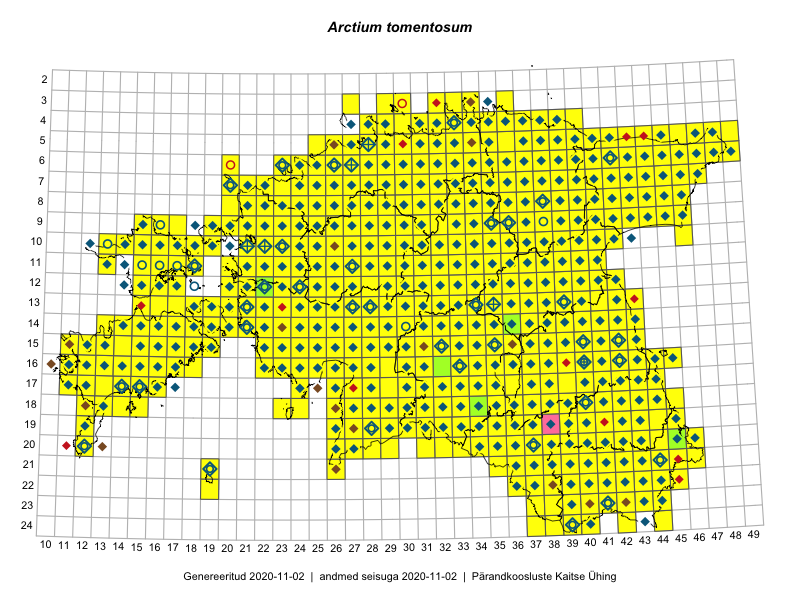

Arctium tomentosum — villtakjas
Asteraceae :: Arctium tomentosum Mill. (2020); Lappa tomentosa (Mill.) Lam. (9)

Kaart põhineb 2461 kirjel:
vaatlusi 1947
herbaareksemplare 82
PKÜ kirjeid1 351
ELFi kirjeid2 61
LVA kirjeid3 20
Taime kaasaegsed ja ajaloolised leiukohad asuvad 511 ruudus.
Tingmärgid ja leidudega ruutude arvud periooditi uues (u) ja 2005 andmestikus (v)
| █ | vahemik | u4 | v5 |
|---|---|---|---|
| █ | 2006–2020 | 498 | – |
| ◆/◇ | 1971–2005 | 439 | 447 |
| ○ | 1921–1970 | 44 | 2 |
| + | kuni 1920 | 6 | 0 |
| × | hävinud | – | 0 |
| ? | kaheldav | – | 0 |
| Ruut | Leidja(d) | Leiuaeg | Kirje |
|---|---|---|---|
| 16-28 | Indrek Tammekänd | 2020-10-09 | ruut/ala: Arctium tomentosum Mill. |
| 16-16 | Toomas Kukk | 2020-09-10 | ruut/ala: Arctium tomentosum Mill. |
| 24-38 | Meeli Mesipuu | 2020-09-08 | PKÜ: 20696 |
| 16-23 | Toomas Kukk | 2020-09-01 | PKÜ: 20994 |
| 14-22 | Peedu Saar, Toomas Kukk | 2020-08-30 | ruut/ala: Arctium tomentosum Mill. |
| 19-29 | Meeli Mesipuu | 2020-08-28 | ruut/ala: Arctium tomentosum Mill. |
| 15-17 | Mari Reitalu, Sirje Azarov | 2020-08-27–2020-09-06 | ruut/ala: Arctium tomentosum Mill. |
| 10-36 | Peedu Saar | 2020-08-25 | ruut/ala: Arctium tomentosum Mill. |
| 17-33 | Peedu Saar | 2020-08-21 | ruut/ala: Arctium tomentosum Mill. |
| 18-33 | Ott Luuk, Jaak-Albert Metsoja | 2020-08-21 | ruut/ala: Arctium tomentosum Mill. |
| 11-38 | Peedu Saar | 2020-08-19 | ruut/ala: Arctium tomentosum Mill. |
| 07-43 | Toomas Kukk, Ott Luuk, Kersti Tambets, Sten Mander, Kristine Fenske | 2020-08-18 | ruut/ala: Arctium tomentosum Mill. |
| 05-42 | Toomas Kukk, Ott Luuk, Kersti Tambets, Sten Mander, Kristine Fenske | 2020-08-18 | ruut/ala: Arctium tomentosum Mill. |
| 14-17 | Mari Reitalu, Sirje Azarov | 2020-08-18 | ruut/ala: Arctium tomentosum Mill. |
| 13-17 | Mari Reitalu, Sirje Azarov | 2020-08-18 | ruut/ala: Arctium tomentosum Mill. |
| 15-35 | Peedu Saar | 2020-08-17 | PKÜ: 20533 |
| 15-35 | Peedu Saar | 2020-08-17 | PKÜ: 20538 |
| 13-20 | Toomas Kukk, Martin Tikk | 2020-08-12 | ruut/ala: Arctium tomentosum Mill. |
| 15-35 | Peedu Saar | 2020-08-10–2020-08-17 | ruut/ala: Arctium tomentosum Mill. |
| 16-17 | Mari Reitalu, Sirje Azarov | 2020-08-08–2020-08-29 | ruut/ala: Arctium tomentosum Mill. |
| 15-42 | Peedu Saar | 2020-08-08 | ruut/ala: Arctium tomentosum Mill. |
| 17-13 | Mari Reitalu, Triin Reitalu | 2020-08-07 | ruut/ala: Arctium tomentosum Mill. |
| 10-17 | Peedu Saar | 2020-08-06 | PKÜ: 20609 |
| 17-38 | Jaak Pärtel | 2020-08-06 | punkt: Arctium tomentosum Mill. |
| 17-38 | Jaak Pärtel | 2020-08-06 | punkt: Arctium tomentosum Mill. |
| 17-38 | Jaak Pärtel | 2020-08-06 | punkt: Arctium tomentosum Mill. |
| 22-42 | Toomas Kukk, Eerik Leibak | 2020-08-05 | ruut/ala: Arctium tomentosum Mill. |
| 10-23 | Ott Luuk | 2020-08-05 | ruut/ala: Arctium tomentosum Mill. |
| 14-39 | Peedu Saar | 2020-08-03 | ruut/ala: Arctium tomentosum Mill. |
| 12-38 | Ulvi Selgis | 2020-07-31 | punkt: Arctium tomentosum Mill. |
| 06-27 | Peedu Saar | 2020-07-30 | ruut/ala: Arctium tomentosum Mill. |
| 09-45 | Toomas Kukk | 2020-07-29 | PKÜ: 21086 |
| 09-45 | Peedu Saar | 2020-07-29 | PKÜ: 20504 |
| 08-43 | Toomas Kukk | 2020-07-28 | ruut/ala: Arctium tomentosum Mill. |
| 09-43 | Toomas Kukk | 2020-07-28 | ruut/ala: Arctium tomentosum Mill. |
| 08-43 | Toomas Kukk | 2020-07-28 | PKÜ: 21095 |
| 08-43 | Peedu Saar | 2020-07-28 | ruut/ala: Arctium tomentosum Mill. |
| 08-25 | Ott Luuk | 2020-07-22–2020-07-23 | ruut/ala: Arctium tomentosum Mill. |
| 16-40 | Art Villem Adojaan | 2020-07-17 | punkt: Arctium tomentosum Mill. |
| 16-39 | Art Villem Adojaan | 2020-07-15 | punkt: Arctium tomentosum Mill. |
| 06-28 | Toomas Kukk | 2020-07-12 | ruut/ala: Arctium tomentosum Mill. |
| 05-32 | Rein Kalamees | 2020-07-12 | ruut/ala: Arctium tomentosum Mill. |
| 16-40 | Art Villem Adojaan | 2020-07-08 | punkt: Arctium tomentosum Mill. |
| 16-40 | Art Villem Adojaan | 2020-07-08 | punkt: Arctium tomentosum Mill. |
| 19-12 | Toomas Kukk | 2020-07-02 | ruut/ala: Arctium tomentosum Mill. |
| 17-11 | Ott Luuk, Rein Kalamees | 2020-07-01 | PKÜ: 20222 |
| 20-37 | Ott Luuk | 2020-06-27 | ruut/ala: Arctium tomentosum Mill. |
| 08-28 | Ott Luuk | 2020-06-21 | ruut/ala: Arctium tomentosum Mill. |
| 07-28 | Ott Luuk | 2020-06-21 | ruut/ala: Arctium tomentosum Mill. |
| 05-29 | Peedu Saar, Mart Meriste | 2020-06-19 | ruut/ala: Arctium tomentosum Mill. |
| 17-38 | Jaak Pärtel | 2020-06-13 | punkt: Arctium tomentosum Mill. |
| 09-35 | Toomas Kukk, Meeli Mesipuu | 2020-06-08 | ruut/ala: Arctium tomentosum Mill. |
| 07-36 | Toomas Kukk, Meeli Mesipuu | 2020-06-08 | ruut/ala: Arctium tomentosum Mill. |
| 04-36 | Tiina Reintal | 2020-06-06 | punkt: Arctium tomentosum Mill. |
| 10-28 | Kalev Tihkan | 2020-06-06 | punkt: Arctium tomentosum Mill. |
| 08-28 | Irene Volk | 2020-06-06 | punkt: Arctium tomentosum Mill. |
| 09-26 | Hele Möllits | 2020-06-06 | punkt: Arctium tomentosum Mill. |
| 08-39 | Elen Laine | 2020-06-06 | punkt: Arctium tomentosum Mill. |
| 16-40 | Thea Kull | 2020-05-29–2020-07-03 | ruut/ala: Arctium tomentosum Mill. |
| 13-21 | Toomas Kukk, Peedu Saar | 2019-09-25 | ruut/ala: Arctium tomentosum Mill. |
| 11-32 | Indrek Tammekänd | 2019-09-22 | ruut/ala: Arctium tomentosum Mill. |
| 10-21 | Ott Luuk | 2019-09-19 | ruut/ala: Arctium tomentosum Mill. |
| 09-19 | Toomas Kukk, Peedu Saar | 2019-09-17 | ruut/ala: Arctium tomentosum Mill. |
| 08-44 | Thea Kull, Toomas Kukk | 2019-09-12 | ruut/ala: Arctium tomentosum Mill. |
| 07-45 | Thea Kull, Toomas Kukk | 2019-09-12 | ruut/ala: Arctium tomentosum Mill. |
| 05-48 | Peedu Saar, Timo Luhamäe | 2019-09-12 | ruut/ala: Arctium tomentosum Mill. |
| 07-43 | Meeli Mesipuu, Ott Luuk | 2019-09-12 | ruut/ala: Arctium tomentosum Mill. |
| 06-46 | Toomas Kukk, Thea Kull | 2019-09-11 | ruut/ala: Arctium tomentosum Mill. |
| 05-46 | Thea Kull, Toomas Kukk | 2019-09-11 | ruut/ala: Arctium tomentosum Mill. |
| 06-44 | Ott Luuk, Meeli Mesipuu | 2019-09-11 | ruut/ala: Arctium tomentosum Mill. |
| 05-43 | Ott Luuk, Meeli Mesipuu | 2019-09-11 | ruut/ala: Arctium tomentosum Mill. |
| 05-44 | Meeli Mesipuu, Ott Luuk | 2019-09-11 | ruut/ala: Arctium tomentosum Mill. |
| 10-39 | Toomas Kukk, Thea Kull | 2019-09-10 | ruut/ala: Arctium tomentosum Mill. |
| 10-40 | Toomas Kukk, Thea Kull | 2019-09-10 | ruut/ala: Arctium tomentosum Mill. |
| 09-40 | Toomas Kukk, Thea Kull | 2019-09-10 | punkt: Arctium tomentosum Mill. |
| 08-41 | Peedu Saar, Timo Luhamäe | 2019-09-10 | ruut/ala: Arctium tomentosum Mill. |
| 09-41 | Peedu Saar, Timo Luhamäe | 2019-09-10 | ruut/ala: Arctium tomentosum Mill. |
| 08-43 | Ott Luuk, Meeli Mesipuu | 2019-09-10 | ruut/ala: Arctium tomentosum Mill. |
| 09-22 | Ott Luuk | 2019-09-03–2019-09-04 | ruut/ala: Arctium tomentosum Mill. |
| 11-25 | Toomas Kukk, Peedu Saar | 2019-08-30 | ruut/ala: Arctium tomentosum Mill. |
| 12-23 | Peedu Saar, Toomas Kukk | 2019-08-30 | ruut/ala: Arctium tomentosum Mill. |
| 16-32 | Thea Kull, Mari Reitalu | 2019-08-29 | TAA0148078: Arctium tomentosum Mill. |
| 12-31 | Ott Luuk, Eerik Leibak | 2019-08-29 | ruut/ala: Arctium tomentosum Mill. |
| 16-32 | Mari Reitalu, Thea Kull, Martin Tikk | 2019-08-29 | ruut/ala: Arctium tomentosum Mill. |
| 15-30 | Meeli Mesipuu, Timo Luhamäe | 2019-08-28 | ruut/ala: Arctium tomentosum Mill. |
| 13-30 | Mari Reitalu, Thea Kull | 2019-08-28 | ruut/ala: Arctium tomentosum Mill. |
| 17-33 | Toomas Kukk, Peedu Saar, Martin Tikk | 2019-08-27 | ruut/ala: Arctium tomentosum Mill. |
| 12-36 | Ott Luuk, Eerik Leibak | 2019-08-27 | ruut/ala: Arctium tomentosum Mill. |
| 15-35 | Meeli Mesipuu, Timo Luhamäe | 2019-08-27 | ruut/ala: Arctium tomentosum Mill. |
| 16-33 | Mari Reitalu, Thea Kull | 2019-08-27 | ruut/ala: Arctium tomentosum Mill. |
| 18-44 | Peedu Saar, Ott Luuk | 2019-08-21 | ruut/ala: Arctium tomentosum Mill. |
| 11-36 | Peedu Saar | 2019-08-10 | ruut/ala: Arctium tomentosum Mill. |
| 09-40 | Rein Kalamees, Toomas Kukk | 2019-08-09 | ruut/ala: Arctium tomentosum Mill. |
| 08-39 | Rein Kalamees, Toomas Kukk | 2019-08-08 | ruut/ala: Arctium tomentosum Mill. |
| 09-39 | Rein Kalamees, Toomas Kukk | 2019-08-08 | ruut/ala: Arctium tomentosum Mill. |
| 10-35 | Peedu Saar, Timo Luhamäe | 2019-08-08 | ruut/ala: Arctium tomentosum Mill. |
| 10-34 | Peedu Saar, Timo Luhamäe | 2019-08-08 | ruut/ala: Arctium tomentosum Mill. |
| 06-35 | Toomas Kukk, Rein Kalamees, Kaur Maran | 2019-08-07 | ruut/ala: Arctium tomentosum Mill. |
| 07-35 | Toomas Kukk, Rein Kalamees, Kaur Maran | 2019-08-07 | ruut/ala: Arctium tomentosum Mill. |
| 07-34 | Toomas Kukk, Rein Kalamees, Kaur Maran | 2019-08-07 | ruut/ala: Arctium tomentosum Mill. |
| 06-36 | Peedu Saar, Timo Luhamäe | 2019-08-07 | ruut/ala: Arctium tomentosum Mill. |
| 05-35 | Peedu Saar, Timo Luhamäe | 2019-08-07 | ruut/ala: Arctium tomentosum Mill. |
| 03-32 | Ott Luuk, Jaak-Albert Metsoja | 2019-08-07 | ruut/ala: Arctium tomentosum Mill. |
| 03-33 | Ott Luuk, Jaak-Albert Metsoja | 2019-08-07 | ruut/ala: Arctium tomentosum Mill. |
| 04-33 | Ott Luuk, Jaak-Albert Metsoja | 2019-08-07 | ruut/ala: Arctium tomentosum Mill. |
| 04-37 | Meeli Mesipuu | 2019-08-07 | ruut/ala: Arctium tomentosum Mill. |
| 05-38 | Ott Luuk, Jaak-Albert Metsoja | 2019-08-06 | ruut/ala: Arctium tomentosum Mill. |
| 04-36 | Meeli Mesipuu | 2019-08-06 | ruut/ala: Arctium tomentosum Mill. |
| 04-32 | Rein Kalamees, Toomas Kukk | 2019-08-05 | ruut/ala: Arctium tomentosum Mill. |
| 08-36 | Ott Luuk, Jaak-Albert Metsoja | 2019-08-05 | ruut/ala: Arctium tomentosum Mill. |
| 07-36 | Ott Luuk, Jaak-Albert Metsoja | 2019-08-05 | ruut/ala: Arctium tomentosum Mill. |
| 06-38 | Meeli Mesipuu | 2019-08-05 | ruut/ala: Arctium tomentosum Mill. |
| 06-39 | Meeli Mesipuu | 2019-08-05 | ruut/ala: Arctium tomentosum Mill. |
| 10-32 | Ott Luuk | 2019-07-31 | ruut/ala: Arctium tomentosum Mill. |
| 06-28 | Toomas Kukk | 2019-07-29 | ruut/ala: Arctium tomentosum Mill. |
| 18-39 | Thea Kull | 2019-07-25 | ruut/ala: Arctium tomentosum Mill. |
| 09-31 | Ott Luuk, Toivo Sepp | 2019-07-25 | ruut/ala: Arctium tomentosum Mill. |
| 08-22 | Peedu Saar | 2019-07-23 | ruut/ala: Arctium tomentosum Mill. |
| 12-32 | Kärt Koskor | 2019-07-19 | LVA: -982138588 |
| 16-40 | Meeli Mesipuu | 2019-07-17 | ruut/ala: Arctium tomentosum Mill. |
| 18-36 | Ott Luuk, Peedu Saar | 2019-07-16 | ruut/ala: Arctium tomentosum Mill. |
| 19-35 | Ott Luuk, Peedu Saar | 2019-07-16 | ruut/ala: Arctium tomentosum Mill. |
| 18-37 | Peedu Saar, Ott Luuk | 2019-07-15 | ruut/ala: Arctium tomentosum Mill. |
| 17-38 | Ott Luuk, Peedu Saar | 2019-07-15 | ruut/ala: Arctium tomentosum Mill. |
| 05-32 | Imbi Vahuri | 2019-07-14 | punkt: Arctium tomentosum Mill. |
| 23-41 | Toomas Kukk, Indrek Tammekänd | 2019-07-12 | ruut/ala: Arctium tomentosum Mill. |
| 23-42 | Toomas Kukk, Indrek Tammekänd | 2019-07-12 | ruut/ala: Arctium tomentosum Mill. |
| 24-39 | Peedu Saar, Timo Luhamäe | 2019-07-12 | ruut/ala: Arctium tomentosum Mill. |
| 20-40 | Peedu Saar, Timo Luhamäe | 2019-07-12 | ruut/ala: Arctium tomentosum Mill. |
| 22-44 | Ott Luuk, Tiit Hallikma | 2019-07-12 | ruut/ala: Arctium tomentosum Mill. |
| 22-40 | Toomas Kukk, Indrek Tammekänd | 2019-07-11 | ruut/ala: Arctium tomentosum Mill. |
| 22-41 | Toomas Kukk, Indrek Tammekänd | 2019-07-11 | ruut/ala: Arctium tomentosum Mill. |
| 24-44 | Ott Luuk, Tiit Hallikma | 2019-07-11 | ruut/ala: Arctium tomentosum Mill. |
| 19-41 | Meeli Mesipuu | 2019-07-11 | ruut/ala: Arctium tomentosum Mill. |
| 21-40 | Toomas Kukk, Indrek Tammekänd | 2019-07-10 | ruut/ala: Arctium tomentosum Mill. |
| 22-38 | Peedu Saar, Timo Luhamäe | 2019-07-10 | ruut/ala: Arctium tomentosum Mill. |
| 20-46 | Ott Luuk, Tiit Hallikma | 2019-07-10 | ruut/ala: Arctium tomentosum Mill. |
| 20-45 | Ott Luuk, Tiit Hallikma | 2019-07-10 | ruut/ala: Arctium tomentosum Mill. |
| 20-45 | Ott Luuk, Tiit Hallikma | 2019-07-10 | TAA0151491: Arctium tomentosum Mill. |
| 20-41 | Toomas Kukk, Indrek Tammekänd | 2019-07-09 | ruut/ala: Arctium tomentosum Mill. |
| 20-42 | Toomas Kukk, Indrek Tammekänd | 2019-07-09 | ruut/ala: Arctium tomentosum Mill. |
| 18-42 | Thea Kull, Meeli Mesipuu | 2019-07-09 | ruut/ala: Arctium tomentosum Mill. |
| 20-43 | Ott Luuk, Tiit Hallikma | 2019-07-09 | ruut/ala: Arctium tomentosum Mill. |
| 15-15 | Toomas Kukk, Eerik Leibak | 2019-07-05 | ruut/ala: Arctium tomentosum Mill. |
| 06-39 | Peedu Saar, Ott Luuk | 2019-07-05 | ruut/ala: Arctium tomentosum Mill. |
| 08-41 | Ott Luuk, Peedu Saar | 2019-07-04 | ruut/ala: Arctium tomentosum Mill. |
| 14-39 | Ott Luuk, Kaili Kattai | 2019-07-03 | ruut/ala: Arctium tomentosum Mill. |
| 05-28 | Meeli Mesipuu | 2019-06-30 | ruut/ala: Arctium tomentosum Mill. |
| 05-28 | Meeli Mesipuu | 2019-06-30 | ruut/ala: Arctium tomentosum Mill. |
| 05-28 | Meeli Mesipuu | 2019-06-30 | ruut/ala: Arctium tomentosum Mill. |
| 05-28 | Meeli Mesipuu | 2019-06-30 | ruut/ala: Arctium tomentosum Mill. |
| 05-27 | Meeli Mesipuu | 2019-06-26 | ruut/ala: Arctium tomentosum Mill. |
| 05-27 | Meeli Mesipuu | 2019-06-26 | ruut/ala: Arctium tomentosum Mill. |
| 05-27 | Meeli Mesipuu | 2019-06-26 | ruut/ala: Arctium tomentosum Mill. |
| 05-28 | Meeli Mesipuu | 2019-06-26 | ruut/ala: Arctium tomentosum Mill. |
| 05-28 | Meeli Mesipuu | 2019-06-26 | ruut/ala: Arctium tomentosum Mill. |
| 06-27 | Meeli Mesipuu | 2019-06-22 | ruut/ala: Arctium tomentosum Mill. |
| 06-27 | Meeli Mesipuu | 2019-06-22 | ruut/ala: Arctium tomentosum Mill. |
| 06-27 | Meeli Mesipuu | 2019-06-16 | ruut/ala: Arctium tomentosum Mill. |
| 17-40 | Margus Ots, Ekke Rikka, Sigrid Ots, Meelis Pärtel, Kadri Pärtel, Jaak Pärtel, Karin Pai, Marko Mägi, Leene Pärtel | 2019-06-14–2019-06-15 | punkt: Arctium tomentosum Mill. |
| 16-40 | Thea Kull | 2019-06-14 | ruut/ala: Arctium tomentosum Mill. |
| 10-28 | Ott Luuk | 2019-06-14 | punkt: Arctium tomentosum Mill. |
| 16-40 | Margit Hirv, Veljo Runnel | 2019-06-14 | punkt: Arctium tomentosum Mill. |
| 14-36 | Margit Hirv, Anni Hirv, Martin Hirv | 2019-06-14 | punkt: Arctium tomentosum Mill. |
| 16-40 | Aivi Kasik, Martin Tikk, Weralda Lakeman, Thea Kull | 2019-06-14 | punkt: Arctium tomentosum Mill. |
| 16-40 | Aivi Kasik, Martin Tikk, Weralda Lakeman, Thea Kull | 2019-06-14 | punkt: Arctium tomentosum Mill. |
| 10-28 | Aat Sarv, Ott Luuk | 2019-06-14 | punkt: Arctium tomentosum Mill. |
| 05-29 | Thea Kull | 2019-06-12 | ruut/ala: Arctium tomentosum Mill. |
| 10-38 | Peedu Saar, Ott Luuk | 2019-06-10 | ruut/ala: Arctium tomentosum Mill. |
| 16-45 | Ott Luuk | 2019-06-07 | ruut/ala: Arctium tomentosum Mill. |
| 14-20 | Peedu Saar | 2018-09-19 | ruut/ala: Arctium tomentosum Mill. |
| 15-42 | Ott Luuk, Meeli Mesipuu | 2018-09-19 | ruut/ala: Arctium tomentosum Mill. |
| 06-49 | Peedu Saar, Toomas Kukk | 2018-09-04 | ruut/ala: Arctium tomentosum Mill. |
| 05-41 | Peedu Saar, Toomas Kukk | 2018-09-03 | ruut/ala: Arctium tomentosum Mill. |
| 10-31 | Ott Luuk | 2018-08-28 | ruut/ala: Arctium tomentosum Mill. |
| 20-44 | Toomas Kukk, Eerik Leibak, Timo Luhamäe | 2018-08-27 | ruut/ala: Arctium tomentosum Mill. |
| 14-38 | Peedu Saar | 2018-08-23 | ruut/ala: Arctium tomentosum Mill. |
| 07-47 | Meeli Mesipuu | 2018-08-18 | ruut/ala: Arctium tomentosum Mill. |
| 12-25 | Toomas Kukk, Ott Luuk, Peedu Saar | 2018-08-17 | ruut/ala: Arctium tomentosum Mill. |
| 11-25 | Peedu Saar, Toomas Kukk, Ott Luuk, Kersti Tambets, Sten Mander | 2018-08-16 | ruut/ala: Arctium tomentosum Mill. |
| 09-28 | Peedu Saar, Toomas Kukk, Ott Luuk, Kersti Tambets, Sten Mander | 2018-08-16 | ruut/ala: Arctium tomentosum Mill. |
| 05-43 | Indrek Tammekänd | 2018-08-11 | ruut/ala: Arctium tomentosum Mill. |
| 05-32 | Imbi Vahuri | 2018-08-11 | punkt: Arctium tomentosum Mill. |
| 05-44 | Indrek Tammekänd | 2018-08-10–2018-08-11 | ruut/ala: Arctium tomentosum Mill. |
| 04-33 | Peedu Saar, Toomas Kukk | 2018-08-08 | ruut/ala: Arctium tomentosum Mill. |
| 04-34 | Peedu Saar, Toomas Kukk | 2018-08-08 | ruut/ala: Arctium tomentosum Mill. |
| 19-31 | Peedu Saar | 2018-08-03 | ruut/ala: Arctium tomentosum Mill. |
| 08-28 | Tiina Elvisto, Riima Niidas | 2018-08-01 | punkt: Arctium tomentosum Mill. |
| 18-33 | Peedu Saar | 2018-08-01 | ruut/ala: Arctium tomentosum Mill. |
| 14-25 | Indrek Tammekänd | 2018-07-30 | ELF: 24582 |
| 08-27 | Helen Õunap | 2018-07-24 | LVA: 1316235102 |
| 08-29 | Alvar Jõekaar | 2018-07-23 | LVA: -31644012 |
| 15-42 | Peedu Saar | 2018-07-20 | ruut/ala: Arctium tomentosum Mill. |
| 12-40 | Peedu Saar | 2018-07-19 | ruut/ala: Arctium tomentosum Mill. |
| 23-43 | Toomas Kukk, Eerik Leibak | 2018-07-18 | ruut/ala: Arctium tomentosum Mill. |
| 09-43 | Toomas Kukk | 2018-07-17 | ruut/ala: Arctium tomentosum Mill. |
| 08-44 | Peedu Saar | 2018-07-17 | ruut/ala: Arctium tomentosum Mill. |
| 12-23 | Heli Esko | 2018-07-14 | LVA: -953140842 |
| 12-24 | Meeli Mesipuu | 2018-07-12 | ruut/ala: Arctium tomentosum Mill. |
| 05-27 | Helen Kallaste | 2018-07-12 | LVA: -2060162890 |
| 10-18 | Toomas Kukk, Meeli Mesipuu | 2018-07-11 | ruut/ala: Arctium tomentosum Mill. |
| 06-23 | Ott Luuk, Meeli Mesipuu, Jaak-Albert Metsoja, Mari Metsoja | 2018-07-05 | ruut/ala: Arctium tomentosum Mill. |
| 06-23 | Ott Luuk, Meeli Mesipuu, Jaak-Albert Metsoja, Mari Metsoja, Peedu Saar | 2018-07-04–2018-07-06 | ruut/ala: Arctium tomentosum Mill. |
| 06-23 | Peedu Saar | 2018-07-04 | ruut/ala: Arctium tomentosum Mill. |
| 07-37 | Peedu Saar, Toomas Kukk, Ilmar Uibopuu | 2018-06-30 | ruut/ala: Arctium tomentosum Mill. |
| 07-28 | Mari Reitalu, Sirje Azarov | 2018-06-30 | ruut/ala: Arctium tomentosum Mill. |
| 05-43 | Liisa Oks | 2018-06-30 | LVA: 1800067052 |
| 05-32 | Rein Kalamees | 2018-06-28 | ruut/ala: Arctium tomentosum Mill. |
| 12-22 | Trinus Haitjema | 2018-06-26 | punkt: Arctium tomentosum Mill. |
| 05-40 | Heete Ausmeel, Triin Edovald, Evelin Laanest, Kristi Oja | 2018-06-26 | LVA: -893023844 |
| 06-32 | Miina Krabbi | 2018-06-17 | LVA: 2015453848 |
| 17-40 | Margus Ots, Sigrid Ots, Ekke Rikka | 2018-06-16 | punkt: Arctium tomentosum Mill. |
| 06-28 | Leelo Rood | 2018-06-16 | punkt: Arctium tomentosum Mill. |
| 16-31 | Indrek Tammekänd | 2018-06-04–2018-06-05 | ruut/ala: Arctium tomentosum Mill. |
| 18-33 | Mari Reitalu, Elle Roosaluste | 2018-06-02 | ruut/ala: Arctium tomentosum Mill. |
| 18-23 | Indrek Tammekänd | 2018-05-31–2018-06-02 | ruut/ala: Arctium tomentosum Mill. |
| 17-43 | Peedu Saar, Thea Kull, Malle Leht | 2018-05-28–2018-05-30 | ruut/ala: Arctium tomentosum Mill. |
| 10-36 | Indrek Tammekänd | 2018-05-27 | ruut/ala: Arctium tomentosum Mill. |
| 13-18 | Toomas Kukk, Ilmar Uibopuu | 2018-05-26 | ruut/ala: Arctium tomentosum Mill. |
| 11-36 | Indrek Tammekänd, Jaak Tammekänd, Agu Leivits, Meelis Leivits, Alar Soppe, Triin Leetmaa, Margus Pensa | 2018-05-25–2018-05-27 | ruut/ala: Arctium tomentosum Mill. |
| 16-40 | Selena Vahtramäe | 2018-05-15 | LVA: -188945794 |
| 03-30 | Peedu Saar | 2017-09-29 | ruut/ala: Arctium tomentosum Mill. |
| 07-37 | Toomas Kukk, Peedu Saar | 2017-09-28 | ruut/ala: Arctium tomentosum Mill. |
| 09-40 | Toomas Kukk, Peedu Saar | 2017-09-28 | ruut/ala: Arctium tomentosum Mill. |
| 08-39 | Peedu Saar, Toomas Kukk | 2017-09-28 | ruut/ala: Arctium tomentosum Mill. |
| 04-38 | Peedu Saar, Toomas Kukk | 2017-09-28 | ruut/ala: Arctium tomentosum Mill. |
| 06-36 | Peedu Saar, Toomas Kukk | 2017-09-27 | ruut/ala: Arctium tomentosum Mill. |
| 09-35 | Peedu Saar, Toomas Kukk | 2017-09-27 | ruut/ala: Arctium tomentosum Mill. |
| 08-35 | Peedu Saar, Toomas Kukk | 2017-09-27 | ruut/ala: Arctium tomentosum Mill. |
| 08-38 | Peedu Saar, Toomas Kukk | 2017-09-27 | ruut/ala: Arctium tomentosum Mill. |
| 16-27 | Indrek Tammekänd | 2017-09-22 | ruut/ala: Arctium tomentosum Mill. |
| 10-29 | Ott Luuk, Peedu Saar | 2017-09-15 | ruut/ala: Arctium tomentosum Mill. |
| 11-29 | Ott Luuk, Peedu Saar | 2017-09-15 | punkt: Arctium tomentosum Mill. |
| 09-16 | Ott Luuk, Peedu Saar | 2017-09-14–2017-09-15 | ruut/ala: Arctium tomentosum Mill. |
| 10-15 | Ott Luuk, Peedu Saar | 2017-09-14 | ruut/ala: Arctium tomentosum Mill. |
| 12-15 | Toomas Kukk, Indrek Tammekänd | 2017-09-13 | ruut/ala: Arctium tomentosum Mill. |
| 11-15 | Peedu Saar, Ott Luuk | 2017-09-13 | ruut/ala: Arctium tomentosum Mill. |
| 09-17 | Peedu Saar, Ott Luuk | 2017-09-12 | ruut/ala: Arctium tomentosum Mill. |
| 11-18 | Ott Luuk, Peedu Saar | 2017-09-12 | ruut/ala: Arctium tomentosum Mill. |
| 10-18 | Ott Luuk, Peedu Saar | 2017-09-12 | ruut/ala: Arctium tomentosum Mill. |
| 12-17 | Toomas Kukk, Indrek Tammekänd | 2017-09-11 | ruut/ala: Arctium tomentosum Mill. |
| 11-17 | Toomas Kukk, Indrek Tammekänd | 2017-09-11 | ruut/ala: Arctium tomentosum Mill. |
| 10-17 | Ott Luuk, Peedu Saar | 2017-09-11 | ruut/ala: Arctium tomentosum Mill. |
| 09-23 | Peedu Saar, Toomas Kukk | 2017-09-07 | ruut/ala: Arctium tomentosum Mill. |
| 11-24 | Peedu Saar, Toomas Kukk | 2017-09-07 | ruut/ala: Arctium tomentosum Mill. |
| 14-25 | Peedu Saar, Toomas Kukk | 2017-09-06 | ruut/ala: Arctium tomentosum Mill. |
| 17-31 | Peedu Saar, Toomas Kukk | 2017-09-06 | ruut/ala: Arctium tomentosum Mill. |
| 14-26 | Indrek Tammekänd | 2017-09-04 | ruut/ala: Arctium tomentosum Mill. |
| 17-26 | Toomas Kukk, Ott Luuk, Kersti Tambets, Timo Luhamäe, Sten Mander | 2017-08-30 | ruut/ala: Arctium tomentosum Mill. |
| 18-29 | Ott Luuk, Toomas Kukk, Sten Mander, Timo Luhamäe, Kersti Tambets | 2017-08-29 | ruut/ala: Arctium tomentosum Mill. |
| 11-40 | Peedu Saar, Ott Luuk | 2017-08-23 | ruut/ala: Arctium tomentosum Mill. |
| 12-41 | Ott Luuk, Peedu Saar | 2017-08-23 | ruut/ala: Arctium tomentosum Mill. |
| 14-43 | Peedu Saar, Ott Luuk | 2017-08-21 | ruut/ala: Arctium tomentosum Mill. |
| 14-37 | Indrek Tammekänd | 2017-08-17–2017-08-18 | ruut/ala: Arctium tomentosum Mill. |
| 14-36 | Indrek Tammekänd | 2017-08-16 | ruut/ala: Arctium tomentosum Mill. |
| 14-35 | Peedu Saar | 2017-08-15–2017-09-16 | ruut/ala: Arctium tomentosum Mill. |
| 14-36 | Ott Luuk | 2017-08-15 | ruut/ala: Arctium tomentosum Mill. |
| 14-36 | Ott Luuk | 2017-08-15 | TAA0142798: Arctium tomentosum Mill. |
| 14-37 | Meeli Mesipuu | 2017-08-14 | ruut/ala: Arctium tomentosum Mill. |
| 16-28 | Peedu Saar, Timo Luhamäe | 2017-08-11 | ruut/ala: Arctium tomentosum Mill. |
| 14-28 | Ott Luuk, Indrek Tammekänd | 2017-08-11 | ruut/ala: Arctium tomentosum Mill. |
| 14-27 | Ott Luuk, Indrek Tammekänd | 2017-08-11 | ruut/ala: Arctium tomentosum Mill. |
| 09-24 | Mari Reitalu, Eerik Leibak | 2017-08-11 | ruut/ala: Arctium tomentosum Mill. |
| 14-29 | Ilmar Uibopuu, Toomas Kukk | 2017-08-11 | ruut/ala: Arctium tomentosum Mill. |
| 15-29 | Ilmar Uibopuu, Toomas Kukk | 2017-08-11 | ruut/ala: Arctium tomentosum Mill. |
| 11-25 | Toomas Kukk, Eerik Leibak | 2017-08-10 | ruut/ala: Arctium tomentosum Mill. |
| 05-26 | Peedu Saar, Timo Luhamäe | 2017-08-10 | ruut/ala: Arctium tomentosum Mill. |
| 11-20 | Ott Luuk, Ilmar Uibopuu | 2017-08-10 | ruut/ala: Arctium tomentosum Mill. |
| 07-25 | Mari Reitalu, Indrek Tammekänd | 2017-08-10 | ruut/ala: Arctium tomentosum Mill. |
| 07-23 | Mari Reitalu, Indrek Tammekänd | 2017-08-10 | ruut/ala: Arctium tomentosum Mill. |
| 11-21 | Ilmar Uibopuu, Ott Luuk | 2017-08-10 | ruut/ala: Arctium tomentosum Mill. |
| 11-24 | Eerik Leibak, Toomas Kukk | 2017-08-10 | ruut/ala: Arctium tomentosum Mill. |
| 09-29 | Toomas Kukk, Ilmar Uibopuu, Kadri Kuusksalu | 2017-08-09 | ruut/ala: Arctium tomentosum Mill. |
| 08-30 | Thea Kull, Ott Luuk | 2017-08-09 | ruut/ala: Arctium tomentosum Mill. |
| 12-24 | Peedu Saar, Timo Luhamäe | 2017-08-09 | ruut/ala: Arctium tomentosum Mill. |
| 12-25 | Peedu Saar, Timo Luhamäe | 2017-08-09 | ruut/ala: Arctium tomentosum Mill. |
| 08-29 | Ott Luuk, Thea Kull | 2017-08-09 | ruut/ala: Arctium tomentosum Mill. |
| 12-29 | Meeli Mesipuu, Indrek Tammekänd | 2017-08-09 | ruut/ala: Arctium tomentosum Mill. |
| 12-30 | Meeli Mesipuu, Indrek Tammekänd | 2017-08-09 | ruut/ala: Arctium tomentosum Mill. |
| 12-27 | Mari Reitalu, Eerik Leibak | 2017-08-09 | ruut/ala: Arctium tomentosum Mill. |
| 12-26 | Mari Reitalu, Eerik Leibak | 2017-08-09 | ruut/ala: Arctium tomentosum Mill. |
| 09-28 | Ilmar Uibopuu, Kadri Kuusksalu, Toomas Kukk, Ott Luuk | 2017-08-09 | ruut/ala: Arctium tomentosum Mill. |
| 08-26 | Toomas Kukk, Ilmar Uibopuu, Kadri Kuusksalu | 2017-08-08 | ruut/ala: Arctium tomentosum Mill. |
| 07-26 | Toomas Kukk, Ilmar Uibopuu, Kadri Kuusksalu | 2017-08-08 | ruut/ala: Arctium tomentosum Mill. |
| 10-28 | Thea Kull, Ott Luuk | 2017-08-08 | ruut/ala: Arctium tomentosum Mill. |
| 07-28 | Peedu Saar, Timo Luhamäe | 2017-08-08 | ruut/ala: Arctium tomentosum Mill. |
| 07-27 | Peedu Saar, Timo Luhamäe | 2017-08-08 | ruut/ala: Arctium tomentosum Mill. |
| 11-28 | Ott Luuk, Thea Kull | 2017-08-08 | ruut/ala: Arctium tomentosum Mill. |
| 09-27 | Meeli Mesipuu, Indrek Tammekänd | 2017-08-08 | ruut/ala: Arctium tomentosum Mill. |
| 09-26 | Meeli Mesipuu, Indrek Tammekänd | 2017-08-08 | ruut/ala: Arctium tomentosum Mill. |
| 08-27 | Mari Reitalu, Eerik Leibak | 2017-08-08 | ruut/ala: Arctium tomentosum Mill. |
| 08-28 | Mari Reitalu, Eerik Leibak | 2017-08-08 | ruut/ala: Arctium tomentosum Mill. |
| 13-37 | Toomas Kukk, Ilmar Uibopuu | 2017-08-07 | ruut/ala: Arctium tomentosum Mill. |
| 13-33 | Toomas Kukk, Ilmar Uibopuu | 2017-08-07 | ruut/ala: Arctium tomentosum Mill. |
| 12-33 | Thea Kull, Ott Luuk | 2017-08-07 | ruut/ala: Arctium tomentosum Mill. |
| 05-30 | Rein Kalamees | 2017-08-07 | ruut/ala: Arctium tomentosum Mill. |
| 14-34 | Peedu Saar, Timo Luhamäe | 2017-08-07 | ruut/ala: Arctium tomentosum Mill. |
| 13-34 | Peedu Saar, Timo Luhamäe | 2017-08-07 | ruut/ala: Arctium tomentosum Mill. |
| 12-32 | Ott Luuk, Thea Kull | 2017-08-07 | ruut/ala: Arctium tomentosum Mill. |
| 14-19 | Meeli Mesipuu | 2017-08-07 | ruut/ala: Arctium tomentosum Mill. |
| 13-18 | Meeli Mesipuu | 2017-08-06 | ruut/ala: Arctium tomentosum Mill. |
| 17-12 | Mari Reitalu | 2017-08-05 | ruut/ala: Arctium tomentosum Mill. |
| 07-35 | Toomas Kukk | 2017-08-03 | ruut/ala: Arctium tomentosum Mill. |
| 11-34 | Thea Kull, Ott Luuk | 2017-08-03 | ruut/ala: Arctium tomentosum Mill. |
| 12-34 | Ott Luuk, Thea Kull | 2017-08-03 | ruut/ala: Arctium tomentosum Mill. |
| 16-39 | Thea Kull, Ott Luuk | 2017-08-01 | ruut/ala: Arctium tomentosum Mill. |
| 16-37 | Ott Luuk, Thea Kull | 2017-08-01 | ruut/ala: Arctium tomentosum Mill. |
| 07-24 | Toomas Kukk, Ilmar Uibopuu | 2017-07-30 | ruut/ala: Arctium tomentosum Mill. |
| 08-23 | Toomas Kukk, Ilmar Uibopuu | 2017-07-30 | ruut/ala: Arctium tomentosum Mill. |
| 07-22 | Toomas Kukk, Ilmar Uibopuu | 2017-07-29 | ruut/ala: Arctium tomentosum Mill. |
| 07-21 | Toomas Kukk, Ilmar Uibopuu | 2017-07-28 | ruut/ala: Arctium tomentosum Mill. |
| 08-21 | Toomas Kukk, Ilmar Uibopuu | 2017-07-28 | ruut/ala: Arctium tomentosum Mill. |
| 21-36 | Peedu Saar, Ott Luuk | 2017-07-28 | ruut/ala: Arctium tomentosum Mill. |
| 18-36 | Meeli Mesipuu | 2017-07-28 | ruut/ala: Arctium tomentosum Mill. |
| 23-39 | Peedu Saar, Ott Luuk | 2017-07-27 | ruut/ala: Arctium tomentosum Mill. |
| 22-39 | Ott Luuk, Peedu Saar | 2017-07-27 | ruut/ala: Arctium tomentosum Mill. |
| 16-37 | Meeli Mesipuu | 2017-07-27 | ruut/ala: Arctium tomentosum Mill. |
| 06-23 | Toomas Kukk, Ilmar Uibopuu, Kadri Kuusksalu | 2017-07-26 | ruut/ala: Arctium tomentosum Mill. |
| 14-39 | Peedu Saar | 2017-07-26 | ruut/ala: Arctium tomentosum Mill. |
| 20-38 | Ott Luuk, Peedu Saar | 2017-07-25 | ruut/ala: Arctium tomentosum Mill. |
| 12-42 | Peedu Saar | 2017-07-24 | ruut/ala: Arctium tomentosum Mill. |
| 16-42 | Peedu Saar | 2017-07-23 | ruut/ala: Arctium tomentosum Mill. |
| 20-39 | Ilmar Uibopuu | 2017-07-21–2017-07-24 | ruut/ala: Arctium tomentosum Mill. |
| 06-48 | Toomas Kukk | 2017-07-21 | ruut/ala: Arctium tomentosum Mill. |
| 06-49 | Toomas Kukk | 2017-07-21 | ruut/ala: Arctium tomentosum Mill. |
| 06-31 | Peedu Saar, Ott Luuk | 2017-07-21 | ruut/ala: Arctium tomentosum Mill. |
| 06-33 | Ott Luuk, Peedu Saar | 2017-07-21 | ruut/ala: Arctium tomentosum Mill. |
| 05-31 | Ott Luuk, Peedu Saar | 2017-07-20 | ruut/ala: Arctium tomentosum Mill. |
| 16-23 | Indrek Tammekänd, Eike Tammekänd | 2017-07-20 | ruut/ala: Arctium tomentosum Mill. |
| 06-34 | Peedu Saar, Ott Luuk | 2017-07-19 | ruut/ala: Arctium tomentosum Mill. |
| 06-35 | Ott Luuk, Peedu Saar | 2017-07-19 | ruut/ala: Arctium tomentosum Mill. |
| 08-40 | Peedu Saar, Ott Luuk | 2017-07-18 | ruut/ala: Arctium tomentosum Mill. |
| 08-38 | Ott Luuk, Peedu Saar | 2017-07-18 | ruut/ala: Arctium tomentosum Mill. |
| 06-27 | Evelin Laanest, Ilmar Uibopuu | 2017-07-18 | LVA: 2135276186 |
| 16-40 | Peedu Saar | 2017-07-10–2017-07-11 | ruut/ala: Arctium tomentosum Mill. |
| 18-29 | Indrek Tammekänd | 2017-07-05 | ruut/ala: Arctium tomentosum Mill. |
| 18-39 | Avo Veermäe | 2017-07-05 | LVA: -723071530 |
| 16-41 | Peedu Saar, Ott Luuk | 2017-07-03–2017-07-04 | ruut/ala: Arctium tomentosum Mill. |
| 12-15 | Ott Luuk, Toomas Kukk, Peedu Saar, Sander Laherand | 2017-06-30 | ruut/ala: Arctium tomentosum Mill. |
| 16-34 | Thea Kull, Ott Luuk | 2017-06-22 | ruut/ala: Arctium tomentosum Mill. |
| 15-41 | Peedu Saar | 2017-06-22 | ruut/ala: Arctium tomentosum Mill. |
| 16-35 | Ott Luuk, Thea Kull | 2017-06-22 | ruut/ala: Arctium tomentosum Mill. |
| 17-37 | Thea Kull, Ott Luuk | 2017-06-21 | ruut/ala: Arctium tomentosum Mill. |
| 16-36 | Ott Luuk, Thea Kull | 2017-06-21 | ruut/ala: Arctium tomentosum Mill. |
| 11-36 | Avo Veermäe | 2017-06-21 | LVA: 1286269132 |
| 14-35 | Peedu Saar, Ott Luuk | 2017-06-20 | ruut/ala: Arctium tomentosum Mill. |
| 14-37 | Thea Kull, Meeli Mesipuu | 2017-06-19 | ruut/ala: Arctium tomentosum Mill. |
| 06-20 | Peedu Saar | 2017-05-30 | ruut/ala: Arctium tomentosum Mill. |
| 07-20 | Peedu Saar, Elle Roosaluste, Kaili Orav | 2017-05-29–2017-05-30 | ruut/ala: Arctium tomentosum Mill. |
| 03-30 | Tiina Elvisto | 2017-05-27 | ruut/ala: Arctium tomentosum Mill. |
| 06-45 | Tõnu Ploompuu | 2017-05-13 | ruut/ala: Arctium tomentosum Mill. |
| 16-40 | Gerli Ottep | 2017-04-18 | LVA: 1604323760 |
| 15-12 | Toomas Kukk, Meeli Mesipuu | 2016-10-08 | ruut/ala: Arctium tomentosum Mill. |
| 17-13 | Ott Luuk, Peedu Saar | 2016-10-08 | ruut/ala: Arctium tomentosum Mill. |
| 14-13 | Toomas Kukk, Meeli Mesipuu, Mari Reitalu | 2016-10-06 | ruut/ala: Arctium tomentosum Mill. |
| 19-30 | Peedu Saar, Ott Luuk | 2016-10-06 | ruut/ala: Arctium tomentosum Mill. |
| 20-31 | Ott Luuk, Peedu Saar | 2016-10-06 | ruut/ala: Arctium tomentosum Mill. |
| 19-31 | Ott Luuk, Peedu Saar | 2016-10-06 | ruut/ala: Arctium tomentosum Mill. |
| 15-13 | Meeli Mesipuu, Toomas Kukk, Mari Reitalu | 2016-10-06 | ruut/ala: Arctium tomentosum Mill. |
| 16-13 | Toomas Kukk, Meeli Mesipuu | 2016-10-05 | ruut/ala: Arctium tomentosum Mill. |
| 16-12 | Mari Reitalu | 2016-10-04 | ruut/ala: Arctium tomentosum Mill. |
| 07-32 | Peedu Saar, Ott Luuk | 2016-09-28 | ruut/ala: Arctium tomentosum Mill. |
| 08-32 | Ott Luuk, Peedu Saar | 2016-09-28 | ruut/ala: Arctium tomentosum Mill. |
| 15-15 | Meeli Mesipuu | 2016-09-23 | ruut/ala: Arctium tomentosum Mill. |
| 21-35 | Ott Luuk, Peedu Saar | 2016-09-22 | ruut/ala: Arctium tomentosum Mill. |
| 18-24 | Peedu Saar, Ott Luuk | 2016-09-21 | ruut/ala: Arctium tomentosum Mill. |
| 20-32 | Meeli Mesipuu, Ott Luuk | 2016-09-18 | ruut/ala: Arctium tomentosum Mill. |
| 09-32 | Toomas Kukk, Peedu Saar | 2016-09-16 | ruut/ala: Arctium tomentosum Mill. |
| 08-33 | Peedu Saar, Toomas Kukk | 2016-09-15 | ruut/ala: Arctium tomentosum Mill. |
| 06-33 | Peedu Saar, Toomas Kukk | 2016-09-14 | ruut/ala: Arctium tomentosum Mill. |
| 05-43 | Peedu Saar, Toomas Kukk | 2016-09-13 | ruut/ala: Arctium tomentosum Mill. |
| 07-33 | Peedu Saar, Toomas Kukk | 2016-09-13 | ruut/ala: Arctium tomentosum Mill. |
| 05-44 | Peedu Saar, Toomas Kukk | 2016-09-13 | ruut/ala: Arctium tomentosum Mill. |
| 07-30 | Toomas Kukk, Peedu Saar | 2016-09-09 | ruut/ala: Arctium tomentosum Mill. |
| 08-30 | Peedu Saar, Toomas Kukk | 2016-09-09 | ruut/ala: Arctium tomentosum Mill. |
| 06-32 | Toomas Kukk, Peedu Saar | 2016-09-08 | ruut/ala: Arctium tomentosum Mill. |
| 06-31 | Peedu Saar, Toomas Kukk | 2016-09-08 | ruut/ala: Arctium tomentosum Mill. |
| 20-44 | Meeli Mesipuu | 2016-09-08 | ruut/ala: Arctium tomentosum Mill. |
| 09-31 | Peedu Saar, Ott Luuk | 2016-09-07 | ruut/ala: Arctium tomentosum Mill. |
| 08-28 | Peedu Saar, Ott Luuk | 2016-09-07 | ruut/ala: Arctium tomentosum Mill. |
| 09-30 | Ott Luuk, Peedu Saar | 2016-09-06–2016-09-07 | ruut/ala: Arctium tomentosum Mill. |
| 05-38 | Thea Kull, Toomas Kukk | 2016-09-06 | ruut/ala: Arctium tomentosum Mill. |
| 04-39 | Thea Kull, Toomas Kukk | 2016-09-05 | ruut/ala: Arctium tomentosum Mill. |
| 05-38 | Thea Kull, Toomas Kukk | 2016-09-05 | ruut/ala: Arctium tomentosum Mill. |
| 16-17 | Peedu Saar, Ott Luuk | 2016-09-01 | ruut/ala: Arctium tomentosum Mill. |
| 05-32 | Toomas Kukk, Sander Laherand | 2016-08-31 | ruut/ala: Arctium tomentosum Mill. |
| 13-16 | Peedu Saar, Ott Luuk | 2016-08-31 | ruut/ala: Arctium tomentosum Mill. |
| 14-16 | Ott Luuk, Peedu Saar | 2016-08-31 | ruut/ala: Arctium tomentosum Mill. |
| 09-46 | Meeli Mesipuu, Karin Kikas | 2016-08-31 | ruut/ala: Arctium tomentosum Mill. |
| 10-46 | Meeli Mesipuu, Karin Kikas | 2016-08-31 | ruut/ala: Arctium tomentosum Mill. |
| 06-30 | Toomas Kukk, Sander Laherand | 2016-08-30 | ruut/ala: Arctium tomentosum Mill. |
| 05-31 | Sander Laherand, Toomas Kukk | 2016-08-30 | ruut/ala: Arctium tomentosum Mill. |
| 18-15 | Peedu Saar | 2016-08-30 | ruut/ala: Arctium tomentosum Mill. |
| 18-14 | Ott Luuk | 2016-08-30 | ruut/ala: Arctium tomentosum Mill. |
| 05-29 | Toomas Kukk, Sander Laherand | 2016-08-29 | ruut/ala: Arctium tomentosum Mill. |
| 06-29 | Sander Laherand, Toomas Kukk | 2016-08-29 | ruut/ala: Arctium tomentosum Mill. |
| 13-17 | Peedu Saar, Ott Luuk | 2016-08-29 | ruut/ala: Arctium tomentosum Mill. |
| 15-18 | Mari Reitalu, Hannes Pehlak | 2016-08-26 | ruut/ala: Arctium tomentosum Mill. |
| 17-44 | Peedu Saar | 2016-08-24 | ruut/ala: Arctium tomentosum Mill. |
| 20-36 | Thea Kull, Ott Luuk | 2016-08-23 | ruut/ala: Arctium tomentosum Mill. |
| 18-38 | Ott Luuk, Thea Kull | 2016-08-23 | ruut/ala: Arctium tomentosum Mill. |
| 10-30 | Indrek Tammekänd, Janno Tammekänd, Üllar Tammekänd, Andreas Tammekänd, Tene Johanson | 2016-08-20–2016-08-21 | ruut/ala: Arctium tomentosum Mill. |
| 10-29 | Indrek Tammekänd, Janno Tammekänd, Üllar Tammekänd, Andreas Tammekänd, Tene Johanson | 2016-08-20–2016-08-21 | ruut/ala: Arctium tomentosum Mill. |
| 22-44 | Peedu Saar, Karin Kikas | 2016-08-19 | ruut/ala: Arctium tomentosum Mill. |
| 23-44 | Peedu Saar, Karin Kikas | 2016-08-19 | ruut/ala: Arctium tomentosum Mill. |
| 22-45 | Peedu Saar, Karin Kikas | 2016-08-18 | ruut/ala: Arctium tomentosum Mill. |
| 21-44 | Peedu Saar, Karin Kikas | 2016-08-18 | ruut/ala: Arctium tomentosum Mill. |
| 13-19 | Mari Reitalu, Sirje Azarov | 2016-08-16 | ruut/ala: Arctium tomentosum Mill. |
| 14-18 | Mari Reitalu | 2016-08-15 | ruut/ala: Arctium tomentosum Mill. |
| 15-19 | Mari Reitalu, Triin Reitalu | 2016-08-14 | ruut/ala: Arctium tomentosum Mill. |
| 15-17 | Peedu Saar, Toomas Kukk | 2016-08-13 | ruut/ala: Arctium tomentosum Mill. |
| 15-16 | Meeli Mesipuu, Maret Gerz | 2016-08-13 | ruut/ala: Arctium tomentosum Mill. |
| 14-14 | Peedu Saar, Maret Gerz | 2016-08-12 | ruut/ala: Arctium tomentosum Mill. |
| 15-14 | Maret Gerz, Peedu Saar | 2016-08-12 | ruut/ala: Arctium tomentosum Mill. |
| 17-14 | Toomas Kukk, Meeli Mesipuu, Johannes Kõdar | 2016-08-11 | ruut/ala: Arctium tomentosum Mill. |
| 12-16 | Sander Laherand, Thea Kull, Nele Jõessar | 2016-08-11 | ruut/ala: Arctium tomentosum Mill. |
| 14-15 | Peedu Saar, Maret Gerz | 2016-08-11 | ruut/ala: Arctium tomentosum Mill. |
| 04-39 | Ott Luuk, Kersti Tambets, Ülle Jõgar, Janika Sammasto, Sten Mander | 2016-08-11 | ruut/ala: Arctium tomentosum Mill. |
| 17-15 | Meeli Mesipuu, Toomas Kukk, Johannes Kõdar | 2016-08-11 | ruut/ala: Arctium tomentosum Mill. |
| 13-15 | Maret Gerz, Peedu Saar | 2016-08-11 | ruut/ala: Arctium tomentosum Mill. |
| 11-13 | Thea Kull, Peedu Saar | 2016-08-10 | ruut/ala: Arctium tomentosum Mill. |
| 06-47 | Ott Luuk, Kersti Tambets, Janika Sammasto, Ülle Jõgar, Sten Mander | 2016-08-10 | ruut/ala: Arctium tomentosum Mill. |
| 10-13 | Maret Gerz, Sander Laherand | 2016-08-10 | ruut/ala: Arctium tomentosum Mill. |
| 14-18 | Mari Reitalu, Sirje Azarov | 2016-08-09–2016-08-10 | ruut/ala: Arctium tomentosum Mill. |
| 10-15 | Toomas Kukk, Sander Laherand, Nele Jõessar | 2016-08-09 | ruut/ala: Arctium tomentosum Mill. |
| 11-15 | Thea Kull, Peedu Saar | 2016-08-09 | ruut/ala: Arctium tomentosum Mill. |
| 10-14 | Sander Laherand, Toomas Kukk, Nele Jõessar | 2016-08-09 | ruut/ala: Arctium tomentosum Mill. |
| 09-40 | Ott Luuk, Eerik Leibak | 2016-08-09 | ruut/ala: Arctium tomentosum Mill. |
| 09-39 | Ott Luuk, Eerik Leibak | 2016-08-09 | ruut/ala: Arctium tomentosum Mill. |
| 14-15 | Mari Reitalu, Sirje Azarov | 2016-08-09 | ruut/ala: Arctium tomentosum Mill. |
| 11-16 | Toomas Kukk, Thea Kull | 2016-08-08 | ruut/ala: Arctium tomentosum Mill. |
| 11-18 | Sander Laherand, Peedu Saar, Nele Jõessar | 2016-08-08 | ruut/ala: Arctium tomentosum Mill. |
| 10-38 | Ott Luuk, Eerik Leibak | 2016-08-08 | ruut/ala: Arctium tomentosum Mill. |
| 09-38 | Ott Luuk, Eerik Leibak | 2016-08-08 | ruut/ala: Arctium tomentosum Mill. |
| 16-18 | Mari Reitalu, Sirje Azarov | 2016-08-08 | ruut/ala: Arctium tomentosum Mill. |
| 20-12 | Mari Reitalu, Sirje Azarov | 2016-08-08 | ruut/ala: Arctium tomentosum Mill. |
| 11-17 | Maret Gerz, Meeli Mesipuu | 2016-08-08 | ruut/ala: Arctium tomentosum Mill. |
| 21-43 | Thea Kull, Peedu Saar | 2016-08-05 | ruut/ala: Arctium tomentosum Mill. |
| 09-42 | Ott Luuk, Eerik Leibak | 2016-08-05 | ruut/ala: Arctium tomentosum Mill. |
| 09-41 | Ott Luuk, Eerik Leibak | 2016-08-05 | ruut/ala: Arctium tomentosum Mill. |
| 22-42 | Thea Kull, Peedu Saar | 2016-08-04 | ruut/ala: Arctium tomentosum Mill. |
| 22-43 | Peedu Saar, Thea Kull | 2016-08-04 | ruut/ala: Arctium tomentosum Mill. |
| 10-41 | Ott Luuk, Eerik Leibak | 2016-08-04 | ruut/ala: Arctium tomentosum Mill. |
| 05-28 | Toomas Kukk, Peedu Saar | 2016-08-03 | ruut/ala: Arctium tomentosum Mill. |
| 10-39 | Ott Luuk, Eerik Leibak | 2016-08-03 | ruut/ala: Arctium tomentosum Mill. |
| 10-40 | Ott Luuk, Eerik Leibak | 2016-08-03 | ruut/ala: Arctium tomentosum Mill. |
| 18-13 | Mari Reitalu, Sirje Azarov | 2016-07-31 | ruut/ala: Arctium tomentosum Mill. |
| 08-40 | Toomas Kukk, Tiit Hallikma | 2016-07-29 | ruut/ala: Arctium tomentosum Mill. |
| 07-40 | Toomas Kukk, Tiit Hallikma | 2016-07-29 | ruut/ala: Arctium tomentosum Mill. |
| 04-30 | Sander Laherand, Eerik Leibak | 2016-07-29 | ruut/ala: Arctium tomentosum Mill. |
| 05-30 | Sander Laherand, Eerik Leibak | 2016-07-29 | ruut/ala: Arctium tomentosum Mill. |
| 08-42 | Peedu Saar, Timo Luhamäe | 2016-07-29 | ruut/ala: Arctium tomentosum Mill. |
| 08-41 | Peedu Saar, Timo Luhamäe | 2016-07-29 | ruut/ala: Arctium tomentosum Mill. |
| 07-39 | Meeli Mesipuu, Liina Oja | 2016-07-29 | ruut/ala: Arctium tomentosum Mill. |
| 17-41 | Kersti Püssa, Rein Kalamees | 2016-07-29 | ruut/ala: Arctium tomentosum Mill. |
| 15-36 | Karin Kaljund, Kaire Lanno | 2016-07-29 | ruut/ala: Arctium tomentosum Mill. |
| 09-43 | Hannes Pehlak, Ott Luuk | 2016-07-29 | ruut/ala: Arctium tomentosum Mill. |
| 04-40 | Tiit Hallikma, Ott Luuk | 2016-07-28 | ruut/ala: Arctium tomentosum Mill. |
| 06-40 | Sander Laherand, Peedu Saar | 2016-07-28 | ruut/ala: Arctium tomentosum Mill. |
| 05-40 | Peedu Saar, Sander Laherand | 2016-07-28 | ruut/ala: Arctium tomentosum Mill. |
| 05-39 | Ott Luuk, Tiit Hallikma | 2016-07-28 | ruut/ala: Arctium tomentosum Mill. |
| 03-32 | Meeli Mesipuu, Timo Luhamäe | 2016-07-28 | ruut/ala: Arctium tomentosum Mill. |
| 07-38 | Liina Oja, Eerik Leibak | 2016-07-28 | ruut/ala: Arctium tomentosum Mill. |
| 08-38 | Liina Oja, Eerik Leibak | 2016-07-28 | ruut/ala: Arctium tomentosum Mill. |
| 17-40 | Kersti Püssa, Rein Kalamees | 2016-07-28 | ruut/ala: Arctium tomentosum Mill. |
| 05-38 | Hannes Pehlak, Toomas Kukk, Susanna Vain | 2016-07-28 | ruut/ala: Arctium tomentosum Mill. |
| 04-39 | Hannes Pehlak, Toomas Kukk, Susanna Vain | 2016-07-28 | ruut/ala: Arctium tomentosum Mill. |
| 05-36 | Tõnu Ploompuu, Eerik Leibak | 2016-07-27 | ruut/ala: Arctium tomentosum Mill. |
| 07-35 | Toomas Kukk, Sander Laherand, Nele Jõessar | 2016-07-27 | ruut/ala: Arctium tomentosum Mill. |
| 08-36 | Thea Kull, Timo Luhamäe | 2016-07-27 | ruut/ala: Arctium tomentosum Mill. |
| 07-36 | Thea Kull, Timo Luhamäe | 2016-07-27 | ruut/ala: Arctium tomentosum Mill. |
| 08-35 | Sander Laherand, Toomas Kukk, Nele Jõessar | 2016-07-27 | ruut/ala: Arctium tomentosum Mill. |
| 06-36 | Peedu Saar, Liina Oja, Susanna Vain | 2016-07-27 | ruut/ala: Arctium tomentosum Mill. |
| 05-35 | Peedu Saar, Liina Oja, Susanna Vain | 2016-07-27 | ruut/ala: Arctium tomentosum Mill. |
| 05-33 | Ott Luuk, Hannes Pehlak | 2016-07-27 | ruut/ala: Arctium tomentosum Mill. |
| 07-37 | Meeli Mesipuu, Tiit Hallikma | 2016-07-27 | ruut/ala: Arctium tomentosum Mill. |
| 06-37 | Meeli Mesipuu, Tiit Hallikma | 2016-07-27 | ruut/ala: Arctium tomentosum Mill. |
| 16-41 | Kersti Püssa, Rein Kalamees | 2016-07-27 | ruut/ala: Arctium tomentosum Mill. |
| 08-27 | Erkki Otsman, Sergei Smirnov | 2016-07-27 | ruut/ala: Arctium tomentosum Mill. |
| 05-41 | Tiit Hallikma, Tõnu Ploompuu | 2016-07-26 | ruut/ala: Arctium tomentosum Mill. |
| 04-38 | Thea Kull, Susanna Vain, Eerik Leibak | 2016-07-26 | ruut/ala: Arctium tomentosum Mill. |
| 04-37 | Thea Kull, Eerik Leibak, Susanna Vain | 2016-07-26 | ruut/ala: Arctium tomentosum Mill. |
| 04-32 | Peedu Saar, Timo Luhamäe | 2016-07-26 | ruut/ala: Arctium tomentosum Mill. |
| 03-33 | Peedu Saar, Timo Luhamäe | 2016-07-26 | ruut/ala: Arctium tomentosum Mill. |
| 04-36 | Meeli Mesipuu, Liina Oja | 2016-07-26 | ruut/ala: Arctium tomentosum Mill. |
| 03-36 | Meeli Mesipuu, Liina Oja | 2016-07-26 | ruut/ala: Arctium tomentosum Mill. |
| 14-14 | Mari Reitalu, Sirje Azarov | 2016-07-26 | ruut/ala: Arctium tomentosum Mill. |
| 03-34 | Hannes Pehlak, Toomas Kukk | 2016-07-26 | ruut/ala: Arctium tomentosum Mill. |
| 04-34 | Hannes Pehlak, Toomas Kukk | 2016-07-26 | ruut/ala: Arctium tomentosum Mill. |
| 10-35 | Toomas Kukk, Tiit Hallikma | 2016-07-25 | ruut/ala: Arctium tomentosum Mill. |
| 09-35 | Toomas Kukk, Tiit Hallikma | 2016-07-25 | ruut/ala: Arctium tomentosum Mill. |
| 06-39 | Thea Kull, Hannes Pehlak | 2016-07-25 | ruut/ala: Arctium tomentosum Mill. |
| 04-29 | Sander Laherand, Tõnu Ploompuu, Nele Jõessar | 2016-07-25 | ruut/ala: Arctium tomentosum Mill. |
| 04-28 | Sander Laherand, Tõnu Ploompuu, Nele Jõessar | 2016-07-25 | ruut/ala: Arctium tomentosum Mill. |
| 09-36 | Peedu Saar, Liina Oja, Susanna Vain | 2016-07-25 | ruut/ala: Arctium tomentosum Mill. |
| 10-37 | Peedu Saar, Liina Oja, Susanna Vain | 2016-07-25 | ruut/ala: Arctium tomentosum Mill. |
| 09-34 | Ott Luuk, Eerik Leibak | 2016-07-25 | ruut/ala: Arctium tomentosum Mill. |
| 09-33 | Ott Luuk, Eerik Leibak | 2016-07-25 | ruut/ala: Arctium tomentosum Mill. |
| 11-36 | Meeli Mesipuu, Timo Luhamäe | 2016-07-25 | ruut/ala: Arctium tomentosum Mill. |
| 10-36 | Meeli Mesipuu, Timo Luhamäe | 2016-07-25 | ruut/ala: Arctium tomentosum Mill. |
| 17-38 | Kersti Püssa, Rein Kalamees | 2016-07-25 | ruut/ala: Arctium tomentosum Mill. |
| 15-37 | Karin Kaljund, Kaire Lanno | 2016-07-25 | ruut/ala: Arctium tomentosum Mill. |
| 17-26 | Indrek Tammekänd | 2016-07-25 | ruut/ala: Arctium tomentosum Mill. |
| 06-38 | Hannes Pehlak, Thea Kull | 2016-07-25 | ruut/ala: Arctium tomentosum Mill. |
| 10-30 | Erkki Otsman, Sergei Smirnov | 2016-07-25 | ruut/ala: Arctium tomentosum Mill. |
| 09-26 | Miina Krabbi | 2016-07-24 | LVA: 1251508628 |
| 08-31 | Erkki Otsman, Sergei Smirnov | 2016-07-24 | ruut/ala: Arctium tomentosum Mill. |
| 12-33 | Tõnu Ploompuu, Marko Veinbergs, Eerik Leibak | 2016-07-22 | ruut/ala: Arctium tomentosum Mill. |
| 11-33 | Tõnu Ploompuu, Marko Veinbergs, Eerik Leibak | 2016-07-22 | ruut/ala: Arctium tomentosum Mill. |
| 12-36 | Toomas Kukk, Raivo Kalle | 2016-07-22 | ruut/ala: Arctium tomentosum Mill. |
| 13-36 | Toomas Kukk, Raivo Kalle | 2016-07-22 | ruut/ala: Arctium tomentosum Mill. |
| 10-31 | Toivo Sepp, Peedu Saar | 2016-07-22 | ruut/ala: Arctium tomentosum Mill. |
| 15-34 | Thea Kull, Tiit Hallikma | 2016-07-22 | ruut/ala: Arctium tomentosum Mill. |
| 14-34 | Thea Kull, Tiit Hallikma | 2016-07-22 | ruut/ala: Arctium tomentosum Mill. |
| 13-29 | Sirje Azarov, Oliver Parrest | 2016-07-22 | ruut/ala: Arctium tomentosum Mill. |
| 14-29 | Sirje Azarov, Oliver Parrest | 2016-07-22 | ruut/ala: Arctium tomentosum Mill. |
| 11-31 | Peedu Saar, Toivo Sepp | 2016-07-22 | ruut/ala: Arctium tomentosum Mill. |
| 12-35 | Ott Luuk, Hannes Pehlak | 2016-07-22 | ruut/ala: Arctium tomentosum Mill. |
| 13-35 | Ott Luuk, Hannes Pehlak | 2016-07-22 | ruut/ala: Arctium tomentosum Mill. |
| 12-34 | Meeli Mesipuu, Timo Luhamäe | 2016-07-22 | ruut/ala: Arctium tomentosum Mill. |
| 13-34 | Meeli Mesipuu, Timo Luhamäe | 2016-07-22 | ruut/ala: Arctium tomentosum Mill. |
| 15-35 | Liina Oja, Susanna Vain, Elle Rajandu | 2016-07-22 | ruut/ala: Arctium tomentosum Mill. |
| 14-35 | Liina Oja, Elle Rajandu, Susanna Vain | 2016-07-22 | ruut/ala: Arctium tomentosum Mill. |
| 16-42 | Kaire Lanno, Karin Kaljund | 2016-07-22 | ruut/ala: Arctium tomentosum Mill. |
| 16-33 | Jaak-Albert Metsoja, Mari Metsoja | 2016-07-22 | ruut/ala: Arctium tomentosum Mill. |
| 15-33 | Jaak-Albert Metsoja, Mari Metsoja | 2016-07-22 | ruut/ala: Arctium tomentosum Mill. |
| 05-28 | Helene Urva | 2016-07-22 | LVA: 1144623458 |
| 07-31 | Erkki Otsman, Sergei Smirnov | 2016-07-22 | ruut/ala: Arctium tomentosum Mill. |
| 08-31 | Erkki Otsman, Sergei Smirnov | 2016-07-22 | ruut/ala: Arctium tomentosum Mill. |
| 12-31 | Aat Sarv, Indrek Tammekänd | 2016-07-22 | ruut/ala: Arctium tomentosum Mill. |
| 12-30 | Aat Sarv, Indrek Tammekänd | 2016-07-22 | ruut/ala: Arctium tomentosum Mill. |
| 14-32 | Toomas Kukk, Liina Oja | 2016-07-21 | ruut/ala: Arctium tomentosum Mill. |
| 15-32 | Toomas Kukk, Liina Oja | 2016-07-21 | ruut/ala: Arctium tomentosum Mill. |
| 12-32 | Thea Kull, Raivo Kalle, Susanna Vain | 2016-07-21 | ruut/ala: Arctium tomentosum Mill. |
| 15-30 | Sirje Azarov, Meeli Mesipuu | 2016-07-21 | ruut/ala: Arctium tomentosum Mill. |
| 17-39 | Rein Kalamees, Kersti Püssa | 2016-07-21 | ruut/ala: Arctium tomentosum Mill. |
| 18-37 | Rein Kalamees, Kersti Püssa | 2016-07-21 | ruut/ala: Arctium tomentosum Mill. |
| 11-34 | Peedu Saar, Timo Luhamäe | 2016-07-21 | ruut/ala: Arctium tomentosum Mill. |
| 11-35 | Peedu Saar, Timo Luhamäe | 2016-07-21 | ruut/ala: Arctium tomentosum Mill. |
| 13-33 | Ott Luuk, Indrek Tammekänd | 2016-07-21 | ruut/ala: Arctium tomentosum Mill. |
| 14-33 | Ott Luuk, Indrek Tammekänd | 2016-07-21 | ruut/ala: Arctium tomentosum Mill. |
| 13-31 | Oliver Parrest, Toivo Sepp | 2016-07-21 | ruut/ala: Arctium tomentosum Mill. |
| 15-31 | Meeli Mesipuu, Sirje Azarov | 2016-07-21 | ruut/ala: Arctium tomentosum Mill. |
| 10-34 | Mari Metsoja, Eerik Leibak | 2016-07-21 | ruut/ala: Arctium tomentosum Mill. |
| 10-33 | Mari Metsoja, Eerik Leibak | 2016-07-21 | ruut/ala: Arctium tomentosum Mill. |
| 15-41 | Kaire Lanno, Karin Kaljund | 2016-07-21 | ruut/ala: Arctium tomentosum Mill. |
| 14-30 | Hannes Pehlak, Tõnu Ploompuu, Marko Veinbergs | 2016-07-21 | ruut/ala: Arctium tomentosum Mill. |
| 07-27 | Erkki Otsman, Sergei Smirnov | 2016-07-21 | ruut/ala: Arctium tomentosum Mill. |
| 15-28 | Elle Rajandu, Tiit Hallikma | 2016-07-21 | ruut/ala: Arctium tomentosum Mill. |
| 15-29 | Elle Rajandu, Tiit Hallikma | 2016-07-21 | ruut/ala: Arctium tomentosum Mill. |
| 14-41 | Eeva-Maria Jeletsky, Tarmo Niitla | 2016-07-21 | ruut/ala: Arctium tomentosum Mill. |
| 11-32 | Aat Sarv, Jaak-Albert Metsoja | 2016-07-21 | ruut/ala: Arctium tomentosum Mill. |
| 10-32 | Aat Sarv, Jaak-Albert Metsoja | 2016-07-21 | ruut/ala: Arctium tomentosum Mill. |
| 17-32 | Toomas Kukk, Eerik Leibak | 2016-07-20 | ruut/ala: Arctium tomentosum Mill. |
| 17-33 | Toomas Kukk, Eerik Leibak | 2016-07-20 | ruut/ala: Arctium tomentosum Mill. |
| 17-34 | Toivo Sepp, Meeli Mesipuu, Susanna Vain | 2016-07-20 | ruut/ala: Arctium tomentosum Mill. |
| 15-27 | Tiit Hallikma, Tõnu Ploompuu | 2016-07-20 | ruut/ala: Arctium tomentosum Mill. |
| 17-36 | Rein Kalamees, Kersti Püssa | 2016-07-20 | ruut/ala: Arctium tomentosum Mill. |
| 17-37 | Rein Kalamees, Kersti Püssa | 2016-07-20 | ruut/ala: Arctium tomentosum Mill. |
| 17-28 | Ott Luuk, Liina Oja | 2016-07-20 | ruut/ala: Arctium tomentosum Mill. |
| 16-28 | Ott Luuk, Liina Oja | 2016-07-20 | ruut/ala: Arctium tomentosum Mill. |
| 17-31 | Oliver Parrest, Timo Luhamäe | 2016-07-20 | ruut/ala: Arctium tomentosum Mill. |
| 17-35 | Meeli Mesipuu, Toivo Sepp, Susanna Vain | 2016-07-20 | ruut/ala: Arctium tomentosum Mill. |
| 18-35 | Mari Metsoja, Peedu Saar | 2016-07-20 | ruut/ala: Arctium tomentosum Mill. |
| 18-36 | Mari Metsoja, Peedu Saar | 2016-07-20 | ruut/ala: Arctium tomentosum Mill. |
| 15-38 | Kaire Lanno, Karin Kaljund | 2016-07-20 | ruut/ala: Arctium tomentosum Mill. |
| 16-34 | Jaak-Albert Metsoja, Lena Neuenkamp, Sirje Azarov | 2016-07-20 | ruut/ala: Arctium tomentosum Mill. |
| 16-35 | Jaak-Albert Metsoja, Lena Neuenkamp, Sirje Azarov | 2016-07-20 | ruut/ala: Arctium tomentosum Mill. |
| 16-30 | Hannes Pehlak, Thea Kull | 2016-07-20 | ruut/ala: Arctium tomentosum Mill. |
| 16-31 | Elle Rajandu, Indrek Tammekänd | 2016-07-20 | ruut/ala: Arctium tomentosum Mill. |
| 16-32 | Elle Rajandu, Indrek Tammekänd | 2016-07-20 | ruut/ala: Arctium tomentosum Mill. |
| 17-29 | Aat Sarv, Raivo Kalle | 2016-07-20 | ruut/ala: Arctium tomentosum Mill. |
| 18-29 | Aat Sarv, Raivo Kalle | 2016-07-20 | ruut/ala: Arctium tomentosum Mill. |
| 18-31 | Toomas Kukk, Hannes Pehlak | 2016-07-19 | ruut/ala: Arctium tomentosum Mill. |
| 18-32 | Toomas Kukk, Hannes Pehlak | 2016-07-19 | ruut/ala: Arctium tomentosum Mill. |
| 19-28 | Toivo Sepp, Liina Oja | 2016-07-19 | ruut/ala: Arctium tomentosum Mill. |
| 18-34 | Thea Kull, Indrek Tammekänd | 2016-07-19 | ruut/ala: Arctium tomentosum Mill. |
| 18-33 | Thea Kull, Indrek Tammekänd | 2016-07-19 | ruut/ala: Arctium tomentosum Mill. |
| 19-35 | Sirje Azarov, Peedu Saar | 2016-07-19 | ruut/ala: Arctium tomentosum Mill. |
| 16-38 | Rein Kalamees, Kersti Püssa | 2016-07-19 | ruut/ala: Arctium tomentosum Mill. |
| 19-34 | Peedu Saar, Sirje Azarov | 2016-07-19 | ruut/ala: Arctium tomentosum Mill. |
| 18-30 | Ott Luuk, Raivo Kalle, Susanna Vain | 2016-07-19 | ruut/ala: Arctium tomentosum Mill. |
| 19-31 | Meeli Mesipuu, Mari Metsoja | 2016-07-19 | ruut/ala: Arctium tomentosum Mill. |
| 20-31 | Mari Metsoja, Meeli Mesipuu | 2016-07-19 | ruut/ala: Arctium tomentosum Mill. |
| 20-29 | Lena Neuenkamp, Jaak-Albert Metsoja, Timo Luhamäe | 2016-07-19 | ruut/ala: Arctium tomentosum Mill. |
| 15-39 | Kaire Lanno, Karin Kaljund | 2016-07-19 | ruut/ala: Arctium tomentosum Mill. |
| 20-28 | Aat Sarv, Eerik Leibak | 2016-07-19 | ruut/ala: Arctium tomentosum Mill. |
| 20-27 | Aat Sarv, Eerik Leibak | 2016-07-19 | ruut/ala: Arctium tomentosum Mill. |
| 11-30 | Erkki Otsman, Sergei Smirnov | 2016-07-18–2016-07-25 | ruut/ala: Arctium tomentosum Mill. |
| 21-35 | Toomas Kukk, Susanna Vain, Raivo Kalle | 2016-07-18 | ruut/ala: Arctium tomentosum Mill. |
| 08-31 | Toivo Sepp, Peedu Saar | 2016-07-18 | ruut/ala: Arctium tomentosum Mill. |
| 20-35 | Thea Kull, Eerik Leibak | 2016-07-18 | ruut/ala: Arctium tomentosum Mill. |
| 20-34 | Thea Kull, Eerik Leibak | 2016-07-18 | ruut/ala: Arctium tomentosum Mill. |
| 20-26 | Sirje Azarov, Indrek Tammekänd | 2016-07-18 | ruut/ala: Arctium tomentosum Mill. |
| 21-26 | Sirje Azarov, Indrek Tammekänd | 2016-07-18 | ruut/ala: Arctium tomentosum Mill. |
| 07-31 | Peedu Saar, Toivo Sepp | 2016-07-18 | ruut/ala: Arctium tomentosum Mill. |
| 19-26 | Ott Luuk, Hannes Pehlak | 2016-07-18 | ruut/ala: Arctium tomentosum Mill. |
| 17-26 | Meeli Mesipuu, Timo Luhamäe | 2016-07-18 | ruut/ala: Arctium tomentosum Mill. |
| 19-33 | Liina Oja, Elle Rajandu | 2016-07-18 | ruut/ala: Arctium tomentosum Mill. |
| 20-33 | Liina Oja, Elle Rajandu | 2016-07-18 | ruut/ala: Arctium tomentosum Mill. |
| 15-40 | Kaire Lanno, Karin Kaljund | 2016-07-18 | ruut/ala: Arctium tomentosum Mill. |
| 20-32 | Jaak-Albert Metsoja, Mari Metsoja, Lena Neuenkamp | 2016-07-18 | ruut/ala: Arctium tomentosum Mill. |
| 19-32 | Jaak-Albert Metsoja, Mari Metsoja, Lena Neuenkamp | 2016-07-18 | ruut/ala: Arctium tomentosum Mill. |
| 14-24 | Aat Sarv, Oliver Parrest | 2016-07-18 | ruut/ala: Arctium tomentosum Mill. |
| 15-24 | Aat Sarv, Oliver Parrest | 2016-07-18 | ruut/ala: Arctium tomentosum Mill. |
| 06-38 | Tõnu Ploompuu | 2016-07-17 | ruut/ala: Arctium tomentosum Mill. |
| 08-28 | Erkki Otsman, Sergei Smirnov | 2016-07-17 | ruut/ala: Arctium tomentosum Mill. |
| 07-28 | Erkki Otsman, Sergei Smirnov | 2016-07-15 | ruut/ala: Arctium tomentosum Mill. |
| 06-28 | Erkki Otsman, Sergei Smirnov | 2016-07-14 | ruut/ala: Arctium tomentosum Mill. |
| 16-39 | Kersti Püssa, Rein Kalamees | 2016-07-13 | ruut/ala: Arctium tomentosum Mill. |
| 08-37 | Mari Reitalu, Triin Reitalu | 2016-07-12 | ruut/ala: Arctium tomentosum Mill. |
| 06-27 | Erkki Otsman, Sergei Smirnov | 2016-07-12 | ruut/ala: Arctium tomentosum Mill. |
| 09-37 | Mari Reitalu, Triin Reitalu | 2016-07-11 | ruut/ala: Arctium tomentosum Mill. |
| 14-25 | Toomas Kukk, Oliver Parrest | 2016-07-08 | ruut/ala: Arctium tomentosum Mill. |
| 15-25 | Toomas Kukk, Oliver Parrest | 2016-07-08 | ruut/ala: Arctium tomentosum Mill. |
| 14-28 | Thea Kull, Tiit Hallikma | 2016-07-08 | ruut/ala: Arctium tomentosum Mill. |
| 13-28 | Thea Kull, Tiit Hallikma | 2016-07-08 | ruut/ala: Arctium tomentosum Mill. |
| 08-29 | Sander Laherand, Rein Kalamees | 2016-07-08 | ruut/ala: Arctium tomentosum Mill. |
| 07-29 | Rein Kalamees, Sander Laherand | 2016-07-08 | ruut/ala: Arctium tomentosum Mill. |
| 12-21 | Rein Kalamees, Liina Oja | 2016-07-08 | ruut/ala: Arctium tomentosum Mill. |
| 12-20 | Rein Kalamees, Liina Oja | 2016-07-08 | ruut/ala: Arctium tomentosum Mill. |
| 13-27 | Peedu Saar, Timo Luhamäe | 2016-07-08 | ruut/ala: Arctium tomentosum Mill. |
| 14-27 | Peedu Saar, Timo Luhamäe | 2016-07-08 | ruut/ala: Arctium tomentosum Mill. |
| 11-27 | Meeli Mesipuu | 2016-07-08 | ruut/ala: Arctium tomentosum Mill. |
| 14-26 | Maret Gerz, Liina Oja | 2016-07-08 | ruut/ala: Arctium tomentosum Mill. |
| 13-26 | Maret Gerz, Liina Oja | 2016-07-08 | ruut/ala: Arctium tomentosum Mill. |
| 15-26 | Indrek Tammekänd | 2016-07-08 | ruut/ala: Arctium tomentosum Mill. |
| 07-23 | Aat Sarv, Helle Mäemets, Mari Reitalu, Sirje Azarov | 2016-07-08 | ruut/ala: Arctium tomentosum Mill. |
| 08-23 | Aat Sarv, Helle Mäemets | 2016-07-08 | ruut/ala: Arctium tomentosum Mill. |
| 08-20 | Tiit Hallikma, Tõnu Ploompuu | 2016-07-07 | ruut/ala: Arctium tomentosum Mill. |
| 08-21 | Tiit Hallikma, Tõnu Ploompuu | 2016-07-07 | ruut/ala: Arctium tomentosum Mill. |
| 07-24 | Thea Kull, Helle Mäemets | 2016-07-07 | ruut/ala: Arctium tomentosum Mill. |
| 10-22 | Sirje Azarov, Oliver Parrest | 2016-07-07 | ruut/ala: Arctium tomentosum Mill. |
| 11-22 | Sirje Azarov, Oliver Parrest | 2016-07-07 | ruut/ala: Arctium tomentosum Mill. |
| 09-19 | Rein Kalamees, Liina Oja | 2016-07-07 | ruut/ala: Arctium tomentosum Mill. |
| 10-19 | Rein Kalamees, Liina Oja | 2016-07-07 | ruut/ala: Arctium tomentosum Mill. |
| 09-20 | Peedu Saar, Timo Luhamäe | 2016-07-07 | ruut/ala: Arctium tomentosum Mill. |
| 06-43 | Miina Krabbi | 2016-07-07 | LVA: -560794154 |
| 07-21 | Meeli Mesipuu | 2016-07-07 | ruut/ala: Arctium tomentosum Mill. |
| 09-21 | Jaak-Albert Metsoja, Mari Metsoja | 2016-07-07 | ruut/ala: Arctium tomentosum Mill. |
| 11-21 | Aat Sarv, Maret Gerz | 2016-07-07 | ruut/ala: Arctium tomentosum Mill. |
| 09-29 | Toomas Kukk, Sander Laherand | 2016-07-06 | ruut/ala: Arctium tomentosum Mill. |
| 17-24 | Tiit Hallikma, Tõnu Ploompuu | 2016-07-06 | ruut/ala: Arctium tomentosum Mill. |
| 09-25 | Thea Kull, Oliver Parrest | 2016-07-06 | ruut/ala: Arctium tomentosum Mill. |
| 09-26 | Thea Kull, Oliver Parrest | 2016-07-06 | ruut/ala: Arctium tomentosum Mill. |
| 10-25 | Sirje Azarov, Meeli Mesipuu | 2016-07-06 | ruut/ala: Arctium tomentosum Mill. |
| 09-30 | Sander Laherand, Toomas Kukk | 2016-07-06 | ruut/ala: Arctium tomentosum Mill. |
| 09-28 | Rein Kalamees, Liina Oja | 2016-07-06 | ruut/ala: Arctium tomentosum Mill. |
| 10-27 | Peedu Saar, Timo Luhamäe, Johannes Kõdar | 2016-07-06 | ruut/ala: Arctium tomentosum Mill. |
| 10-28 | Peedu Saar, Timo Luhamäe, Johannes Kõdar | 2016-07-06 | ruut/ala: Arctium tomentosum Mill. |
| 10-26 | Meeli Mesipuu, Sirje Azarov | 2016-07-06 | ruut/ala: Arctium tomentosum Mill. |
| 06-42 | Mare Leis | 2016-07-06 | punkt: Arctium tomentosum Mill. |
| 10-24 | Helle Mäemets, Tiina Elvisto | 2016-07-06 | ruut/ala: Arctium tomentosum Mill. |
| 11-24 | Helle Mäemets, Tiina Elvisto | 2016-07-06 | ruut/ala: Arctium tomentosum Mill. |
| 11-23 | Aat Sarv, Maret Gerz | 2016-07-06 | ruut/ala: Arctium tomentosum Mill. |
| 06-25 | Toomas Kukk, Sander Laherand | 2016-07-05 | ruut/ala: Arctium tomentosum Mill. |
| 14-23 | Thea Kull, Eerik Leibak | 2016-07-05 | ruut/ala: Arctium tomentosum Mill. |
| 13-23 | Thea Kull, Eerik Leibak | 2016-07-05 | ruut/ala: Arctium tomentosum Mill. |
| 12-24 | Sirje Azarov, Meeli Mesipuu | 2016-07-05 | ruut/ala: Arctium tomentosum Mill. |
| 13-24 | Peedu Saar, Timo Luhamäe, Johannes Kõdar | 2016-07-05 | ruut/ala: Arctium tomentosum Mill. |
| 13-25 | Peedu Saar, Timo Luhamäe, Johannes Kõdar | 2016-07-05 | ruut/ala: Arctium tomentosum Mill. |
| 12-25 | Meeli Mesipuu, Sirje Azarov | 2016-07-05 | ruut/ala: Arctium tomentosum Mill. |
| 12-22 | Mari Reitalu, Oliver Parrest | 2016-07-05 | ruut/ala: Arctium tomentosum Mill. |
| 12-23 | Mari Reitalu, Oliver Parrest | 2016-07-05 | ruut/ala: Arctium tomentosum Mill. |
| 17-28 | Indrek Tammekänd | 2016-07-05 | ruut/ala: Arctium tomentosum Mill. |
| 19-28 | Indrek Tammekänd | 2016-07-05 | ruut/ala: Arctium tomentosum Mill. |
| 18-28 | Indrek Tammekänd | 2016-07-05 | ruut/ala: Arctium tomentosum Mill. |
| 08-25 | Helle Mäemets, Tiina Elvisto | 2016-07-05 | ruut/ala: Arctium tomentosum Mill. |
| 13-22 | Aat Sarv, Maret Gerz | 2016-07-05 | ruut/ala: Arctium tomentosum Mill. |
| 13-21 | Aat Sarv, Maret Gerz | 2016-07-05 | ruut/ala: Arctium tomentosum Mill. |
| 05-26 | Tiina Elvisto, Eerik Leibak | 2016-07-04 | ruut/ala: Arctium tomentosum Mill. |
| 06-26 | Tiina Elvisto, Eerik Leibak | 2016-07-04 | ruut/ala: Arctium tomentosum Mill. |
| 16-25 | Thea Kull, Helle Mäemets | 2016-07-04 | ruut/ala: Arctium tomentosum Mill. |
| 15-23 | Sirje Azarov, Meeli Mesipuu | 2016-07-04 | ruut/ala: Arctium tomentosum Mill. |
| 07-30 | Rein Kalamees, Liina Oja | 2016-07-04 | ruut/ala: Arctium tomentosum Mill. |
| 08-30 | Rein Kalamees, Liina Oja | 2016-07-04 | ruut/ala: Arctium tomentosum Mill. |
| 16-23 | Peedu Saar, Timo Luhamäe, Johannes Kõdar | 2016-07-04 | ruut/ala: Arctium tomentosum Mill. |
| 15-22 | Meeli Mesipuu, Sirje Azarov | 2016-07-04 | ruut/ala: Arctium tomentosum Mill. |
| 14-21 | Mari Reitalu, Oliver Parrest | 2016-07-04 | ruut/ala: Arctium tomentosum Mill. |
| 14-22 | Mari Reitalu, Oliver Parrest | 2016-07-04 | ruut/ala: Arctium tomentosum Mill. |
| 16-24 | Helle Mäemets, Thea Kull | 2016-07-04 | ruut/ala: Arctium tomentosum Mill. |
| 15-26 | Aat Sarv, Maret Gerz | 2016-07-04 | ruut/ala: Arctium tomentosum Mill. |
| 08-23 | Jaak-Albert Metsoja, Mari Metsoja | 2016-07-02 | ruut/ala: Arctium tomentosum Mill. |
| 19-28 | Indrek Tammekänd | 2016-07-02 | ruut/ala: Arctium tomentosum Mill. |
| 19-28 | Indrek Tammekänd | 2016-07-02 | ruut/ala: Arctium tomentosum Mill. |
| 08-32 | Rein Kalamees, Kersti Püssa | 2016-07-01 | ruut/ala: Arctium tomentosum Mill. |
| 14-40 | Karin Kikas, Elle Rajandu | 2016-07-01 | ruut/ala: Arctium tomentosum Mill. |
| 14-39 | Karin Kikas, Elle Rajandu | 2016-07-01 | ruut/ala: Arctium tomentosum Mill. |
| 05-28 | Liis Rohtmets | 2016-06-30 | LVA: -1377354454 |
| 10-36 | Karin Kikas, Elle Rajandu | 2016-06-30 | ruut/ala: Arctium tomentosum Mill. |
| 15-42 | Karin Kikas, Elle Rajandu | 2016-06-30 | ruut/ala: Arctium tomentosum Mill. |
| 15-42 | Karin Kikas, Elle Rajandu | 2016-06-30 | punkt: Arctium tomentosum Mill. |
| 07-23 | Jaak-Albert Metsoja, Mari Metsoja | 2016-06-30 | ruut/ala: Arctium tomentosum Mill. |
| 19-34 | Ilmar Uibopuu | 2016-06-30 | LVA: 341381836 |
| 09-43 | Rein Kalamees, Kersti Püssa | 2016-06-29 | ruut/ala: Arctium tomentosum Mill. |
| 14-19 | Meeli Mesipuu | 2016-06-29 | ruut/ala: Arctium tomentosum Mill. |
| 06-35 | Karin Kikas, Elle Rajandu | 2016-06-29 | ruut/ala: Arctium tomentosum Mill. |
| 05-26 | Erkki Otsman, Sergei Smirnov | 2016-06-29 | ruut/ala: Arctium tomentosum Mill. |
| 09-46 | Rein Kalamees, Kersti Püssa | 2016-06-28 | ruut/ala: Arctium tomentosum Mill. |
| 06-37 | Karin Kikas, Elle Rajandu | 2016-06-28 | ruut/ala: Arctium tomentosum Mill. |
| 06-36 | Karin Kikas, Elle Rajandu | 2016-06-28 | ruut/ala: Arctium tomentosum Mill. |
| 08-36 | Karin Kikas, Elle Rajandu | 2016-06-27 | ruut/ala: Arctium tomentosum Mill. |
| 07-36 | Karin Kikas, Elle Rajandu | 2016-06-27 | ruut/ala: Arctium tomentosum Mill. |
| 12-39 | Eeva-Maria Jeletsky, Tarmo Niitla | 2016-06-26 | ruut/ala: Arctium tomentosum Mill. |
| 16-40 | Kersti Püssa, Rein Kalamees | 2016-06-25 | ruut/ala: Arctium tomentosum Mill. |
| 14-21 | Erkki Otsman, Sergei Smirnov | 2016-06-24 | ruut/ala: Arctium tomentosum Mill. |
| 07-32 | Rein Kalamees, Kersti Püssa | 2016-06-23 | ruut/ala: Arctium tomentosum Mill. |
| 13-26 | Thea Kull | 2016-06-22 | ruut/ala: Arctium tomentosum Mill. |
| 13-25 | Thea Kull | 2016-06-22 | ruut/ala: Arctium tomentosum Mill. |
| 20-29 | Indrek Tammekänd | 2016-06-22 | ruut/ala: Arctium tomentosum Mill. |
| 14-23 | Erkki Otsman, Sergei Smirnov | 2016-06-22 | ruut/ala: Arctium tomentosum Mill. |
| 14-25 | Thea Kull | 2016-06-21 | ruut/ala: Arctium tomentosum Mill. |
| 14-24 | Thea Kull | 2016-06-21 | ruut/ala: Arctium tomentosum Mill. |
| 16-27 | Tiit Hallikma, Tõnu Ploompuu | 2016-06-20 | ruut/ala: Arctium tomentosum Mill. |
| 08-36 | Mari Reitalu | 2016-06-20 | ruut/ala: Arctium tomentosum Mill. |
| 14-38 | Kai Rünk, Ülle Jõgar, Illi Tarmu | 2016-06-20 | ruut/ala: Arctium tomentosum Mill. |
| 14-36 | Kai Rünk, Ülle Jõgar, Illi Tarmu | 2016-06-20 | ruut/ala: Arctium tomentosum Mill. |
| 24-39 | Indrek Tammekänd | 2016-06-18 | ruut/ala: Arctium tomentosum Mill. |
| 05-46 | Erkki Otsman, Sergei Smirnov | 2016-06-17–2016-06-18 | ruut/ala: Arctium tomentosum Mill. |
| 06-46 | Erkki Otsman, Sergei Smirnov | 2016-06-17–2016-06-18 | ruut/ala: Arctium tomentosum Mill. |
| 19-45 | Toomas Kukk, Tiit Hallikma | 2016-06-17 | ruut/ala: Arctium tomentosum Mill. |
| 18-45 | Toomas Kukk, Tiit Hallikma | 2016-06-17 | ruut/ala: Arctium tomentosum Mill. |
| 21-40 | Tarmo Niitla, Peedu Saar | 2016-06-17 | ruut/ala: Arctium tomentosum Mill. |
| 19-43 | Sander Laherand, Ott Luuk | 2016-06-17 | ruut/ala: Arctium tomentosum Mill. |
| 21-39 | Rein Kalamees, Eerik Leibak | 2016-06-17 | ruut/ala: Arctium tomentosum Mill. |
| 20-39 | Rein Kalamees, Eerik Leibak | 2016-06-17 | ruut/ala: Arctium tomentosum Mill. |
| 20-40 | Peedu Saar, Tarmo Niitla | 2016-06-17 | ruut/ala: Arctium tomentosum Mill. |
| 19-42 | Ott Luuk, Sander Laherand | 2016-06-17 | ruut/ala: Arctium tomentosum Mill. |
| 21-43 | Meeli Mesipuu, Timo Luhamäe | 2016-06-17 | ruut/ala: Arctium tomentosum Mill. |
| 20-43 | Meeli Mesipuu, Timo Luhamäe | 2016-06-17 | ruut/ala: Arctium tomentosum Mill. |
| 18-44 | Maret Gerz, Liina Oja | 2016-06-17 | ruut/ala: Arctium tomentosum Mill. |
| 18-43 | Maret Gerz, Liina Oja | 2016-06-17 | ruut/ala: Arctium tomentosum Mill. |
| 21-38 | Jaak-Albert Metsoja, Mari Metsoja | 2016-06-17 | ruut/ala: Arctium tomentosum Mill. |
| 20-38 | Jaak-Albert Metsoja, Mari Metsoja | 2016-06-17 | ruut/ala: Arctium tomentosum Mill. |
| 05-43 | Erkki Otsman, Sergei Smirnov | 2016-06-17 | ruut/ala: Arctium tomentosum Mill. |
| 22-40 | Toomas Kukk, Tiit Hallikma | 2016-06-16 | ruut/ala: Arctium tomentosum Mill. |
| 20-42 | Tarmo Niitla, Peedu Saar | 2016-06-16 | ruut/ala: Arctium tomentosum Mill. |
| 21-42 | Sander Laherand, Ott Luuk | 2016-06-16 | ruut/ala: Arctium tomentosum Mill. |
| 22-38 | Rein Kalamees, Eerik Leibak | 2016-06-16 | ruut/ala: Arctium tomentosum Mill. |
| 23-38 | Rein Kalamees, Eerik Leibak | 2016-06-16 | ruut/ala: Arctium tomentosum Mill. |
| 21-41 | Ott Luuk, Sander Laherand | 2016-06-16 | ruut/ala: Arctium tomentosum Mill. |
| 19-37 | Maret Gerz, Liina Oja | 2016-06-16 | ruut/ala: Arctium tomentosum Mill. |
| 20-37 | Maret Gerz, Liina Oja | 2016-06-16 | ruut/ala: Arctium tomentosum Mill. |
| 22-37 | Jaak-Albert Metsoja, Mari Metsoja | 2016-06-16 | ruut/ala: Arctium tomentosum Mill. |
| 21-37 | Jaak-Albert Metsoja, Mari Metsoja | 2016-06-16 | ruut/ala: Arctium tomentosum Mill. |
| 05-47 | Erkki Otsman, Sergei Smirnov | 2016-06-16 | ruut/ala: Arctium tomentosum Mill. |
| 22-42 | Toomas Kukk, Tiit Hallikma, Johannes Kõdar | 2016-06-15 | ruut/ala: Arctium tomentosum Mill. |
| 22-43 | Toomas Kukk, Tiit Hallikma, Johannes Kõdar | 2016-06-15 | ruut/ala: Arctium tomentosum Mill. |
| 19-44 | Tarmo Niitla, Peedu Saar | 2016-06-15 | ruut/ala: Arctium tomentosum Mill. |
| 23-41 | Sander Laherand, Ott Luuk, Susanna Vain | 2016-06-15 | ruut/ala: Arctium tomentosum Mill. |
| 23-44 | Rein Kalamees, Eerik Leibak | 2016-06-15 | ruut/ala: Arctium tomentosum Mill. |
| 24-44 | Rein Kalamees, Eerik Leibak | 2016-06-15 | ruut/ala: Arctium tomentosum Mill. |
| 20-44 | Peedu Saar, Tarmo Niitla | 2016-06-15 | ruut/ala: Arctium tomentosum Mill. |
| 23-43 | Meeli Mesipuu, Timo Luhamäe | 2016-06-15 | ruut/ala: Arctium tomentosum Mill. |
| 23-37 | Maret Gerz, Liina Oja | 2016-06-15 | ruut/ala: Arctium tomentosum Mill. |
| 24-37 | Maret Gerz, Liina Oja | 2016-06-15 | ruut/ala: Arctium tomentosum Mill. |
| 09-40 | Kersti Püssa, Rein Kalamees | 2016-06-15 | ruut/ala: Arctium tomentosum Mill. |
| 09-41 | Kersti Püssa, Rein Kalamees | 2016-06-15 | ruut/ala: Arctium tomentosum Mill. |
| 21-36 | Kai Rünk, Ülle Jõgar, Illi Tarmu | 2016-06-15 | ruut/ala: Arctium tomentosum Mill. |
| 22-36 | Kai Rünk, Ülle Jõgar, Illi Tarmu | 2016-06-15 | ruut/ala: Arctium tomentosum Mill. |
| 22-45 | Jaak-Albert Metsoja, Mari Metsoja | 2016-06-15 | ruut/ala: Arctium tomentosum Mill. |
| 19-29 | Indrek Tammekänd, Eike Vunk | 2016-06-15 | ruut/ala: Arctium tomentosum Mill. |
| 06-49 | Erkki Otsman, Sergei Smirnov | 2016-06-15 | ruut/ala: Arctium tomentosum Mill. |
| 20-36 | Tarmo Niitla, Peedu Saar | 2016-06-14 | ruut/ala: Arctium tomentosum Mill. |
| 23-40 | Sander Laherand, Ott Luuk, Susanna Vain | 2016-06-14 | ruut/ala: Arctium tomentosum Mill. |
| 24-42 | Rein Kalamees, Eerik Leibak | 2016-06-14 | ruut/ala: Arctium tomentosum Mill. |
| 19-36 | Peedu Saar, Tarmo Niitla | 2016-06-14 | ruut/ala: Arctium tomentosum Mill. |
| 24-40 | Ott Luuk, Sander Laherand, Susanna Vain | 2016-06-14 | ruut/ala: Arctium tomentosum Mill. |
| 24-38 | Maret Gerz, Liina Oja | 2016-06-14 | ruut/ala: Arctium tomentosum Mill. |
| 24-39 | Maret Gerz, Liina Oja | 2016-06-14 | ruut/ala: Arctium tomentosum Mill. |
| 18-40 | Toomas Kukk, Tiit Hallikma, Johannes Kõdar | 2016-06-13 | ruut/ala: Arctium tomentosum Mill. |
| 19-40 | Toomas Kukk, Tiit Hallikma, Johannes Kõdar | 2016-06-13 | ruut/ala: Arctium tomentosum Mill. |
| 18-39 | Tarmo Niitla, Peedu Saar | 2016-06-13 | ruut/ala: Arctium tomentosum Mill. |
| 17-43 | Rein Kalamees, Eerik Leibak | 2016-06-13 | ruut/ala: Arctium tomentosum Mill. |
| 18-41 | Ott Luuk, Sander Laherand, Susanna Vain | 2016-06-13 | ruut/ala: Arctium tomentosum Mill. |
| 19-41 | Ott Luuk, Sander Laherand, Susanna Vain | 2016-06-13 | ruut/ala: Arctium tomentosum Mill. |
| 16-44 | Maret Gerz, Liina Oja | 2016-06-13 | ruut/ala: Arctium tomentosum Mill. |
| 17-44 | Maret Gerz, Liina Oja | 2016-06-13 | ruut/ala: Arctium tomentosum Mill. |
| 18-27 | Peedu Saar, Ott Luuk | 2016-06-10 | ruut/ala: Arctium tomentosum Mill. |
| 13-41 | Kai Rünk, Ülle Jõgar, Illi Tarmu | 2016-06-10 | ruut/ala: Arctium tomentosum Mill. |
| 13-42 | Kai Rünk, Ülle Jõgar, Illi Tarmu | 2016-06-10 | ruut/ala: Arctium tomentosum Mill. |
| 13-43 | Kai Rünk, Ülle Jõgar, Illi Tarmu | 2016-06-10 | ruut/ala: Arctium tomentosum Mill. |
| 20-28 | Peedu Saar, Ott Luuk | 2016-06-09 | ruut/ala: Arctium tomentosum Mill. |
| 19-28 | Ott Luuk, Peedu Saar | 2016-06-09 | ruut/ala: Arctium tomentosum Mill. |
| 13-39 | Kai Rünk, Ülle Jõgar, Illi Tarmu | 2016-06-08 | ruut/ala: Arctium tomentosum Mill. |
| 13-40 | Kai Rünk, Ülle Jõgar, Illi Tarmu | 2016-06-08 | ruut/ala: Arctium tomentosum Mill. |
| 21-26 | Thea Kull, Peedu Saar | 2016-06-07 | ruut/ala: Arctium tomentosum Mill. |
| 08-42 | Rein Kalamees, Kersti Püssa | 2016-06-07 | ruut/ala: Arctium tomentosum Mill. |
| 16-29 | Indrek Tammekänd | 2016-06-07 | ruut/ala: Arctium tomentosum Mill. |
| 06-28 | Toomas Kukk | 2016-06-06 | ruut/ala: Arctium tomentosum Mill. |
| 20-27 | Thea Kull, Peedu Saar | 2016-06-06 | ruut/ala: Arctium tomentosum Mill. |
| 20-26 | Peedu Saar, Thea Kull | 2016-06-06 | ruut/ala: Arctium tomentosum Mill. |
| 19-29 | Toomas Kukk, Tiit Hallikma | 2016-06-03 | ruut/ala: Arctium tomentosum Mill. |
| 07-27 | Thea Kull, Meeli Mesipuu | 2016-06-03 | ruut/ala: Arctium tomentosum Mill. |
| 07-26 | Meeli Mesipuu, Thea Kull | 2016-06-03 | ruut/ala: Arctium tomentosum Mill. |
| 16-28 | Indrek Tammekänd | 2016-06-03 | ruut/ala: Arctium tomentosum Mill. |
| 07-29 | Thea Kull, Meeli Mesipuu | 2016-06-02 | ruut/ala: Arctium tomentosum Mill. |
| 08-29 | Thea Kull, Ott Luuk | 2016-05-30 | ruut/ala: Arctium tomentosum Mill. |
| 09-29 | Ott Luuk, Thea Kull | 2016-05-30 | ruut/ala: Arctium tomentosum Mill. |
| 08-46 | Indrek Tammekänd | 2016-05-28–2016-05-29 | ruut/ala: Arctium tomentosum Mill. |
| 05-38 | Toomas Kukk, Thea Kull | 2016-05-26 | ruut/ala: Arctium tomentosum Mill. |
| 05-38 | Toomas Kukk, Thea Kull | 2016-05-26 | ruut/ala: Arctium tomentosum Mill. |
| 04-39 | Toomas Kukk, Thea Kull | 2016-05-26 | ruut/ala: Arctium tomentosum Mill. |
| 03-27 | Peedu Saar, Thea Kull | 2016-05-25 | ruut/ala: Arctium tomentosum Mill. |
| 05-28 | Peedu Saar | 2016-05-24 | ruut/ala: Arctium tomentosum Mill. |
| 05-29 | Peedu Saar | 2016-05-24 | ruut/ala: Arctium tomentosum Mill. |
| 06-35 | Ott Luuk, Tiit Hallikma | 2016-05-20 | ruut/ala: Arctium tomentosum Mill. |
| 05-40 | Ott Luuk, Tiit Hallikma | 2016-05-20 | ruut/ala: Arctium tomentosum Mill. |
| 09-44 | Eerik Leibak | 2016-05-18 | ruut/ala: Arctium tomentosum Mill. |
| 09-45 | Eerik Leibak | 2016-05-18 | ruut/ala: Arctium tomentosum Mill. |
| 13-24 | Indrek Tammekänd, Jana Galadi | 2016-05-17 | ruut/ala: Arctium tomentosum Mill. |
| 07-25 | Mari Metsoja, Jaak-Albert Metsoja | 2016-05-15 | ruut/ala: Arctium tomentosum Mill. |
| 08-42 | Eerik Leibak | 2016-05-13 | ruut/ala: Arctium tomentosum Mill. |
| 09-46 | Eerik Leibak | 2016-05-12 | ruut/ala: Arctium tomentosum Mill. |
| 16-45 | Peedu Saar | 2016-05-11 | ruut/ala: Arctium tomentosum Mill. |
| 14-41 | Thea Kull, Meeli Mesipuu | 2016-05-10 | ruut/ala: Arctium tomentosum Mill. |
| 15-43 | Thea Kull, Peedu Saar | 2016-05-05 | ruut/ala: Arctium tomentosum Mill. |
| 13-26 | Ott Luuk, Tiit Hallikma | 2016-04-29 | ruut/ala: Arctium tomentosum Mill. |
| 15-31 | Toomas Kukk, Eerik Leibak | 2016-04-28 | ruut/ala: Arctium tomentosum Mill. |
| 15-30 | Toomas Kukk, Eerik Leibak | 2016-04-28 | ruut/ala: Arctium tomentosum Mill. |
| 23-37 | Toomas Kukk, Eerik Leibak | 2016-04-27 | ruut/ala: Arctium tomentosum Mill. |
| 22-45 | Toomas Kukk, Eerik Leibak | 2016-04-26 | ruut/ala: Arctium tomentosum Mill. |
| 24-44 | Toomas Kukk, Eerik Leibak | 2016-04-26 | ruut/ala: Arctium tomentosum Mill. |
| 11-25 | Peedu Saar | 2015-11-05 | PKÜ: 19525 |
| 11-28 | Jaak-Albert Metsoja | 2015-11-05 | PKÜ: 19393 |
| 12-31 | Peedu Saar | 2015-11-03 | PKÜ: 19315 |
| 08-42 | Ott Luuk, Peedu Saar | 2015-10-22 | PKÜ: 18983 |
| 22-38 | Thea Kull, Jaak-Albert Metsoja | 2015-10-15 | PKÜ: 19418 |
| 22-38 | Thea Kull, Jaak-Albert Metsoja | 2015-10-15 | PKÜ: 19420 |
| 22-38 | Thea Kull, Jaak-Albert Metsoja | 2015-10-15 | PKÜ: 19429 |
| 22-38 | Thea Kull, Jaak-Albert Metsoja | 2015-10-15 | PKÜ: 19425 |
| 22-38 | Thea Kull, Jaak-Albert Metsoja | 2015-10-15 | PKÜ: 19417 |
| 05-30 | Jaak-Albert Metsoja | 2015-10-09 | PKÜ: 18510 |
| 22-39 | Peedu Saar | 2015-10-02 | PKÜ: 18378 |
| 22-38 | Peedu Saar | 2015-10-02 | PKÜ: 18384 |
| 22-38 | Peedu Saar | 2015-10-02 | PKÜ: 18386 |
| 22-38 | Peedu Saar | 2015-10-02 | PKÜ: 18389 |
| 22-38 | Peedu Saar | 2015-10-01–2015-10-02 | ruut/ala: Arctium tomentosum Mill. |
| 22-38 | Peedu Saar | 2015-10-01 | PKÜ: 18372 |
| 05-30 | Rein Kalamees, Kersti Püssa | 2015-09-27 | ruut/ala: Arctium tomentosum Mill. |
| 04-38 | Rein Kalamees, Kersti Püssa | 2015-09-24 | ruut/ala: Arctium tomentosum Mill. |
| 24-39 | Ott Luuk, Peedu Saar | 2015-09-24 | PKÜ: 19793 |
| 22-44 | Peedu Saar, Ott Luuk | 2015-09-23 | PKÜ: 18397 |
| 16-17 | Peedu Saar | 2015-09-18 | PKÜ: 19464 |
| 06-31 | Rein Kalamees, Kersti Püssa | 2015-09-13 | ruut/ala: Arctium tomentosum Mill. |
| 06-32 | Rein Kalamees, Kersti Püssa | 2015-09-13 | ruut/ala: Arctium tomentosum Mill. |
| 04-33 | Rein Kalamees, Kersti Püssa | 2015-09-12 | ruut/ala: Arctium tomentosum Mill. |
| 05-33 | Rein Kalamees, Kersti Püssa | 2015-09-12 | ruut/ala: Arctium tomentosum Mill. |
| 07-41 | Thea Kull, Eerik Leibak | 2015-09-10 | ruut/ala: Arctium tomentosum Mill. |
| 03-32 | Rein Kalamees, Kersti Püssa | 2015-09-06 | ruut/ala: Arctium tomentosum Mill. |
| 06-30;07-30 | Ott Luuk, Peedu Saar | 2015-09-04 | PKÜ: 18676 |
| 04-36 | Rein Kalamees, Kersti Püssa | 2015-09-02 | ruut/ala: Arctium tomentosum Mill. |
| 19-38 | Ott Luuk, Peedu Saar | 2015-09-02 | PKÜ: 18664 |
| 04-32 | Rein Kalamees, Kersti Püssa | 2015-08-31 | ruut/ala: Arctium tomentosum Mill. |
| 16-22 | Indrek Tammekänd, Vilma Kuusk | 2015-08-30 | ruut/ala: Arctium tomentosum Mill. |
| 12-22 | Toomas Kukk, Tiit Hallikma | 2015-08-27 | PKÜ: 18604 |
| 12-21 | Tiit Hallikma, Toomas Kukk | 2015-08-27 | ruut/ala: Arctium tomentosum Mill. |
| 12-22 | Thea Kull, Eerik Leibak | 2015-08-27 | ruut/ala: Arctium tomentosum Mill. |
| 12-22 | Thea Kull, Eerik Leibak | 2015-08-27 | PKÜ: 19821 |
| 12-21 | Peedu Saar, Ott Luuk | 2015-08-27 | PKÜ: 19784 |
| 12-21 | Meeli Mesipuu, Maret Gerz | 2015-08-27 | PKÜ: 18692 |
| 12-21 | Meeli Mesipuu, Maret Gerz | 2015-08-27 | PKÜ: 18696 |
| 09-28 | Aat Sarv | 2015-08-27 | ruut/ala: Arctium tomentosum Mill. |
| 09-42 | Tõnu Ploompuu | 2015-08-26–2015-08-29 | ruut/ala: Arctium tomentosum Mill. |
| 12-23 | Thea Kull, Eerik Leibak | 2015-08-26 | ruut/ala: Arctium tomentosum Mill. |
| 12-23 | Thea Kull, Eerik Leibak | 2015-08-26 | PKÜ: 19807 |
| 04-35 | Rein Kalamees, Kersti Püssa | 2015-08-25 | ruut/ala: Arctium tomentosum Mill. |
| 12-20 | Meeli Mesipuu, Maret Gerz | 2015-08-25 | ruut/ala: Arctium tomentosum Mill. |
| 12-24 | Tiit Hallikma, Toomas Kukk | 2015-08-24 | ruut/ala: Arctium tomentosum Mill. |
| 04-37 | Rein Kalamees, Kersti Püssa | 2015-08-24 | ruut/ala: Arctium tomentosum Mill. |
| 12-22 | Ott Luuk, Peedu Saar | 2015-08-24 | ruut/ala: Arctium tomentosum Mill. |
| 12-23 | Meeli Mesipuu, Maret Gerz | 2015-08-24 | ruut/ala: Arctium tomentosum Mill. |
| 12-23 | Meeli Mesipuu, Maret Gerz | 2015-08-24 | PKÜ: 18230 |
| 12-23 | Meeli Mesipuu, Maret Gerz | 2015-08-24 | PKÜ: 18655 |
| 12-23 | Meeli Mesipuu, Maret Gerz | 2015-08-24 | PKÜ: 18229 |
| 03-34 | Rein Kalamees, Kersti Püssa | 2015-08-23 | ruut/ala: Arctium tomentosum Mill. |
| 04-34 | Rein Kalamees, Kersti Püssa | 2015-08-23 | ruut/ala: Arctium tomentosum Mill. |
| 11-41 | Peedu Saar | 2015-08-22 | ruut/ala: Arctium tomentosum Mill. |
| 11-22 | Tõnu Ploompuu | 2015-08-21–2015-08-23 | ruut/ala: Arctium tomentosum Mill. |
| 10-21 | Tõnu Ploompuu | 2015-08-21–2015-08-23 | ruut/ala: Arctium tomentosum Mill. |
| 10-22 | Tõnu Ploompuu | 2015-08-21 | ruut/ala: Arctium tomentosum Mill. |
| 10-22 | Tõnu Ploompuu | 2015-08-21 | ruut/ala: Arctium tomentosum Mill. |
| 10-29 | Ott Luuk, Toivo Sepp | 2015-08-21 | ruut/ala: Arctium tomentosum Mill. |
| 11-30 | Toivo Sepp, Ott Luuk | 2015-08-20 | ruut/ala: Arctium tomentosum Mill. |
| 11-29 | Ott Luuk, Toivo Sepp | 2015-08-20 | ruut/ala: Arctium tomentosum Mill. |
| 19-45 | Thea Kull, Meeli Mesipuu | 2015-08-19 | ruut/ala: Arctium tomentosum Mill. |
| 13-23 | Kirsi Loide, Marje Loide | 2015-08-18–2015-08-20 | ruut/ala: Arctium tomentosum Mill. |
| 11-32 | Ott Luuk, Toivo Sepp | 2015-08-18–2015-08-19 | ruut/ala: Arctium tomentosum Mill. |
| 08-24 | Sirje Lagle, Tõnu Ploompuu | 2015-08-18 | ruut/ala: Arctium tomentosum Mill. |
| 11-39 | Peedu Saar, Eerik Leibak | 2015-08-18 | ruut/ala: Arctium tomentosum Mill. |
| 11-38 | Peedu Saar, Eerik Leibak | 2015-08-18 | ruut/ala: Arctium tomentosum Mill. |
| 09-32 | Ott Luuk, Toivo Sepp | 2015-08-18 | ruut/ala: Arctium tomentosum Mill. |
| 17-16 | Sirje Azarov, Aira Alasi | 2015-08-17 | ruut/ala: Arctium tomentosum Mill. |
| 09-25 | Meelis Muuga, Tõnu Ploompuu | 2015-08-17 | ruut/ala: Arctium tomentosum Mill. |
| 05-34 | Rein Kalamees, Kersti Püssa | 2015-08-16 | ruut/ala: Arctium tomentosum Mill. |
| 05-35 | Rein Kalamees, Kersti Püssa | 2015-08-16 | ruut/ala: Arctium tomentosum Mill. |
| 12-40 | Peedu Saar, Eerik Leibak | 2015-08-16 | ruut/ala: Arctium tomentosum Mill. |
| 12-39 | Peedu Saar, Eerik Leibak | 2015-08-16 | ruut/ala: Arctium tomentosum Mill. |
| 16-23 | Maret Gerz, Leena Gerz | 2015-08-16 | ruut/ala: Arctium tomentosum Mill. |
| 16-22 | Maret Gerz, Leena Gerz | 2015-08-16 | ruut/ala: Arctium tomentosum Mill. |
| 05-36 | Rein Kalamees, Kersti Püssa | 2015-08-15 | ruut/ala: Arctium tomentosum Mill. |
| 05-37 | Rein Kalamees, Kersti Püssa | 2015-08-15 | ruut/ala: Arctium tomentosum Mill. |
| 20-12 | Oliver Parrest | 2015-08-15 | ruut/ala: Arctium tomentosum Mill. |
| 15-23 | Maret Gerz, Leena Gerz | 2015-08-15 | ruut/ala: Arctium tomentosum Mill. |
| 15-22 | Maret Gerz, Leena Gerz | 2015-08-15 | ruut/ala: Arctium tomentosum Mill. |
| 09-36 | Jana-Maria Habicht, Ester Valdvee | 2015-08-15 | ruut/ala: Arctium tomentosum Mill. |
| 13-42 | Meeli Mesipuu, Thea Kull | 2015-08-14 | ruut/ala: Arctium tomentosum Mill. |
| 24-42 | Peedu Saar, Ott Luuk | 2015-08-13 | ruut/ala: Arctium tomentosum Mill. |
| 11-21 | Hanna-Eliisa Luts, Tõnu Ploompuu | 2015-08-13 | ruut/ala: Arctium tomentosum Mill. |
| 08-26 | Aat Sarv | 2015-08-13 | ruut/ala: Arctium tomentosum Mill. |
| 19-44 | Thea Kull, Meeli Mesipuu | 2015-08-12 | ruut/ala: Arctium tomentosum Mill. |
| 16-43 | Thea Kull, Meeli Mesipuu | 2015-08-12 | ruut/ala: Arctium tomentosum Mill. |
| 16-16 | Sirje Azarov, Aira Alasi | 2015-08-12 | ruut/ala: Arctium tomentosum Mill. |
| 23-43 | Ott Luuk, Peedu Saar | 2015-08-12 | ruut/ala: Arctium tomentosum Mill. |
| 17-13 | Mari Reitalu, Oliver Parrest | 2015-08-12 | ruut/ala: Arctium tomentosum Mill. |
| 17-24 | Maret Gerz, Leena Gerz | 2015-08-12 | ruut/ala: Arctium tomentosum Mill. |
| 04-29 | Kadi-Liis Kesler, Tiina Elvisto | 2015-08-12 | ruut/ala: Arctium tomentosum Mill. |
| 10-26 | Aat Sarv | 2015-08-12 | ruut/ala: Arctium tomentosum Mill. |
| 06-27 | Tõnu Ploompuu | 2015-08-11 | ruut/ala: Arctium tomentosum Mill. |
| 09-15 | Toomas Kukk, Eerik Leibak | 2015-08-11 | ruut/ala: Arctium tomentosum Mill. |
| 13-41 | Peedu Saar | 2015-08-11 | ruut/ala: Arctium tomentosum Mill. |
| 05-38 | Kersti Püssa, Rein Kalamees | 2015-08-11 | ruut/ala: Arctium tomentosum Mill. |
| 13-22 | Kirsi Loide, Marje Loide | 2015-08-10–2015-08-13 | ruut/ala: Arctium tomentosum Mill. |
| 05-32 | Rein Kalamees, Kersti Püssa | 2015-08-10 | ruut/ala: Arctium tomentosum Mill. |
| 13-40 | Peedu Saar | 2015-08-10 | ruut/ala: Arctium tomentosum Mill. |
| 15-24 | Maret Gerz, Leena Gerz | 2015-08-10 | ruut/ala: Arctium tomentosum Mill. |
| 14-15 | Toomas Kukk, Eerik Leibak | 2015-08-09 | ruut/ala: Arctium tomentosum Mill. |
| 05-31 | Rein Kalamees, Kersti Püssa | 2015-08-09 | ruut/ala: Arctium tomentosum Mill. |
| 16-24 | Maret Gerz, Leena Gerz | 2015-08-09 | ruut/ala: Arctium tomentosum Mill. |
| 16-25 | Maret Gerz, Leena Gerz | 2015-08-09 | ruut/ala: Arctium tomentosum Mill. |
| 10-27 | Aat Sarv | 2015-08-09 | ruut/ala: Arctium tomentosum Mill. |
| 15-25 | Maret Gerz, Leena Gerz | 2015-08-08 | ruut/ala: Arctium tomentosum Mill. |
| 14-38 | Thea Kull | 2015-08-07 | ruut/ala: Arctium tomentosum Mill. |
| 19-43 | Vivika Väli, Ülo Väli | 2015-08-05 | ruut/ala: Arctium tomentosum Mill. |
| 17-11 | Mari Reitalu, Triin Reitalu | 2015-08-05 | ruut/ala: Arctium tomentosum Mill. |
| 21-45 | Kersti Püssa, Rein Kalamees | 2015-08-05 | ruut/ala: Arctium tomentosum Mill. |
| 21-46 | Kersti Püssa, Rein Kalamees | 2015-08-05 | ruut/ala: Arctium tomentosum Mill. |
| 14-36 | Peedu Saar | 2015-08-04 | ruut/ala: Arctium tomentosum Mill. |
| 20-44 | Herdis Fridolin | 2015-08-04 | ruut/ala: Arctium tomentosum Mill. |
| 11-23 | Hanna-Eliisa Luts, Marian Hiie, Tõnu Ploompuu | 2015-08-04 | ruut/ala: Arctium tomentosum Mill. |
| 10-32 | Ott Luuk | 2015-08-03–2015-08-10 | ruut/ala: Arctium tomentosum Mill. |
| 13-39 | Thea Kull | 2015-08-03 | ruut/ala: Arctium tomentosum Mill. |
| 08-28 | Aat Sarv | 2015-08-03 | ruut/ala: Arctium tomentosum Mill. |
| 18-12 | Mari Reitalu, Sirje Azarov, Oliver Parrest | 2015-08-02 | ruut/ala: Arctium tomentosum Mill. |
| 21-40 | Malle Leht | 2015-08-02 | ruut/ala: Arctium tomentosum Mill. |
| 14-34 | Aat Sarv | 2015-08-01 | ruut/ala: Arctium tomentosum Mill. |
| 06-24 | Mari Metsoja, Jaak-Albert Metsoja | 2015-07-31 | ruut/ala: Arctium tomentosum Mill. |
| 08-34 | Jana-Maria Habicht, Ester Valdvee | 2015-07-31 | ruut/ala: Arctium tomentosum Mill. |
| 16-29 | Indrek Tammekänd | 2015-07-31 | ruut/ala: Arctium tomentosum Mill. |
| 15-32 | Aat Sarv | 2015-07-31 | ruut/ala: Arctium tomentosum Mill. |
| 15-42 | Peedu Saar, Eerik Leibak | 2015-07-30 | ruut/ala: Arctium tomentosum Mill. |
| 16-41 | Peedu Saar, Eerik Leibak | 2015-07-30 | ruut/ala: Arctium tomentosum Mill. |
| 15-34 | Maria Abakumova, Helle Mäemets | 2015-07-30 | ruut/ala: Arctium tomentosum Mill. |
| 05-25 | Mari Metsoja, Jaak-Albert Metsoja | 2015-07-30 | ruut/ala: Arctium tomentosum Mill. |
| 05-46 | Kadi-Liis Kesler, Tiina Elvisto | 2015-07-30 | ruut/ala: Arctium tomentosum Mill. |
| 06-46 | Kadi-Liis Kesler, Tiina Elvisto | 2015-07-30 | ruut/ala: Arctium tomentosum Mill. |
| 12-25 | Aat Sarv | 2015-07-30 | ruut/ala: Arctium tomentosum Mill. |
| 12-27 | Aat Sarv | 2015-07-30 | ruut/ala: Arctium tomentosum Mill. |
| 11-25 | Aat Sarv | 2015-07-30 | ruut/ala: Arctium tomentosum Mill. |
| 16-45 | Toomas Kukk, Eerik Leibak | 2015-07-29 | ruut/ala: Arctium tomentosum Mill. |
| 09-31 | Ott Luuk, Toivo Sepp | 2015-07-29 | ruut/ala: Arctium tomentosum Mill. |
| 06-26 | Mari Metsoja, Jaak-Albert Metsoja | 2015-07-29 | ruut/ala: Arctium tomentosum Mill. |
| 10-41 | Kai Rünk, Ülle Jõgar, Illi Tarmu | 2015-07-29 | ruut/ala: Arctium tomentosum Mill. |
| 10-42 | Kai Rünk, Ülle Jõgar, Illi Tarmu | 2015-07-29 | ruut/ala: Arctium tomentosum Mill. |
| 09-36 | Herdis Fridolin | 2015-07-29 | ruut/ala: Arctium tomentosum Mill. |
| 16-16 | Sirje Azarov, Aira Alasi | 2015-07-28 | ruut/ala: Arctium tomentosum Mill. |
| 20-39 | Malle Leht, Raivo Leht | 2015-07-28 | ruut/ala: Arctium tomentosum Mill. |
| 18-42 | Kirsi Loide, Marje Loide | 2015-07-28 | ruut/ala: Arctium tomentosum Mill. |
| 15-26 | Kadi-Liis Kesler, Tiina Elvisto | 2015-07-28 | ruut/ala: Arctium tomentosum Mill. |
| 15-27 | Kadi-Liis Kesler, Tiina Elvisto | 2015-07-28 | ruut/ala: Arctium tomentosum Mill. |
| 18-26 | Indrek Tammekänd | 2015-07-28 | ruut/ala: Arctium tomentosum Mill. |
| 11-25 | Hanna-Eliisa Luts, Tõnu Ploompuu | 2015-07-28 | ruut/ala: Arctium tomentosum Mill. |
| 20-40 | Malle Leht, Raivo Leht | 2015-07-27–2015-07-30 | ruut/ala: Arctium tomentosum Mill. |
| 17-42 | Kirsi Loide, Marje Loide | 2015-07-27–2015-07-28 | ruut/ala: Arctium tomentosum Mill. |
| 20-42 | Vivika Väli, Ülo Väli | 2015-07-27 | ruut/ala: Arctium tomentosum Mill. |
| 20-41 | Vivika Väli, Ülo Väli | 2015-07-27 | ruut/ala: Arctium tomentosum Mill. |
| 10-35 | Peedu Saar, Ott Luuk | 2015-07-27 | ruut/ala: Arctium tomentosum Mill. |
| 11-35 | Ott Luuk, Peedu Saar | 2015-07-27 | ruut/ala: Arctium tomentosum Mill. |
| 16-13 | Mari Reitalu, Oliver Parrest | 2015-07-27 | ruut/ala: Arctium tomentosum Mill. |
| 10-39 | Kai Rünk, Ülle Jõgar, Illi Tarmu | 2015-07-27 | ruut/ala: Arctium tomentosum Mill. |
| 10-40 | Kai Rünk, Ülle Jõgar, Illi Tarmu | 2015-07-27 | ruut/ala: Arctium tomentosum Mill. |
| 21-42 | Vivika Väli, Ülo Väli | 2015-07-26 | ruut/ala: Arctium tomentosum Mill. |
| 09-34 | Jana-Maria Habicht, Ester Valdvee, Kirke Pilvik | 2015-07-25–2015-07-26 | ruut/ala: Arctium tomentosum Mill. |
| 06-25 | Mari Metsoja, Jaak-Albert Metsoja | 2015-07-25 | ruut/ala: Arctium tomentosum Mill. |
| 18-40 | Malle Leht | 2015-07-25 | ruut/ala: Arctium tomentosum Mill. |
| 11-27 | Aat Sarv | 2015-07-25 | ruut/ala: Arctium tomentosum Mill. |
| 11-36 | Ülle Jõgar, Illi Tarmu, Kai Rünk | 2015-07-24 | ruut/ala: Arctium tomentosum Mill. |
| 11-37 | Ülle Jõgar, Illi Tarmu, K. Rünk | 2015-07-24 | ruut/ala: Arctium tomentosum Mill. |
| 06-41 | Toomas Kukk, Tiit Hallikma | 2015-07-24 | ruut/ala: Arctium tomentosum Mill. |
| 08-43 | Thea Kull, Eerik Leibak | 2015-07-24 | ruut/ala: Arctium tomentosum Mill. |
| 09-45 | Peedu Saar, Liina Oja | 2015-07-24 | ruut/ala: Arctium tomentosum Mill. |
| 09-44 | Ott Luuk, Hannes Pehlak | 2015-07-24 | ruut/ala: Arctium tomentosum Mill. |
| 05-41 | Meeli Mesipuu, Timo Luhamäe | 2015-07-24 | ruut/ala: Arctium tomentosum Mill. |
| 18-34 | Maria Abakumova | 2015-07-24 | ruut/ala: Arctium tomentosum Mill. |
| 18-34 | Maria Abakumova | 2015-07-24 | TAA0119504: Arctium tomentosum Mill. |
| 15-13 | Mari Reitalu, Oliver Parrest | 2015-07-24 | ruut/ala: Arctium tomentosum Mill. |
| 15-18 | Karin Kikas, Elle Rajandu | 2015-07-24 | ruut/ala: Arctium tomentosum Mill. |
| 08-26 | Aat Sarv | 2015-07-24 | ruut/ala: Arctium tomentosum Mill. |
| 13-37 | Ülle Jõgar, Illi Tarmu, Kai Rünk | 2015-07-23 | ruut/ala: Arctium tomentosum Mill. |
| 12-37 | Ülle Jõgar, Illi Tarmu, K. Rünk | 2015-07-23 | ruut/ala: Arctium tomentosum Mill. |
| 07-41 | Tiit Hallikma, Toomas Kukk | 2015-07-23 | ruut/ala: Arctium tomentosum Mill. |
| 08-46 | Thea Kull, Eerik Leibak | 2015-07-23 | ruut/ala: Arctium tomentosum Mill. |
| 07-40 | Ott Luuk, Hannes Pehlak | 2015-07-23 | ruut/ala: Arctium tomentosum Mill. |
| 05-48 | Meeli Mesipuu, Timo Luhamäe | 2015-07-23 | ruut/ala: Arctium tomentosum Mill. |
| 15-33 | Maria Abakumova | 2015-07-23 | ruut/ala: Arctium tomentosum Mill. |
| 07-42 | Mari Metsoja, Jaak-Albert Metsoja | 2015-07-23 | ruut/ala: Arctium tomentosum Mill. |
| 15-14 | Karin Kikas, Elle Rajandu | 2015-07-23 | ruut/ala: Arctium tomentosum Mill. |
| 15-15 | Karin Kikas, Elle Rajandu | 2015-07-23 | ruut/ala: Arctium tomentosum Mill. |
| 15-16 | Karin Kikas, Elle Rajandu | 2015-07-23 | ruut/ala: Arctium tomentosum Mill. |
| 08-27 | Aat Sarv | 2015-07-23 | ruut/ala: Arctium tomentosum Mill. |
| 14-40 | Erkki Otsman, Sergei Smirnov | 2015-07-22–2015-07-23 | ruut/ala: Arctium tomentosum Mill. |
| 05-47 | Tiit Hallikma, Toomas Kukk | 2015-07-22 | ruut/ala: Arctium tomentosum Mill. |
| 05-49 | Tiit Hallikma, Toomas Kukk | 2015-07-22 | ruut/ala: Arctium tomentosum Mill. |
| 05-42 | Thea Kull, Eerik Leibak | 2015-07-22 | ruut/ala: Arctium tomentosum Mill. |
| 08-45 | Peedu Saar, Liina Oja | 2015-07-22 | ruut/ala: Arctium tomentosum Mill. |
| 07-45 | Ott Luuk, Hannes Pehlak | 2015-07-22 | ruut/ala: Arctium tomentosum Mill. |
| 07-43 | Meeli Mesipuu, Timo Luhamäe | 2015-07-22 | ruut/ala: Arctium tomentosum Mill. |
| 06-47 | Mari Metsoja, Jaak-Albert Metsoja | 2015-07-22 | ruut/ala: Arctium tomentosum Mill. |
| 17-14 | Karin Kikas, Elle Rajandu | 2015-07-22 | ruut/ala: Arctium tomentosum Mill. |
| 17-15 | Karin Kikas, Elle Rajandu | 2015-07-22 | ruut/ala: Arctium tomentosum Mill. |
| 13-28 | Indrek Tammekänd, Kadri Hänni, Tuuli Teppo | 2015-07-22 | ruut/ala: Arctium tomentosum Mill. |
| 18-28 | Indrek Tammekänd, Raivo Endrekson | 2015-07-21–2015-09-10 | ruut/ala: Arctium tomentosum Mill. |
| 14-18 | Karin Kikas, Elle Rajandu | 2015-07-21–2015-07-24 | ruut/ala: Arctium tomentosum Mill. |
| 15-17 | Karin Kikas, Elle Rajandu | 2015-07-21–2015-07-24 | ruut/ala: Arctium tomentosum Mill. |
| 14-39 | Erkki Otsman, Sergei Smirnov | 2015-07-21–2015-07-23 | ruut/ala: Arctium tomentosum Mill. |
| 05-45 | Tiit Hallikma, Toomas Kukk | 2015-07-21 | ruut/ala: Arctium tomentosum Mill. |
| 07-47 | Thea Kull, Eerik Leibak | 2015-07-21 | ruut/ala: Arctium tomentosum Mill. |
| 06-44 | Peedu Saar, Liina Oja | 2015-07-21 | ruut/ala: Arctium tomentosum Mill. |
| 06-48 | Ott Luuk, Hannes Pehlak | 2015-07-21 | ruut/ala: Arctium tomentosum Mill. |
| 06-49 | Ott Luuk, Hannes Pehlak | 2015-07-21 | ruut/ala: Arctium tomentosum Mill. |
| 08-46 | Meeli Mesipuu, Timo Luhamäe | 2015-07-21 | ruut/ala: Arctium tomentosum Mill. |
| 06-42 | Mari Metsoja, Jaak-Albert Metsoja | 2015-07-21 | ruut/ala: Arctium tomentosum Mill. |
| 04-40 | Kaili Orav, Silvia Pihu | 2015-07-21 | ruut/ala: Arctium tomentosum Mill. |
| 05-40 | Kaili Orav, Silvia Pihu | 2015-07-21 | ruut/ala: Arctium tomentosum Mill. |
| 11-26 | Aat Sarv | 2015-07-21 | ruut/ala: Arctium tomentosum Mill. |
| 07-44 | Tiit Hallikma, Toomas Kukk | 2015-07-20 | ruut/ala: Arctium tomentosum Mill. |
| 06-45 | Thea Kull, Eerik Leibak | 2015-07-20 | ruut/ala: Arctium tomentosum Mill. |
| 16-13 | Sirje Azarov, Aira Alasi | 2015-07-20 | ruut/ala: Arctium tomentosum Mill. |
| 08-44 | Peedu Saar, Liina Oja | 2015-07-20 | ruut/ala: Arctium tomentosum Mill. |
| 09-41 | Ott Luuk, Meeli Mesipuu | 2015-07-20 | ruut/ala: Arctium tomentosum Mill. |
| 08-41 | Ott Luuk, Meeli Mesipuu | 2015-07-20 | ruut/ala: Arctium tomentosum Mill. |
| 06-43 | Mari Metsoja, Jaak-Albert Metsoja | 2015-07-20 | ruut/ala: Arctium tomentosum Mill. |
| 16-14 | Karin Kikas, Elle Rajandu | 2015-07-20 | ruut/ala: Arctium tomentosum Mill. |
| 16-15 | Karin Kikas, Elle Rajandu | 2015-07-20 | ruut/ala: Arctium tomentosum Mill. |
| 06-38 | Kaili Orav, Silvia Pihu | 2015-07-20 | ruut/ala: Arctium tomentosum Mill. |
| 06-39 | Kaili Orav, Silvia Pihu | 2015-07-20 | ruut/ala: Arctium tomentosum Mill. |
| 03-29 | Kadi-Liis Kesler, Maria Ksenofontov | 2015-07-20 | ruut/ala: Arctium tomentosum Mill. |
| 07-34 | Jana-Maria Habicht, Ester Valdvee | 2015-07-20 | ruut/ala: Arctium tomentosum Mill. |
| 11-23 | Hanna-Eliisa Luts, Anna-Grete Rebane, Tõnu Ploompuu | 2015-07-20 | ruut/ala: Arctium tomentosum Mill. |
| 18-27 | Indrek Tammekänd | 2015-07-19–2015-09-10 | ruut/ala: Arctium tomentosum Mill. |
| 10-24 | Hanna-Eliisa Luts, Tõnu Ploompuu, Anna-Grete Rebane | 2015-07-19 | ruut/ala: Arctium tomentosum Mill. |
| 19-40 | Malle Leht | 2015-07-18–2015-07-21 | ruut/ala: Arctium tomentosum Mill. |
| 10-28 | Aat Sarv | 2015-07-18 | ruut/ala: Arctium tomentosum Mill. |
| 07-25 | Erkki Otsman, Sergei Smirnov | 2015-07-17–2015-07-19 | ruut/ala: Arctium tomentosum Mill. |
| 20-45 | Rein Kalamees, Kersti Püssa | 2015-07-16 | ruut/ala: Arctium tomentosum Mill. |
| 15-11 | Mari Reitalu, Oliver Parrest | 2015-07-16 | ruut/ala: Arctium tomentosum Mill. |
| 10-23 | Hanna-Eliisa Luts, Tõnu Ploompuu | 2015-07-16 | ruut/ala: Arctium tomentosum Mill. |
| 09-23 | Hanna-Eliisa Luts, Tõnu Ploompuu | 2015-07-16 | ruut/ala: Arctium tomentosum Mill. |
| 21-41 | Vivika Väli, Ülo Väli | 2015-07-15 | ruut/ala: Arctium tomentosum Mill. |
| 19-41 | Vivika Väli, Ülo Väli | 2015-07-15 | ruut/ala: Arctium tomentosum Mill. |
| 15-39 | Peedu Saar | 2015-07-15 | ruut/ala: Arctium tomentosum Mill. |
| 18-13 | Oliver Parrest | 2015-07-15 | ruut/ala: Arctium tomentosum Mill. |
| 09-22 | Tõnu Ploompuu | 2015-07-14–2015-08-22 | ruut/ala: Arctium tomentosum Mill. |
| 08-35 | Jana-Maria Habicht, Ester Valdvee, Kirke Pilvik | 2015-07-14–2015-07-26 | ruut/ala: Arctium tomentosum Mill. |
| 18-43 | Vivika Väli, Ülo Väli | 2015-07-14 | ruut/ala: Arctium tomentosum Mill. |
| 15-38 | Peedu Saar | 2015-07-14 | ruut/ala: Arctium tomentosum Mill. |
| 19-27 | Meeli Mesipuu, Indrek Tammekänd | 2015-07-14 | ruut/ala: Arctium tomentosum Mill. |
| 09-21 | Kadi-Liis Kesler, Tõnu Ploompuu | 2015-07-14 | ruut/ala: Arctium tomentosum Mill. |
| 20-34 | Silvia Pihu, Illi Tarmu | 2015-07-13 | ruut/ala: Arctium tomentosum Mill. |
| 13-20 | Meeli Mesipuu | 2015-07-13 | ruut/ala: Arctium tomentosum Mill. |
| 05-29 | Erkki Otsman, Sergei Smirnov | 2015-07-12–2015-07-13 | ruut/ala: Arctium tomentosum Mill. |
| 20-33 | Silvia Pihu, Illi Tarmu | 2015-07-12 | ruut/ala: Arctium tomentosum Mill. |
| 10-31 | Ott Luuk, Toivo Sepp | 2015-07-12 | ruut/ala: Arctium tomentosum Mill. |
| 11-31 | Ott Luuk, Toivo Sepp | 2015-07-12 | ruut/ala: Arctium tomentosum Mill. |
| 19-34 | Silvia Pihu, Illi Tarmu | 2015-07-11 | punkt: Arctium tomentosum Mill. |
| 14-19 | Meeli Mesipuu | 2015-07-11 | ruut/ala: Arctium tomentosum Mill. |
| 18-33 | Maria Abakumova, Tiit Hallikma | 2015-07-11 | ruut/ala: Arctium tomentosum Mill. |
| 19-32 | Maria Abakumova, Tiit Hallikma | 2015-07-11 | ruut/ala: Arctium tomentosum Mill. |
| 19-33 | Silvia Pihu | 2015-07-10–2016-06-22 | ruut/ala: Arctium tomentosum Mill. |
| 14-16 | Meeli Mesipuu | 2015-07-10 | ruut/ala: Arctium tomentosum Mill. |
| 18-39 | Malle Leht | 2015-07-09–2015-07-19 | ruut/ala: Arctium tomentosum Mill. |
| 13-16 | Meeli Mesipuu | 2015-07-09 | ruut/ala: Arctium tomentosum Mill. |
| 18-32 | Maria Abakumova, Tiit Hallikma | 2015-07-09 | ruut/ala: Arctium tomentosum Mill. |
| 19-29 | Indrek Tammekänd | 2015-07-09 | ruut/ala: Arctium tomentosum Mill. |
| 15-38 | Hannes Pehlak | 2015-07-09 | ruut/ala: Arctium tomentosum Mill. |
| 06-46 | Eerik Leibak, Jaanus Paal, Uudo Timm | 2015-07-09 | ruut/ala: Arctium tomentosum Mill. |
| 14-17 | Meeli Mesipuu, Kadri Tali | 2015-07-08 | ruut/ala: Arctium tomentosum Mill. |
| 19-39 | Malle Leht | 2015-07-08 | ruut/ala: Arctium tomentosum Mill. |
| 05-27 | Erkki Otsman, Sergei Smirnov | 2015-07-08 | ruut/ala: Arctium tomentosum Mill. |
| 06-42 | Eerik Leibak, Jaanus Paal, Uudo Timm | 2015-07-08 | ruut/ala: Arctium tomentosum Mill. |
| 16-40 | Thea Kull | 2015-07-07 | ruut/ala: Arctium tomentosum Mill. |
| 16-32 | Maria Abakumova | 2015-07-07 | ruut/ala: Arctium tomentosum Mill. |
| 09-35 | Jana-Maria Habicht, Ester Valdvee, Tiiu Liimets | 2015-07-07 | ruut/ala: Arctium tomentosum Mill. |
| 09-36 | Jana-Maria Habicht, Ester Valdvee, Tiiu Liimets | 2015-07-07 | ruut/ala: Arctium tomentosum Mill. |
| 15-35 | Aat Sarv | 2015-07-07 | ruut/ala: Arctium tomentosum Mill. |
| 14-43 | Thea Kull, Eerik Leibak | 2015-07-06 | ruut/ala: Arctium tomentosum Mill. |
| 15-43 | Thea Kull, Eerik Leibak | 2015-07-06 | ruut/ala: Arctium tomentosum Mill. |
| 16-17 | Meeli Mesipuu, Kadri Tali | 2015-07-06 | ruut/ala: Arctium tomentosum Mill. |
| 16-18 | Meeli Mesipuu, Kadri Tali | 2015-07-06 | ruut/ala: Arctium tomentosum Mill. |
| 15-36 | Helle Mäemets, Mare Leis | 2015-07-06 | ruut/ala: Arctium tomentosum Mill. |
| 16-42 | Thea Kull, Eerik Leibak | 2015-07-05 | ruut/ala: Arctium tomentosum Mill. |
| 17-43 | Thea Kull, Eerik Leibak | 2015-07-05 | ruut/ala: Arctium tomentosum Mill. |
| 15-37 | Helle Mäemets, Mare Leis, Jaak-Albert Metsoja | 2015-07-05 | ruut/ala: Arctium tomentosum Mill. |
| 16-36 | Helle Mäemets, Mare Leis, Jaak-Albert Metsoja | 2015-07-05 | ruut/ala: Arctium tomentosum Mill. |
| 12-38 | Ülle Jõgar, Illi Tarmu, K. Rünk | 2015-07-04 | ruut/ala: Arctium tomentosum Mill. |
| 12-38 | Ülle Jõgar, Illi Tarmu, K. Rünk | 2015-07-04 | ruut/ala: Arctium tomentosum Mill. |
| 11-30 | Toivo Sepp, Elle Roosaluste | 2015-07-04 | ruut/ala: Arctium tomentosum Mill. |
| 18-45 | Peedu Saar | 2015-07-04 | ruut/ala: Arctium tomentosum Mill. |
| 18-44 | Peedu Saar | 2015-07-04 | ruut/ala: Arctium tomentosum Mill. |
| 13-38 | Ülle Jõgar, Illi Tarmu, Kai Rünk | 2015-07-03 | ruut/ala: Arctium tomentosum Mill. |
| 16-39 | Thea Kull, Eerik Leibak | 2015-07-03 | ruut/ala: Arctium tomentosum Mill. |
| 16-38 | Thea Kull, Eerik Leibak | 2015-07-03 | ruut/ala: Arctium tomentosum Mill. |
| 22-19 | Silvia Pihu | 2015-07-03 | ruut/ala: Arctium tomentosum Mill. |
| 17-34 | Maria Abakumova, Helle Mäemets | 2015-07-03 | ruut/ala: Arctium tomentosum Mill. |
| 08-33 | Erkki Otsman, Sergei Smirnov | 2015-07-02–2015-07-03 | ruut/ala: Arctium tomentosum Mill. |
| 16-35 | Aat Sarv | 2015-07-01–2015-07-08 | ruut/ala: Arctium tomentosum Mill. |
| 21-19 | Silvia Pihu | 2015-07-01 | ruut/ala: Arctium tomentosum Mill. |
| 14-32 | Maria Abakumova, Helle Mäemets | 2015-07-01 | ruut/ala: Arctium tomentosum Mill. |
| 09-33 | Erkki Otsman, Sergei Smirnov | 2015-07-01 | ruut/ala: Arctium tomentosum Mill. |
| 14-33 | Aat Sarv | 2015-07-01 | ruut/ala: Arctium tomentosum Mill. |
| 16-34 | Aat Sarv | 2015-07-01 | ruut/ala: Arctium tomentosum Mill. |
| 04-31 | Rein Kalamees, Kersti Püssa | 2015-06-30 | ruut/ala: Arctium tomentosum Mill. |
| 13-24 | Rein Kalamees, Kersti Püssa | 2015-06-29 | ruut/ala: Arctium tomentosum Mill. |
| 17-33 | Maria Abakumova | 2015-06-29 | ruut/ala: Arctium tomentosum Mill. |
| 10-25 | Aat Sarv | 2015-06-29 | ruut/ala: Arctium tomentosum Mill. |
| 13-26 | Toomas Kukk, Thea Kull, Timo Luhamäe, Ott Luuk, Peedu Saar | 2015-06-28 | ruut/ala: Arctium tomentosum Mill. |
| 21-36 | Silvia Pihu | 2015-06-28 | ruut/ala: Arctium tomentosum Mill. |
| 21-37 | Silvia Pihu | 2015-06-28 | ruut/ala: Arctium tomentosum Mill. |
| 13-26 | Ott Luuk | 2015-06-28 | ruut/ala: Arctium tomentosum Mill. |
| 06-30 | Kadi-Liis Kesler, Tiina Elvisto, Maria Ksenofontov | 2015-06-27–2015-08-20 | ruut/ala: Arctium tomentosum Mill. |
| 13-42 | Hannes Pehlak, Eerik Leibak | 2015-06-27–2015-06-28 | ruut/ala: Arctium tomentosum Mill. |
| 06-29 | Kadi-Liis Kesler, Tiina Elvisto, Maria Ksenofontov | 2015-06-27 | ruut/ala: Arctium tomentosum Mill. |
| 05-28 | Erkki Otsman, Sergei Smirnov | 2015-06-26–2015-06-30 | ruut/ala: Arctium tomentosum Mill. |
| 09-20 | Kadi-Liis Kesler | 2015-06-25–2015-10-11 | ruut/ala: Arctium tomentosum Mill. |
| 17-29 | Indrek Tammekänd | 2015-06-25–2015-06-28 | ruut/ala: Arctium tomentosum Mill. |
| 17-30 | Indrek Tammekänd | 2015-06-25 | ruut/ala: Arctium tomentosum Mill. |
| 17-36 | Helle Mäemets, Mare Leis, Malle Timm | 2015-06-25 | ruut/ala: Arctium tomentosum Mill. |
| 11-24 | Aat Sarv | 2015-06-24–2015-06-29 | ruut/ala: Arctium tomentosum Mill. |
| 18-35 | Helle Mäemets, Mare Leis | 2015-06-24 | ruut/ala: Arctium tomentosum Mill. |
| 18-36 | Helle Mäemets, Mare Leis | 2015-06-24 | ruut/ala: Arctium tomentosum Mill. |
| 12-26 | Tõnu Ploompuu | 2015-06-23 | ruut/ala: Arctium tomentosum Mill. |
| 17-35 | Helle Mäemets, Mare Leis | 2015-06-23 | ruut/ala: Arctium tomentosum Mill. |
| 16-11 | Sirje Azarov, Mari Reitalu | 2015-06-22–2015-06-23 | ruut/ala: Arctium tomentosum Mill. |
| 18-37 | Helle Mäemets, Mare Leis | 2015-06-22 | ruut/ala: Arctium tomentosum Mill. |
| 16-37 | Helle Mäemets, Mare Leis | 2015-06-22 | ruut/ala: Arctium tomentosum Mill. |
| 15-41 | Thea Kull | 2015-06-21–2015-07-28 | ruut/ala: Arctium tomentosum Mill. |
| 14-41 | Peedu Saar, Ott Luuk | 2015-06-21 | ruut/ala: Arctium tomentosum Mill. |
| 14-42 | Peedu Saar, Ott Luuk | 2015-06-21 | ruut/ala: Arctium tomentosum Mill. |
| 16-33 | Maria Abakumova | 2015-06-21 | ruut/ala: Arctium tomentosum Mill. |
| 06-27 | Toomas Kukk | 2015-06-19–2015-07-13 | ruut/ala: Arctium tomentosum Mill. |
| 17-40 | Thea Kull, Peedu Saar | 2015-06-19 | ruut/ala: Arctium tomentosum Mill. |
| 05-39 | Kaili Orav, Silvia Pihu | 2015-06-19 | ruut/ala: Arctium tomentosum Mill. |
| 04-39 | Kaili Orav, Silvia Pihu | 2015-06-19 | ruut/ala: Arctium tomentosum Mill. |
| 05-42 | Kaili Orav, Silvia Pihu | 2015-06-18 | ruut/ala: Arctium tomentosum Mill. |
| 05-41 | Kaili Orav, Silvia Pihu | 2015-06-18 | ruut/ala: Arctium tomentosum Mill. |
| 17-39 | Thea Kull, Peedu Saar | 2015-06-17 | ruut/ala: Arctium tomentosum Mill. |
| 17-38 | Thea Kull, Peedu Saar | 2015-06-17 | ruut/ala: Arctium tomentosum Mill. |
| 07-39 | Kaili Orav, Silvia Pihu | 2015-06-17 | ruut/ala: Arctium tomentosum Mill. |
| 07-38 | Kaili Orav, Silvia Pihu | 2015-06-17 | ruut/ala: Arctium tomentosum Mill. |
| 10-16 | Thea Kull | 2015-06-15 | ruut/ala: Arctium tomentosum Mill. |
| 10-15 | Thea Kull | 2015-06-15 | ruut/ala: Arctium tomentosum Mill. |
| 15-40 | Thea Kull | 2015-06-15 | ruut/ala: Arctium tomentosum Mill. |
| 16-16 | Ott Luuk, Elle Roosaluste, Jaak-Albert Metsoja | 2015-06-15 | ruut/ala: Arctium tomentosum Mill. |
| 12-34 | Toomas Kukk, Tiit Hallikma | 2015-06-12 | ruut/ala: Arctium tomentosum Mill. |
| 12-35 | Toomas Kukk, Tiit Hallikma | 2015-06-12 | ruut/ala: Arctium tomentosum Mill. |
| 12-36 | Peedu Saar, Liina Oja | 2015-06-12 | ruut/ala: Arctium tomentosum Mill. |
| 19-35 | Ott Luuk, Hannes Pehlak | 2015-06-12 | ruut/ala: Arctium tomentosum Mill. |
| 13-36 | Meeli Mesipuu, Timo Luhamäe | 2015-06-12 | ruut/ala: Arctium tomentosum Mill. |
| 10-29 | Tiit Hallikma, Toomas Kukk | 2015-06-11 | ruut/ala: Arctium tomentosum Mill. |
| 17-31 | Ott Luuk, Hannes Pehlak | 2015-06-11 | ruut/ala: Arctium tomentosum Mill. |
| 17-30 | Ott Luuk, Hannes Pehlak | 2015-06-11 | ruut/ala: Arctium tomentosum Mill. |
| 17-27 | Indrek Tammekänd, Eike Tammekänd, Raivo Endrekson | 2015-06-10–2015-09-01 | ruut/ala: Arctium tomentosum Mill. |
| 15-31 | Toomas Kukk, Tiit Hallikma | 2015-06-10 | ruut/ala: Arctium tomentosum Mill. |
| 15-30 | Tiit Hallikma, Toomas Kukk | 2015-06-10 | ruut/ala: Arctium tomentosum Mill. |
| 14-30 | Peedu Saar, Liina Oja | 2015-06-10 | ruut/ala: Arctium tomentosum Mill. |
| 14-31 | Peedu Saar, Liina Oja | 2015-06-10 | ruut/ala: Arctium tomentosum Mill. |
| 14-29 | Ott Luuk, Hannes Pehlak | 2015-06-10 | ruut/ala: Arctium tomentosum Mill. |
| 13-28 | Jaak-Albert Metsoja, Mari Metsoja | 2015-06-10 | ruut/ala: Arctium tomentosum Mill. |
| 17-28 | Peedu Saar, Liina Oja | 2015-06-09 | ruut/ala: Arctium tomentosum Mill. |
| 12-30 | Ott Luuk, Hannes Pehlak | 2015-06-09 | ruut/ala: Arctium tomentosum Mill. |
| 12-31 | Ott Luuk, Hannes Pehlak | 2015-06-09 | ruut/ala: Arctium tomentosum Mill. |
| 14-27 | Tiit Hallikma, Toomas Kukk, Indrek Tammekänd | 2015-06-08 | ruut/ala: Arctium tomentosum Mill. |
| 05-32 | Rein Kalamees | 2015-06-08 | ruut/ala: Arctium tomentosum Mill. |
| 10-33 | Peedu Saar, Liina Oja | 2015-06-08 | ruut/ala: Arctium tomentosum Mill. |
| 10-34 | Peedu Saar, Liina Oja | 2015-06-08 | ruut/ala: Arctium tomentosum Mill. |
| 11-33 | Ott Luuk, Hannes Pehlak | 2015-06-08 | ruut/ala: Arctium tomentosum Mill. |
| 11-34 | Ott Luuk, Hannes Pehlak | 2015-06-08 | ruut/ala: Arctium tomentosum Mill. |
| 06-28 | Tõnu Ploompuu | 2015-06-06 | ruut/ala: Arctium tomentosum Mill. |
| 05-36 | Rein Kalamees, Kersti Püssa | 2015-06-06 | ruut/ala: Arctium tomentosum Mill. |
| 05-33 | Rein Kalamees, Kersti Püssa | 2015-06-06 | ruut/ala: Arctium tomentosum Mill. |
| 13-20 | Kadri Tali | 2015-06-05–2015-07-30 | ruut/ala: Arctium tomentosum Mill. |
| 06-23 | Jaak-Albert Metsoja, Mari Metsoja, Ott Luuk | 2015-06-05 | ruut/ala: Arctium tomentosum Mill. |
| 13-19 | Kadri Tali | 2015-06-03–2015-07-06 | ruut/ala: Arctium tomentosum Mill. |
| 11-22 | Tõnu Ploompuu | 2015-06-03 | ruut/ala: Arctium tomentosum Mill. |
| 10-38 | Karin Kikas, Elle Rajandu | 2015-06-02–2015-08-14 | ruut/ala: Arctium tomentosum Mill. |
| 04-34 | Rein Kalamees, Kersti Püssa | 2015-06-02 | ruut/ala: Arctium tomentosum Mill. |
| 05-33 | Rein Kalamees, Kersti Püssa | 2015-06-02 | ruut/ala: Arctium tomentosum Mill. |
| 09-38 | Karin Kikas, Elle Rajandu | 2015-06-01–2016-06-03 | ruut/ala: Arctium tomentosum Mill. |
| 12-27 | Ranno Puumets | 2015-06-01–2015-08-31 | ruut/ala: Arctium tomentosum Mill. |
| 09-39 | Karin Kikas, Elle Rajandu | 2015-06-01–2015-08-14 | ruut/ala: Arctium tomentosum Mill. |
| 09-37 | Karin Kikas, Elle Rajandu | 2015-06-01–2015-08-13 | ruut/ala: Arctium tomentosum Mill. |
| 10-37 | Karin Kikas, Elle Rajandu | 2015-06-01–2015-07-13 | ruut/ala: Arctium tomentosum Mill. |
| 07-45 | Toomas Kukk, Tiit Hallikma | 2015-06-01 | ruut/ala: Arctium tomentosum Mill. |
| 06-47 | Timo Luhamäe, Eerik Leibak | 2015-06-01 | ruut/ala: Arctium tomentosum Mill. |
| 06-48 | Timo Luhamäe, Eerik Leibak | 2015-06-01 | ruut/ala: Arctium tomentosum Mill. |
| 07-41 | Peedu Saar, Sander Laherand | 2015-06-01 | ruut/ala: Arctium tomentosum Mill. |
| 06-41 | Peedu Saar, Sander Laherand | 2015-06-01 | ruut/ala: Arctium tomentosum Mill. |
| 07-46 | Tiit Hallikma, Toomas Kukk, Meeli Mesipuu | 2015-05-31 | ruut/ala: Arctium tomentosum Mill. |
| 04-35 | Rein Kalamees, Kersti Püssa | 2015-05-31 | ruut/ala: Arctium tomentosum Mill. |
| 04-36 | Rein Kalamees, Kersti Püssa | 2015-05-31 | ruut/ala: Arctium tomentosum Mill. |
| 07-43 | Toomas Kukk, Tiit Hallikma | 2015-05-30 | ruut/ala: Arctium tomentosum Mill. |
| 06-44 | Timo Luhamäe, Eerik Leibak | 2015-05-30 | ruut/ala: Arctium tomentosum Mill. |
| 07-44 | Timo Luhamäe, Eerik Leibak | 2015-05-30 | ruut/ala: Arctium tomentosum Mill. |
| 06-43 | Tiit Hallikma, Toomas Kukk | 2015-05-30 | ruut/ala: Arctium tomentosum Mill. |
| 21-19 | Oliver Parrest | 2015-05-29–2015-05-31 | ruut/ala: Arctium tomentosum Mill. |
| 04-38 | Rein Kalamees, Kersti Püssa | 2015-05-29 | ruut/ala: Arctium tomentosum Mill. |
| 05-37 | Rein Kalamees, Kersti Püssa | 2015-05-29 | ruut/ala: Arctium tomentosum Mill. |
| 05-38 | Rein Kalamees, Kersti Püssa | 2015-05-29 | ruut/ala: Arctium tomentosum Mill. |
| 06-24 | Erkki Otsman, Sergei Smirnov | 2015-05-29 | ruut/ala: Arctium tomentosum Mill. |
| 20-45 | Rein Kalamees, Kersti Püssa | 2015-05-28 | ruut/ala: Arctium tomentosum Mill. |
| 05-30 | Rein Kalamees, Kersti Püssa | 2015-05-27 | ruut/ala: Arctium tomentosum Mill. |
| 19-28 | Indrek Tammekänd | 2015-05-25–2015-07-13 | ruut/ala: Arctium tomentosum Mill. |
| 08-22 | Marju Erit | 2015-05-24–2015-07-29 | ruut/ala: Arctium tomentosum Mill. |
| 08-22 | Marju Erit | 2015-05-24–2015-07-29 | ruut/ala: Arctium tomentosum Mill. |
| 06-34 | Kai Rünk, Ülle Jõgar, Illi Tarmu | 2015-05-22 | ruut/ala: Arctium tomentosum Mill. |
| 17-24 | Ott Luuk, Eerik Leibak | 2015-05-21 | ruut/ala: Arctium tomentosum Mill. |
| 09-26 | Tõnu Ploompuu | 2015-05-20 | ruut/ala: Arctium tomentosum Mill. |
| 20-28 | Ott Luuk, Eerik Leibak, Liisa Rennel | 2015-05-20 | ruut/ala: Arctium tomentosum Mill. |
| 18-38 | Ülle Jõgar, Illi Tarmu, Kai Rünk | 2015-05-19 | ruut/ala: Arctium tomentosum Mill. |
| 18-39 | Kai Rünk, Ülle Jõgar, Illi Tarmu | 2015-05-19 | ruut/ala: Arctium tomentosum Mill. |
| 19-40 | Malle Leht | 2015-05-16–2015-05-22 | ruut/ala: Arctium tomentosum Mill. |
| 09-21 | Sirje Lagle, Tõnu Ploompuu | 2015-05-16 | ruut/ala: Arctium tomentosum Mill. |
| 16-42 | Peedu Saar | 2015-05-16 | ruut/ala: Arctium tomentosum Mill. |
| 19-35 | Kai Rünk, Ülle Jõgar, Illi Tarmu | 2015-05-16 | ruut/ala: Arctium tomentosum Mill. |
| 20-35 | Kai Rünk, Ülle Jõgar, Illi Tarmu | 2015-05-16 | ruut/ala: Arctium tomentosum Mill. |
| 09-35 | Thea Kull, Hannes Pehlak | 2015-05-15 | ruut/ala: Arctium tomentosum Mill. |
| 03-32 | Rein Kalamees, Kersti Püssa | 2015-05-15 | ruut/ala: Arctium tomentosum Mill. |
| 12-24 | Hannes Pehlak | 2015-05-15 | ruut/ala: Arctium tomentosum Mill. |
| 09-41 | Toomas Kukk, Raivo Kalle | 2015-05-14 | ruut/ala: Arctium tomentosum Mill. |
| 10-41 | Toomas Kukk, Raivo Kalle | 2015-05-14 | ruut/ala: Arctium tomentosum Mill. |
| 09-43 | Peedu Saar | 2015-05-14 | ruut/ala: Arctium tomentosum Mill. |
| 17-33 | Maria Abakumova | 2015-05-14 | ruut/ala: Arctium tomentosum Mill. |
| 06-38 | Toomas Kukk, Raivo Kalle | 2015-05-13 | ruut/ala: Arctium tomentosum Mill. |
| 07-38 | Toomas Kukk, Raivo Kalle | 2015-05-13 | ruut/ala: Arctium tomentosum Mill. |
| 07-37 | Toomas Kukk, Raivo Kalle | 2015-05-13 | ruut/ala: Arctium tomentosum Mill. |
| 14-36 | Toivo Sepp, Eerik Leibak | 2015-05-13 | ruut/ala: Arctium tomentosum Mill. |
| 13-36 | Toivo Sepp, Eerik Leibak | 2015-05-13 | ruut/ala: Arctium tomentosum Mill. |
| 06-37 | Ott Luuk, Liina Oja | 2015-05-13 | ruut/ala: Arctium tomentosum Mill. |
| 05-28 | Kadi-Liis Kesler, Tiina Elvisto | 2015-05-12–2015-06-05 | ruut/ala: Arctium tomentosum Mill. |
| 18-40 | Malle Leht | 2015-05-12–2015-05-26 | ruut/ala: Arctium tomentosum Mill. |
| 10-39 | Toomas Kukk, Raivo Kalle | 2015-05-12 | ruut/ala: Arctium tomentosum Mill. |
| 11-40 | Toomas Kukk, Raivo Kalle | 2015-05-12 | ruut/ala: Arctium tomentosum Mill. |
| 08-35 | Toivo Sepp, Eerik Leibak | 2015-05-12 | ruut/ala: Arctium tomentosum Mill. |
| 08-36 | Toivo Sepp, Eerik Leibak | 2015-05-12 | ruut/ala: Arctium tomentosum Mill. |
| 16-26 | Indrek Tammekänd | 2015-05-11–2015-07-27 | ruut/ala: Arctium tomentosum Mill. |
| 10-36 | Toivo Sepp, Eerik Leibak | 2015-05-11–2015-05-13 | ruut/ala: Arctium tomentosum Mill. |
| 09-36 | Toomas Kukk, Raivo Kalle | 2015-05-11 | ruut/ala: Arctium tomentosum Mill. |
| 09-38 | Toomas Kukk, Raivo Kalle | 2015-05-11 | ruut/ala: Arctium tomentosum Mill. |
| 10-37 | Toivo Sepp, Eerik Leibak | 2015-05-11 | ruut/ala: Arctium tomentosum Mill. |
| 10-35 | Thea Kull, Hannes Pehlak | 2015-05-11 | ruut/ala: Arctium tomentosum Mill. |
| 09-34 | Thea Kull, Hannes Pehlak | 2015-05-11 | ruut/ala: Arctium tomentosum Mill. |
| 11-35 | Ott Luuk, Liina Oja | 2015-05-11 | ruut/ala: Arctium tomentosum Mill. |
| 12-35 | Ott Luuk, Liina Oja | 2015-05-11 | ruut/ala: Arctium tomentosum Mill. |
| 10-34 | Maret Gerz, Meeli Mesipuu | 2015-05-11 | ruut/ala: Arctium tomentosum Mill. |
| 11-34 | Maret Gerz, Meeli Mesipuu | 2015-05-11 | ruut/ala: Arctium tomentosum Mill. |
| 20-28 | Indrek Tammekänd | 2015-05-10–2015-07-04 | ruut/ala: Arctium tomentosum Mill. |
| 13-32 | Thea Kull, Hannes Pehlak | 2015-05-10 | ruut/ala: Arctium tomentosum Mill. |
| 11-33 | Thea Kull, Hannes Pehlak | 2015-05-10 | ruut/ala: Arctium tomentosum Mill. |
| 12-31 | Peedu Saar, Timo Luhamäe | 2015-05-10 | ruut/ala: Arctium tomentosum Mill. |
| 14-27 | Toomas Kukk, Indrek Tammekänd | 2015-05-09 | ruut/ala: Arctium tomentosum Mill. |
| 12-28 | Peedu Saar, Timo Luhamäe | 2015-05-09 | ruut/ala: Arctium tomentosum Mill. |
| 12-29 | Peedu Saar, Timo Luhamäe | 2015-05-09 | ruut/ala: Arctium tomentosum Mill. |
| 16-33 | Maria Abakumova | 2015-05-07 | ruut/ala: Arctium tomentosum Mill. |
| 14-32 | Maria Abakumova | 2015-05-06 | ruut/ala: Arctium tomentosum Mill. |
| 17-37 | Helle Mäemets | 2015-05-03–2015-07-14 | ruut/ala: Arctium tomentosum Mill. |
| 10-21 | Tõnu Ploompuu | 2015-05-02 | ruut/ala: Arctium tomentosum Mill. |
| 15-42 | Peedu Saar | 2015-05-01 | ruut/ala: Arctium tomentosum Mill. |
| 16-42 | Peedu Saar | 2015-05-01 | ruut/ala: Arctium tomentosum Mill. |
| 16-42 | Peedu Saar | 2015-05-01 | ruut/ala: Arctium tomentosum Mill. |
| 18-42 | Kirsi Loide, Marje Loide | 2015-04-30 | ruut/ala: Arctium tomentosum Mill. |
| 15-24 | Indrek Tammekänd, Liisa Rennel, Agu Leivits, Hannes Pehlak, Irja Tammekänd | 2015-04-27–2015-08-02 | ruut/ala: Arctium tomentosum Mill. |
| 06-42 | Toomas Kukk, Eerik Leibak | 2015-04-27 | ruut/ala: Arctium tomentosum Mill. |
| 07-42 | Toomas Kukk, Eerik Leibak | 2015-04-27 | ruut/ala: Arctium tomentosum Mill. |
| 08-44 | Thea Kull, Peedu Saar | 2015-04-27 | ruut/ala: Arctium tomentosum Mill. |
| 07-45 | Thea Kull | 2015-04-27 | ruut/ala: Arctium tomentosum Mill. |
| 06-47 | Thea Kull, Peedu Saar | 2015-04-26 | ruut/ala: Arctium tomentosum Mill. |
| 08-21 | Marju Erit | 2015-04-25–2015-07-27 | ruut/ala: Arctium tomentosum Mill. |
| 06-46 | Toomas Kukk, Eerik Leibak | 2015-04-25 | ruut/ala: Arctium tomentosum Mill. |
| 05-41 | Thea Kull | 2015-04-25 | ruut/ala: Arctium tomentosum Mill. |
| 05-42 | Peedu Saar, Thea Kull | 2015-04-25 | ruut/ala: Arctium tomentosum Mill. |
| 16-40 | Karin Kikas, Elle Rajandu | 2015-04-21–2015-04-27 | ruut/ala: Arctium tomentosum Mill. |
| 16-39 | Karin Kikas, Elle Rajandu | 2015-04-21 | ruut/ala: Arctium tomentosum Mill. |
| 16-40 | Karin Kikas, Elle Rajandu | 2015-04-21 | punkt: Arctium tomentosum Mill. |
| 15-23 | Indrek Tammekänd | 2015-04-06–2015-07-15 | ruut/ala: Arctium tomentosum Mill. |
| 15-27 | Indrek Tammekänd | 2015-04-04–2015-07-03 | ruut/ala: Arctium tomentosum Mill. |
| 07-37 | Peedu Saar, Ott Luuk | 2014-10-08 | ruut/ala: Arctium tomentosum Mill. |
| 07-37 | Ott Luuk, Peedu Saar | 2014-10-08 | PKÜ: 17682 |
| 07-37 | Ott Luuk, Peedu Saar | 2014-10-08 | PKÜ: 17685 |
| 07-37 | Ott Luuk, Peedu Saar | 2014-10-08 | PKÜ: 17686 |
| 07-37 | Ott Luuk, Peedu Saar | 2014-10-08 | PKÜ: 17687 |
| 07-37 | Ott Luuk, Peedu Saar | 2014-10-08 | PKÜ: 17698 |
| 07-37 | Ott Luuk, Peedu Saar | 2014-10-08 | PKÜ: 17690 |
| 07-42 | Toomas Kukk, Peedu Saar | 2014-09-25 | ruut/ala: Arctium tomentosum Mill. |
| 06-41 | Toomas Kukk, Peedu Saar | 2014-09-24 | ruut/ala: Arctium tomentosum Mill. |
| 07-42 | Toomas Kukk, Peedu Saar | 2014-09-23 | ruut/ala: Arctium tomentosum Mill. |
| 06-42 | Toomas Kukk, Peedu Saar | 2014-09-23 | ruut/ala: Arctium tomentosum Mill. |
| 06-42 | Toomas Kukk, Peedu Saar | 2014-09-23 | ELF: 24143 |
| 06-41 | Toomas Kukk, Peedu Saar | 2014-09-12 | ruut/ala: Arctium tomentosum Mill. |
| 06-43 | Toomas Kukk, Peedu Saar | 2014-09-11 | ruut/ala: Arctium tomentosum Mill. |
| 06-43 | Thea Kull, Eerik Leibak | 2014-09-11 | ELF: 24163 |
| 06-43 | Eerik Leibak, Thea Kull | 2014-09-11 | ruut/ala: Arctium tomentosum Mill. |
| 07-43 | Toomas Kukk, Peedu Saar | 2014-09-10 | ruut/ala: Arctium tomentosum Mill. |
| 08-35 | Peedu Saar, Ott Luuk | 2014-09-02 | ruut/ala: Arctium tomentosum Mill. |
| 13-23 | Ott Luuk, Peedu Saar | 2014-08-29 | ruut/ala: Arctium tomentosum Mill. |
| 09-28 | Peedu Saar, Ott Luuk | 2014-08-27 | ruut/ala: Arctium tomentosum Mill. |
| 08-27 | Ott Luuk | 2014-08-27 | ruut/ala: Arctium tomentosum Mill. |
| 10-23 | Toomas Kukk, Thea Kull | 2014-08-22 | ruut/ala: Arctium tomentosum Mill. |
| 09-22 | Ott Luuk, Peedu Saar, Maret Gerz | 2014-08-21–2014-08-22 | ruut/ala: Arctium tomentosum Mill. |
| 11-22 | Toomas Kukk, Thea Kull | 2014-08-21 | ruut/ala: Arctium tomentosum Mill. |
| 07-29 | Toomas Kukk, Thea Kull | 2014-08-20 | ruut/ala: Arctium tomentosum Mill. |
| 13-43 | Meeli Mesipuu, Thea Kull | 2014-08-14 | ruut/ala: Arctium tomentosum Mill. |
| 14-37 | Meeli Mesipuu, Peedu Saar | 2014-08-14 | ruut/ala: Arctium tomentosum Mill. |
| 07-44 | Elle Rajandu | 2014-07-30 | ELF: 24402 |
| 19-45 | Toomas Kukk, Timo Luhamäe, Kersti Tambets, Sten Mander, Janika Sammasto | 2014-07-29 | ruut/ala: Arctium tomentosum Mill. |
| 18-42 | Toomas Kukk, Kersti Tambets, Timo Luhamäe, Janika Sammasto, Sten Mander | 2014-07-29 | ruut/ala: Arctium tomentosum Mill. |
| 18-38 | Toomas Kukk, Peedu Saar, Mall Värva, Sander Laherand | 2014-07-27 | ruut/ala: Arctium tomentosum Mill. |
| 12-22 | Renata Sõukand | 2014-07-27 | TAA0118572: Arctium tomentosum Mill. |
| 06-47 | Thea Kull, Peedu Saar | 2014-07-25 | ruut/ala: Arctium tomentosum Mill. |
| 07-47 | Peedu Saar, Thea Kull | 2014-07-24–2014-07-25 | ruut/ala: Arctium tomentosum Mill. |
| 17-24 | Meeli Mesipuu | 2014-07-23 | PKÜ: 18131 |
| 17-24 | Meeli Mesipuu | 2014-07-22 | PKÜ: 18164 |
| 18-14 | Mari Reitalu, Triin Reitalu | 2014-07-17–2014-07-18 | ruut/ala: Arctium tomentosum Mill. |
| 07-43 | Toomas Kukk, Peedu Saar | 2014-07-11 | ELF: 24280 |
| 06-44 | Toomas Kukk, Meeli Mesipuu, Thea Kull, Eerik Leibak, Peedu Saar | 2014-07-11 | ruut/ala: Arctium tomentosum Mill. |
| 06-40 | Thea Kull, Meeli Mesipuu, Eerik Leibak | 2014-07-11 | ruut/ala: Arctium tomentosum Mill. |
| 07-40 | Thea Kull, Eerik Leibak | 2014-07-11 | ruut/ala: Arctium tomentosum Mill. |
| 07-41 | Toomas Kukk, Peedu Saar | 2014-07-10 | ruut/ala: Arctium tomentosum Mill. |
| 06-43 | Meeli Mesipuu, Thea Kull, Eerik Leibak | 2014-07-10 | ELF: 24152 |
| 07-43 | Toomas Kukk, Peedu Saar | 2014-07-09–2014-07-11 | ruut/ala: Arctium tomentosum Mill. |
| 08-44 | Toomas Kukk, Peedu Saar | 2014-07-09–2014-07-11 | ruut/ala: Arctium tomentosum Mill. |
| 06-43 | Thea Kull, Meeli Mesipuu, Eerik Leibak | 2014-07-09–2014-07-10 | ruut/ala: Arctium tomentosum Mill. |
| 08-43 | Toomas Kukk, Peedu Saar | 2014-07-09 | ruut/ala: Arctium tomentosum Mill. |
| 05-32 | Miina Krabbi | 2014-07-06 | LVA: 744545918 |
| 16-40 | Maret Gerz, Ott Luuk | 2014-06-25 | ruut/ala: Arctium tomentosum Mill. |
| 13-24 | Marek Sammul, Ott Luuk | 2014-06-21 | ruut/ala: Arctium tomentosum Mill. |
| 18-14 | Toomas Kukk | 2014-06-18 | ruut/ala: Arctium tomentosum Mill. |
| 18-13 | Mari Reitalu | 2014-06-14 | ruut/ala: Arctium tomentosum Mill. |
| 09-26 | Thea Kull, Meeli Mesipuu, Eerik Leibak | 2014-06-11 | ruut/ala: Arctium tomentosum Mill. |
| 09-25 | Thea Kull, Meeli Mesipuu, Eerik Leibak | 2014-06-11 | ruut/ala: Arctium tomentosum Mill. |
| 09-26 | Peedu Saar, Kersti Püssa, Rein Kalamees, Toomas Kukk | 2014-06-11 | ruut/ala: Arctium tomentosum Mill. |
| 24-39 | Toomas Kukk, Peedu Saar, Kersti Püssa, Rein Kalamees | 2014-06-09 | ruut/ala: Arctium tomentosum Mill. |
| 24-39 | Meeli Mesipuu, Thea Kull, Eerik Leibak | 2014-06-09 | ruut/ala: Arctium tomentosum Mill. |
| 24-39 | Maret Gerz, Jaak-Albert Metsoja, Ott Luuk, Toomas Kukk, Meeli Mesipuu, Thea Kull | 2014-06-09 | ruut/ala: Arctium tomentosum Mill. |
| 03-30 | Mari Reitalu, Tõnu Ploompuu, Ott Luuk, Peedu Saar | 2014-06-01 | ruut/ala: Arctium tomentosum Mill. |
| 14-19 | Mari Reitalu | 2014-05-24 | ruut/ala: Arctium tomentosum Mill. |
| 19-12 | Ott Luuk, Mari Reitalu, Thea Kull | 2014-05-23 | ruut/ala: Arctium tomentosum Mill. |
| 24-38 | Meeli Mesipuu, Thea Kull | 2013-07-20 | punkt: Arctium tomentosum Mill. |
| 19-30 | Värdi Soomann | 2013-07-14 | LVA: 888798818 |
| 05-29 | Peedu Saar, Sander Laherand | 2013-07-07 | ruut/ala: Arctium tomentosum Mill. |
| 15-40 | Tõnu Kesküla | 2013-07-06 | punkt: Arctium tomentosum Mill. |
| 24-37 | Meeli Mesipuu | 2013-07-04 | punkt: Arctium tomentosum Mill. |
| 22-38 | Meeli Mesipuu | 2012-07-30 | PKÜ: 17512 |
| 18-36 | Ott Luuk, Peedu Saar | 2011-10-12 | ELF: 23738 |
| 17-36 | Peedu Saar, Ott Luuk | 2011-09-30 | ELF: 23680 |
| 17-36 | Peedu Saar, Ott Luuk | 2011-09-20 | ELF: 23669 |
| 03-36 | Ott Luuk, Peedu Saar | 2011-09-16 | PKÜ: 17323 |
| 17-36;17-37 | Ott Luuk, Peedu Saar | 2011-09-12 | ELF: 23653 |
| 17-36 | Ott Luuk, Peedu Saar | 2011-09-12 | ELF: 23664 |
| 03-34 | Ott Luuk, Peedu Saar | 2011-09-07 | PKÜ: 17276 |
| 03-34 | Ott Luuk, Peedu Saar | 2011-09-07 | PKÜ: 17277 |
| 04-34 | Peedu Saar, Ott Luuk | 2011-09-06 | PKÜ: 17260 |
| 05-35 | Peedu Saar, Ott Luuk | 2011-09-05 | PKÜ: 17246 |
| 04-34 | Peedu Saar, Ott Luuk | 2011-09-05 | PKÜ: 17258 |
| 04-36 | Meeli Mesipuu, Thea Kull | 2011-08-30 | PKÜ: 17032 |
| 04-34 | Peedu Saar, Ott Luuk | 2011-08-05 | PKÜ: 16912 |
| 04-34 | Peedu Saar, Ott Luuk | 2011-08-05 | PKÜ: 16911 |
| 04-35 | Peedu Saar, Ott Luuk | 2011-08-05 | PKÜ: 16901 |
| 04-36 | Peedu Saar, Ott Luuk | 2011-08-04 | PKÜ: 16875 |
| 04-36 | Ott Luuk, Peedu Saar | 2011-08-04 | PKÜ: 16885 |
| 04-35 | Ott Luuk, Peedu Saar | 2011-08-03 | PKÜ: 16863 |
| 04-34 | Ott Luuk, Peedu Saar | 2011-07-23 | PKÜ: 16840 |
| 04-34 | Ott Luuk, Peedu Saar | 2011-07-23 | PKÜ: 16841 |
| 04-36 | Meeli Mesipuu | 2011-07-07 | PKÜ: 17122 |
| 04-36 | Meeli Mesipuu | 2011-06-28 | PKÜ: 17111 |
| 04-37 | Meeli Mesipuu | 2011-06-27 | PKÜ: 17194 |
| 04-37 | Meeli Mesipuu | 2011-06-27 | PKÜ: 17196 |
| 04-36 | Meeli Mesipuu | 2011-06-14 | PKÜ: 17103 |
| 15-38 | Jaan Luig | 2011 | punkt: Arctium tomentosum Mill. |
| 18-42 | Jaan Luig | 2011 | punkt: Arctium tomentosum Mill. |
| 10-23 | Tõnu Ploompuu | 2010-10-05 | ELF: 17877 |
| 18-39 | Silvia Pihu | 2010-10-02 | ELF: 18192 |
| 20-36 | Kertu Lõhmus, Maarja Kukk | 2010-10-02 | ELF: 18493 |
| 07-32 | Vallo Valdmann, Ene Valdmann | 2010-09-20 | ELF: 22206 |
| 06-24 | Liis Multer | 2010-09-17 | ELF: 21366 |
| 15-41 | Ott Luuk, Peedu Saar | 2010-09-09 | ELF: 19804 |
| 17-43 | Helle Kaasik, Marko Kaasik | 2010-09-05 | ELF: 15704 |
| 05-48 | Triin Tekko | 2010-08-21 | ELF: 15414 |
| 04-32 | Ott Luuk, Peedu Saar | 2010-08-03 | PKÜ: 16491 |
| 04-32 | Ott Luuk, Peedu Saar | 2010-08-03 | PKÜ: 16493 |
| 03-33 | Maarja Kukk, Kertu Lõhmus | 2010-08-03 | PKÜ: 16471 |
| 08-35 | Anne Palm | 2010-07-31 | ELF: 14785 |
| 15-40 | Ott Luuk, Peedu Saar | 2010-07-29 | ELF: 19782 |
| 14-39 | Raili Hansen, Eva-Stina Kerner | 2010-07-13 | ELF: 15640 |
| 05-34 | Ott Luuk, Thea Kull | 2010-07-11 | PKÜ: 16130 |
| 05-34 | Meeli Mesipuu | 2010-07-11 | PKÜ: 16154 |
| 04-34 | Peedu Saar, Maarja Kukk | 2010-07-10 | PKÜ: 16225 |
| 05-34 | Ott Luuk, Thea Kull | 2010-07-10 | PKÜ: 16200 |
| 05-33 | Jaak-Albert Metsoja, Mari Metsoja | 2010-07-10 | PKÜ: 16380 |
| 10-40 | Alar Soppe | 2010-07-09 | ELF: 17746 |
| 05-34 | Ott Luuk, Peedu Saar | 2010-07-04 | PKÜ: 16343 |
| 05-34 | Ott Luuk, Peedu Saar | 2010-07-04 | PKÜ: 16346 |
| 04-33 | Jaak-Albert Metsoja, Mari Metsoja | 2010-07-04 | PKÜ: 16364 |
| 05-34 | Ott Luuk, Peedu Saar | 2010-07-03 | PKÜ: 16336 |
| 05-34 | Ott Luuk, Peedu Saar | 2010-07-02 | PKÜ: 16325 |
| 05-34 | Meeli Mesipuu, Thea Kull | 2010-07-02 | PKÜ: 16388 |
| 05-34 | Meeli Mesipuu, Thea Kull | 2010-07-02 | PKÜ: 16387 |
| 05-34 | Meeli Mesipuu, Thea Kull | 2010-07-02 | PKÜ: 16386 |
| 05-34 | Meeli Mesipuu, Thea Kull | 2010-07-02 | PKÜ: 16385 |
| 05-34 | Meeli Mesipuu, Thea Kull | 2010-07-02 | PKÜ: 16384 |
| 19-42 | Maris Kelner, Allar Annusver | 2010-07-02 | ELF: 15451 |
| 06-45 | Triin Tekko, Anne Palm | 2010-06-19 | ELF: 15407 |
| 07-44 | Triin Tekko, Anne Palm | 2010-06-18 | ELF: 15402 |
| 13-33 | Hannes Sirkel | 2010-06-18 | ELF: 14649 |
| 18-40 | Silvia Pihu | 2010-06-13 | ELF: 15073 |
| 18-33 | Toivo Sepp, Monika Suškevics | 2010-06-12 | ELF: 22292 |
| 18-40 | Silvia Pihu, Raul Pihu | 2010-06-05 | ELF: 15068 |
| 13-40 | Peedu Saar | 2010-05-31 | ELF: 18521 |
| 15-38 | Jaan Luig | 2010 | punkt: Arctium tomentosum Mill. |
| 18-42 | Jaan Luig | 2010 | punkt: Arctium tomentosum Mill. |
| 09-33 | Meeli Mesipuu, Ott Luuk | 2009-10-11 | PKÜ: 15816 |
| 09-33 | Meeli Mesipuu, Thea Kull | 2009-10-10 | PKÜ: 15736 |
| 08-33 | Meeli Mesipuu, Thea Kull | 2009-10-10 | PKÜ: 15862 |
| 07-35 | Vallo Valdmann | 2009-10-08 | ELF: 10534 |
| 10-30 | Meeli Mesipuu, Karin Kaljund | 2009-09-03 | PKÜ: 15414 |
| 04-33 | Meeli Mesipuu, Karin Kaljund | 2009-09-02 | PKÜ: 15477 |
| 06-29 | Meeli Mesipuu, Karin Kaljund | 2009-09-02 | PKÜ: 15418 |
| 04-35 | Meeli Mesipuu, Karin Kaljund | 2009-09-01 | PKÜ: 15460 |
| 04-35 | Meeli Mesipuu, Karin Kaljund | 2009-09-01 | PKÜ: 15461 |
| 21-38 | Karin Kikas | 2009-09-01 | ELF: 10025 |
| 13-37 | Reeli Hansen, Raili Hansen | 2009-08-21 | ELF: 11013 |
| 14-34 | Eerik Leibak | 2009-08-17 | ELF: 12791 |
| 13-37 | Reeli Hansen, Raili Hansen | 2009-08-14 | ELF: 11030 |
| 15-18 | Meeli Mesipuu | 2009-08-12 | PKÜ: 15370 |
| 15-18 | Meeli Mesipuu | 2009-08-12 | PKÜ: 15368 |
| 20-39 | Kairi Sepp, Sille Tammik | 2009-08-11 | ELF: 12216 |
| 08-43 | Marko Kaasik, Laila Kaasik, Helle Kaasik | 2009-08-07 | ELF: 10572 |
| 05-30;05-31 | Jane Toomla | 2009-08-06 | ELF: 10294 |
| 04-32 | Tanel Kosk, Toomas Kukk | 2009-07-30 | PKÜ: 14836 |
| 11-21;11-22 | Meeli Mesipuu | 2009-07-22 | PKÜ: 15260 |
| 07-33 | Ott Luuk, Karin Kaljund | 2009-07-11 | PKÜ: 15748 |
| 07-34 | Meeli Mesipuu | 2009-07-10 | PKÜ: 15741 |
| 21-44 | Mihkel Tiido, Tõnu Laasi | 2009-07-07 | ELF: 12721 |
| 12-24 | Meeli Mesipuu, Thea Kull | 2009-07-01 | PKÜ: 15233 |
| 12-24 | Meeli Mesipuu, Thea Kull | 2009-06-30 | PKÜ: 15232 |
| 21-39 | Karin Kikas | 2009-06-30 | ELF: 10016 |
| 12-24 | Vivika Meltsov, Mare Leis | 2009-06-29 | PKÜ: 15191 |
| 19-34 | Aglis Part, Mare Toom | 2009-06-28–2009-07-03 | punkt: Arctium tomentosum Mill. |
| 24-40 | Ave Sadam, Kersti Riibak | 2008-11-07 | punkt: Arctium tomentosum Mill. |
| 11-25 | Meeli Mesipuu, Helen Toom | 2008-09-14 | PKÜ: 14773 |
| 10-28 | Toomas Kukk, Eerik Leibak, Marko Vaino | 2008-09-13 | PKÜ: 14784 |
| 10-28 | Toomas Kukk, Eerik Leibak, Marko Vaino | 2008-09-13 | PKÜ: 14786 |
| 19-33 | Meeli Mesipuu, Jaak-Albert Metsoja | 2008-08-15 | PKÜ: 14819 |
| 03-34 | Tanel Kosk, Toomas Kukk | 2008-07-31 | PKÜ: 14897 |
| 05-32 | Tanel Kosk, Toomas Kukk | 2008-07-30 | PKÜ: 14887 |
| 14-37 | Meeli Mesipuu, Bert Holm | 2008-07-02 | PKÜ: 15106 |
| 12-21 | 2008-07-01 | punkt: Arctium tomentosum Mill. | |
| 12-23 | Meeli Mesipuu, Ott Luuk | 2008-06-19 | PKÜ: 14754 |
| 04-33 | Thea Kull, Mare Leis | 2008-06-16 | PKÜ: 15072 |
| 15-42 | Mare Toom | 2008 | ruut/ala: Arctium tomentosum Mill. |
| 15-38 | Jaan Luig | 2008 | punkt: Arctium tomentosum Mill. |
| 18-42 | Jaan Luig | 2008 | punkt: Arctium tomentosum Mill. |
| 08-43 | Toomas Kukk, Eerik Leibak | 2007-10-14 | PKÜ: 14103 |
| 09-44 | Toomas Kukk, Eerik Leibak | 2007-10-14 | PKÜ: 14079 |
| 09-44 | Toomas Kukk, Eerik Leibak | 2007-10-14 | PKÜ: 14605 |
| 08-44 | Helen Toom, Eerik Leibak | 2007-09-30 | PKÜ: 15116 |
| 08-42;09-42 | Helen Toom, Eerik Leibak | 2007-09-30 | PKÜ: 14632 |
| 08-44 | Helen Toom, Eerik Leibak | 2007-09-30 | PKÜ: 15125 |
| 08-44 | Helen Toom, Eerik Leibak | 2007-09-30 | PKÜ: 15124 |
| 08-44 | Helen Toom, Eerik Leibak | 2007-09-30 | PKÜ: 15121 |
| 06-43 | Toomas Kukk, Tanel Kosk | 2007-08-24 | PKÜ: 13829 |
| 06-43 | Toomas Kukk, Tanel Kosk | 2007-08-24 | PKÜ: 13835 |
| 06-43 | Toomas Kukk, Tanel Kosk | 2007-08-24 | PKÜ: 13830 |
| 06-43 | Toomas Kukk, Tanel Kosk | 2007-08-24 | PKÜ: 13832 |
| 05-43 | Toomas Kukk, Tanel Kosk | 2007-08-23 | PKÜ: 13842 |
| 05-45 | Toomas Kukk, Tanel Kosk | 2007-08-23 | PKÜ: 13985 |
| 05-45 | Toomas Kukk, Tanel Kosk | 2007-08-23 | PKÜ: 13992 |
| 08-41 | Meeli Mesipuu, Tsipe Aavik | 2007-08-23 | PKÜ: 14012 |
| 08-41 | Meeli Mesipuu, Tsipe Aavik | 2007-08-23 | PKÜ: 14011 |
| 05-46 | Toomas Kukk, Tanel Kosk | 2007-08-22 | PKÜ: 14007 |
| 05-45 | Toomas Kukk, Tanel Kosk | 2007-08-22 | PKÜ: 13979 |
| 05-46 | Toomas Kukk, Tanel Kosk | 2007-08-22 | PKÜ: 13997 |
| 08-42 | Meeli Mesipuu, Kadri Tali | 2007-08-16 | PKÜ: 14143 |
| 05-40 | Meeli Mesipuu, Helen Toom | 2007-07-10 | PKÜ: 14218 |
| 05-40 | Meeli Mesipuu, Helen Toom | 2007-07-10 | PKÜ: 14272 |
| 05-40 | Meeli Mesipuu, Helen Toom | 2007-07-10 | PKÜ: 14270 |
| 05-40 | Toomas Kukk, Eerik Leibak | 2007-07-09 | PKÜ: 3784 |
| 15-16 | Mari Reitalu | 2007-05-03–2007-08-23 | ruut/ala: Arctium tomentosum Mill. |
| 15-18 | Mari Reitalu | 2007-05-03–2007-08-23 | ruut/ala: Arctium tomentosum Mill. |
| 14-18 | Mari Reitalu | 2007-05-03–2007-08-23 | ruut/ala: Arctium tomentosum Mill. |
| 13-19 | Mari Reitalu | 2007-05-03–2007-08-03 | ruut/ala: Arctium tomentosum Mill. |
| 14-19 | Mari Reitalu | 2007-05-03–2007-08-03 | ruut/ala: Arctium tomentosum Mill. |
| 16-13 | Mari Reitalu | 2007-04-26–2007-07-12 | ruut/ala: Arctium tomentosum Mill. |
| 15-12 | Mari Reitalu | 2007-04-26–2007-07-10 | ruut/ala: Arctium tomentosum Mill. |
| 15-38 | Jaan Luig | 2007 | punkt: Arctium tomentosum Mill. |
| 18-42 | Jaan Luig | 2007 | punkt: Arctium tomentosum Mill. |
| 05-40 | Toomas Kukk, Eerik Leibak | 2006-10-07 | PKÜ: 13350 |
| 05-40 | Toomas Kukk, Eerik Leibak | 2006-10-06 | PKÜ: 13336 |
| 05-40 | Toomas Kukk, Eerik Leibak | 2006-10-06 | PKÜ: 13415 |
| 22-38 | Meeli Mesipuu, Katrin Jürgens | 2006-09-16 | PKÜ: 12953 |
| 22-38 | Meeli Mesipuu, Katrin Jürgens | 2006-09-16 | PKÜ: 12956 |
| 10-38 | Kaili Kattai, Vivika Meltsov | 2006-09-09 | PKÜ: 13147 |
| 13-27 | Margit Reintal, Ott Luuk | 2006-08-25 | PKÜ: 12683 |
| 05-29 | Toomas Kukk | 2006-08-21 | PKÜ: 12618 |
| 08-21 | Mari Reitalu, Mare Leis | 2006-08-18 | ruut/ala: Arctium tomentosum Mill. |
| 22-38 | Meeli Mesipuu, Kadri Tali | 2006-08-08 | PKÜ: 12969 |
| 15-22 | Elle Meier, Aive Rahula | 2006-08-03 | PKÜ: 12902 |
| 15-22 | Toomas Kukk, Tõnu Feldmann | 2006-07-23 | PKÜ: 13554 |
| 06-35 | Silvia Pihu, Raul Pihu | 2006-07-22 | PKÜ: 13049 |
| 06-35 | Silvia Pihu, Raul Pihu | 2006-07-22 | PKÜ: 13060 |
| 06-35 | Silvia Pihu, Raul Pihu | 2006-07-22 | PKÜ: 13048 |
| 10-37 | Silvia Pihu, Raul Pihu | 2006-07-21 | PKÜ: 13094 |
| 06-36 | Toomas Kukk, Rein Kalamees | 2006-07-19 | PKÜ: 13228 |
| 04-35 | Margit Reintal, Thea Kull | 2006-07-19 | PKÜ: 13311 |
| 04-39 | Toomas Kukk, Rein Kalamees | 2006-07-18 | PKÜ: 13212 |
| 05-39 | Toomas Kukk, Rein Kalamees | 2006-07-18 | PKÜ: 13218 |
| 04-39 | Toomas Kukk, Rein Kalamees | 2006-07-18 | PKÜ: 13214 |
| 04-39 | Toomas Kukk, Rein Kalamees | 2006-07-18 | PKÜ: 13216 |
| 08-37 | Toomas Kukk, Rein Kalamees | 2006-07-17 | PKÜ: 13162 |
| 15-22 | Helen Toom, Katrin Jürgens | 2006-06-20 | PKÜ: 13469 |
| 14-24 | Toomas Kukk, Tõnu Feldmann | 2006-06-07 | PKÜ: 12546 |
| 13-24 | Vivika Meltsov, Kaili Kattai | 2006-06-06 | PKÜ: 12416 |
| 14-24 | Toomas Kukk, Tõnu Feldmann | 2006-06-06 | PKÜ: 12515 |
| 14-24 | Toomas Kukk, Tõnu Feldmann | 2006-06-06 | PKÜ: 12514 |
| 14-25 | Thea Kull, Jaak-Albert Metsoja | 2006-06-06 | PKÜ: 12458 |
| 14-23 | Elle Meier, Aive Rahula | 2006-06-01 | PKÜ: 13622 |
| 20-27 | Vilma Kuusk | 2005-10-13 | ruut/ala: Arctium tomentosum Mill. |
| 19-42 | Toomas Kukk, Eerik Leibak | 2005-10-12 | ruut/ala: Arctium tomentosum Mill. |
| 17-38 | Toomas Kukk | 2005-08-19 | ruut/ala: Arctium tomentosum Mill. |
| 14-36 | Meeli Mesipuu, Helen Toom | 2005-08-18 | PKÜ: 11995 |
| 14-36 | Mari Taul, Jaak-Albert Metsoja | 2005-08-18 | PKÜ: 11949 |
| 14-35 | Mari Taul, Jaak-Albert Metsoja | 2005-08-16 | PKÜ: 11931 |
| 12-22 | Meeli Mesipuu, Helen Toom | 2005-08-07 | PKÜ: 12203 |
| 14-36 | Jaak-Albert Metsoja, Helen Toom | 2005-07-21 | PKÜ: 11911 |
| 14-37 | Meeli Mesipuu, Katrin Jürgens | 2005-07-20 | PKÜ: 12034 |
| 09-40 | Toomas Kukk, Thea Kull | 2005-07-06 | ruut/ala: Arctium tomentosum Mill. |
| 09-41 | Toomas Kukk, Thea Kull | 2005-07-06 | ruut/ala: Arctium tomentosum Mill. |
| 12-23 | Meeli Mesipuu, Kadri Tali, Jaak-Albert Metsoja, Oliver Parrest | 2005-06-15 | PKÜ: 12224 |
| 12-23 | Meeli Mesipuu, Kadri Tali | 2005-06-15 | PKÜ: 12229 |
| 12-23 | Meeli Mesipuu, Kadri Tali | 2005-06-15 | PKÜ: 12235 |
| 12-23 | Meeli Mesipuu, Kadri Tali | 2005-06-15 | PKÜ: 12234 |
| 12-23 | Meeli Mesipuu, Kadri Tali | 2005-06-14 | PKÜ: 12217 |
| 12-22;12-23 | Aveliina Helm, Katrin Jürgens | 2005-06-14 | PKÜ: 12269 |
| 16-23 | Vilma Kuusk | 2005 | ruut/ala: Arctium tomentosum Mill. |
| 09-27 | Tõnu Ploompuu | 2005 | ruut/ala: Arctium tomentosum Mill. |
| 15-39 | Toomas Kukk, Eerik Leibak | 2004-09-26 | ruut/ala: Arctium tomentosum Mill. |
| 14-39 | Toomas Kukk, Eerik Leibak | 2004-09-26 | ruut/ala: Arctium tomentosum Mill. |
| 16-37 | Toomas Kukk, Eerik Leibak | 2004-09-12 | ruut/ala: Arctium tomentosum Mill. |
| 06-40 | Toomas Kukk | 2004-07-28 | ruut/ala: Arctium tomentosum Mill. |
| 23-41 | Tõnu Ploompuu | 2004-07-27–2004-07-28 | punkt: Arctium tomentosum Mill. |
| 06-46 | Toomas Kukk | 2004-07-27–2004-07-28 | ruut/ala: Arctium tomentosum Mill. |
| 05-42 | Toomas Kukk | 2004-07-27–2004-07-28 | ruut/ala: Arctium tomentosum Mill. |
| 05-41 | Toomas Kukk | 2004-07-27 | ruut/ala: Arctium tomentosum Mill. |
| 07-47 | Toomas Kukk | 2004-07-27 | ruut/ala: Arctium tomentosum Mill. |
| 11-24 | Tõnu Ploompuu | 2004-06-30–2004-07-06 | ruut/ala: Arctium tomentosum Mill. |
| 04-38 | Tõnu Ploompuu | 2004-06-28 | punkt: Arctium tomentosum Mill. |
| 15-11 | Meeli Mesipuu, Katrin Jürgens | 2004-06-16 | PKÜ: 11816 |
| 16-10;16-11 | Meeli Mesipuu, Katrin Jürgens | 2004-06-12 | PKÜ: 11796 |
| 17-11 | Meeli Mesipuu, Katrin Jürgens | 2004-06-11 | PKÜ: 11791 |
| 12-29 | Tõnu Ploompuu | 2004-06-04–2004-06-08 | ruut/ala: Arctium tomentosum Mill. |
| 20-27 | Vivika Meltsov, Katrin Jürgens | 2003-08-17 | PKÜ: 11321 |
| 19-28 | Vivika Meltsov, Katrin Jürgens | 2003-08-16 | PKÜ: 11343 |
| 19-28 | Vivika Meltsov, Katrin Jürgens | 2003-08-16 | PKÜ: 11342 |
| 14-37 | Tõnu Ploompuu | 2003-08-06–2003-08-09 | ruut/ala: Arctium tomentosum Mill. |
| 10-20 | Tõnu Ploompuu | 2003-08-06–2003-08-09 | ruut/ala: Arctium tomentosum Mill. |
| 19-38 | Malle Leht, Raivo Leht | 2003-07-30 | PKÜ: 11285 |
| 08-46 | Thea Kull, Toomas Kukk | 2003-07-26 | ruut/ala: Arctium tomentosum Mill. |
| 19-38 | Malle Leht, Raivo Leht | 2003-07-24 | PKÜ: 11203 |
| 19-38 | Malle Leht, Raivo Leht | 2003-07-23 | PKÜ: 11236 |
| 03-34 | Aveliina Helm, Katrin Jürgens | 2003-07-14 | PKÜ: 10912 |
| 07-40 | Tõnu Ploompuu | 2003-07-07 | ruut/ala: Arctium tomentosum Mill. |
| 06-39 | Tõnu Ploompuu | 2003-07-03–2003-07-09 | ruut/ala: Arctium tomentosum Mill. |
| 07-43 | Tõnu Ploompuu | 2003-07–2003-08 | ruut/ala: Arctium tomentosum Mill. |
| 07-39 | Tõnu Ploompuu | 2003-07 | ruut/ala: Arctium tomentosum Mill. |
| 19-28 | Meeli Mesipuu, Bert Holm | 2003-06-26 | PKÜ: 11422 |
| 22-38 | Malle Leht, Raivo Leht | 2002-11-07 | PKÜ: 10381 |
| 11-25 | Toomas Kukk, Bert Holm | 2002-10-30 | PKÜ: 10157 |
| 15-36 | Meeli Mesipuu, Katrin Jürgens, Kristiina Jürgens | 2002-10-03 | PKÜ: 9458 |
| 15-13 | Toomas Kukk, Tõnu Feldmann | 2002-09-21 | PKÜ: 9412 |
| 15-31;16-31 | Elle Meier, Katrin Jürgens | 2002-09-04 | PKÜ: 9072 |
| 19-38 | Malle Leht, Raivo Leht | 2002-08-30 | PKÜ: 9761 |
| 20-38 | Malle Leht, Raivo Leht | 2002-08-29 | PKÜ: 9722 |
| 20-38 | Malle Leht, Raivo Leht | 2002-08-28 | PKÜ: 9710 |
| 20-38 | Malle Leht, Raivo Leht | 2002-08-28 | PKÜ: 9709 |
| 04-34 | Priit Holtsmann, Marju Erit | 2002-08-25 | PKÜ: 5831 |
| 11-25 | Vivika Meltsov, Kaili Kattai | 2002-08-21 | PKÜ: 9938 |
| 11-27 | Vivika Meltsov, Kaili Kattai | 2002-08-21 | PKÜ: 8962 |
| 09-26 | Vivika Meltsov, Kaili Kattai | 2002-08-20 | PKÜ: 9672 |
| 22-42 | Toomas Kukk, Martin Aim | 2002-08-14 | PKÜ: 9307 |
| 18-39 | Malle Leht, Raivo Leht | 2002-08-12 | PKÜ: 9636 |
| 07-36 | Meeli Mesipuu, Katrin Jürgens | 2002-08-10 | PKÜ: 9063 |
| 04-28;04-29;05-28 | Meeli Mesipuu, Thea Kull | 2002-08-06 | PKÜ: 9537 |
| 07-32 | Meeli Mesipuu, Thea Kull | 2002-08-06 | PKÜ: 9532 |
| 09-45 | Tõnu Ploompuu | 2002-08-01–2002-08-02 | ruut/ala: Arctium tomentosum Mill. |
| 22-42 | Toomas Kukk, Martin Aim | 2002-07-14 | PKÜ: 9317 |
| 22-42 | Toomas Kukk, Martin Aim | 2002-07-14 | PKÜ: 9330 |
| 12-25 | Tõnu Ploompuu | 2002-06-28–2002-06-29 | ruut/ala: Arctium tomentosum Mill. |
| 22-42 | Elle Meier, Martin Aim | 2002-06-27 | PKÜ: 8592 |
| 23-42 | Toomas Kukk, Martin Aim | 2002-06-23 | PKÜ: 8679 |
| 08-43 | Thea Kull, Toomas Kukk, Marek Sammul | 2002-06-18 | ruut/ala: Arctium tomentosum Mill. |
| 13-33 | Silvia Sepp, Raul Pihu | 2002-06-09 | PKÜ: 9789 |
| 14-19 | Meeli Mesipuu, Thea Kull | 2002-06-08 | PKÜ: 8555 |
| 11-29 | Malle Leht, Raivo Leht | 2002-06-06 | PKÜ: 8719 |
| 09-29 | Malle Leht, Raivo Leht | 2002-06-05 | PKÜ: 8712 |
| 11-26 | Malle Leht, Raivo Leht | 2002-06-04 | PKÜ: 8696 |
| 10-38 | Tõnu Ploompuu | 2002-06 | ruut/ala: Arctium tomentosum Mill. |
| 11-34 | Toomas Kukk, Marko Kohv | 2001-10-14 | PKÜ: 8205 |
| 13-34 | Toomas Kukk, Marko Kohv | 2001-10-13 | PKÜ: 8181 |
| 12-34 | Toomas Kukk, Marko Kohv | 2001-10-13 | PKÜ: 8184 |
| 22-38 | Silvia Sepp, Bert Holm | 2001-10-05 | PKÜ: 7934 |
| 22-39 | Toomas Kukk, Bert Holm | 2001-10-01 | PKÜ: 8005 |
| 22-39 | Toomas Kukk, Bert Holm | 2001-09-30 | PKÜ: 7948 |
| 14-18 | Toomas Kukk, Marko Kohv | 2001-09-21 | PKÜ: 7259 |
| 09-30 | Urmas Laansoo, Eerik Leibak | 2001-09-04 | PKÜ: 7433 |
| 05-41 | Toomas Kukk, Bert Holm | 2001-08-17 | PKÜ: 8271 |
| 06-47 | Toomas Kukk, Bert Holm | 2001-08-17 | PKÜ: 8274 |
| 09-28 | Toomas Kukk, Bert Holm | 2001-08-15 | PKÜ: 7172 |
| 12-25 | Toomas Kukk, Bert Holm | 2001-08-14 | PKÜ: 7146 |
| 11-25 | Toomas Kukk, Bert Holm | 2001-08-14 | PKÜ: 7150 |
| 12-24;12-25 | Toomas Kukk, Bert Holm | 2001-08-14 | PKÜ: 7143 |
| 12-25 | Thea Kull, Eerik Leibak | 2001-08-14 | PKÜ: 7191 |
| 12-25 | Thea Kull, Eerik Leibak | 2001-08-14 | PKÜ: 7195 |
| 10-25;10-26 | Toomas Kukk, Bert Holm | 2001-08-13 | PKÜ: 7125 |
| 09-26 | Toomas Kukk, Bert Holm | 2001-08-12 | PKÜ: 7121 |
| 11-24 | Thea Kull, Eerik Leibak | 2001-08-12 | PKÜ: 7214 |
| 07-29 | Toomas Kukk, Bert Holm | 2001-08-11 | PKÜ: 7107 |
| 10-24 | Thea Kull, Eerik Leibak | 2001-08-11 | PKÜ: 7220 |
| 20-12 | Toomas Kukk, Eerik Leibak | 2001-07-24 | PKÜ: 7462 |
| 20-12 | Toomas Kukk, Eerik Leibak | 2001-07-24 | PKÜ: 7468 |
| 20-12 | Toomas Kukk, Eerik Leibak | 2001-07-24 | PKÜ: 7469 |
| 09-27 | Tõnu Ploompuu, Katrin Jürgens | 2001-07-20 | PKÜ: 7068 |
| 09-27 | Tõnu Ploompuu, Katrin Jürgens | 2001-07-19 | PKÜ: 7062 |
| 16-17 | Toomas Kukk, Hannes Pehlak | 2001-07-19 | PKÜ: 7801 |
| 15-16 | Toomas Kukk, Hannes Pehlak | 2001-07-18 | PKÜ: 7814 |
| 17-14 | Toomas Kukk, Eerik Leibak | 2001-07-13 | ELF: 1938 |
| 17-14 | Toomas Kukk, Eerik Leibak | 2001-07-13 | PKÜ: 8265 |
| 10-26 | Silvia Sepp, Katrin Jürgens | 2001-07-12 | PKÜ: 7044 |
| 12-26 | Tõnu Ploompuu | 2001-07 | ruut/ala: Arctium tomentosum Mill. |
| 12-38 | Toomas Kukk, Marek Sammul, Roman Djomin | 2001-06-22 | PKÜ: 8292 |
| 19-28 | Toomas Kukk, Bert Holm | 2001-06-20 | PKÜ: 6997 |
| 19-27 | Toomas Kukk, Bert Holm | 2001-06-20 | PKÜ: 7000 |
| 19-28 | Toomas Kukk, Bert Holm | 2001-06-19 | PKÜ: 6993 |
| 15-28 | Tõnu Ploompuu | 2001-06-10 | ruut/ala: Arctium tomentosum Mill. |
| 14-29 | Tõnu Ploompuu | 2001-06-10 | ruut/ala: Arctium tomentosum Mill. |
| 14-28 | Tõnu Ploompuu | 2001-06 | ruut/ala: Arctium tomentosum Mill. |
| 14-21 | Toomas Kukk | 2001-01-29 | PKÜ: 3517 |
| 06-27 | Tõnu Ploompuu | 2001–2005 | punkt: Arctium tomentosum Mill. |
| 09-26 | Tõnu Ploompuu | 2001–2005 | punkt: Arctium tomentosum Mill. |
| 08-31 | Tõnu Ploompuu | 2001 | punkt: Arctium tomentosum Mill. |
| 17-16 | Tõnu Ploompuu | 2001 | punkt: Arctium tomentosum Mill. |
| 05-26 | Urmas Laansoo, Eerik Leibak | 2000-11-12 | PKÜ: 4555 |
| 05-26 | Urmas Laansoo, Eerik Leibak | 2000-11-09 | PKÜ: 4558 |
| 22-40 | Silvia Sepp, Bert Holm | 2000-11-04 | PKÜ: 3942 |
| 21-36 | Silvia Sepp, Bert Holm | 2000-11-03 | PKÜ: 3961 |
| 21-42 | Meeli Mesipuu, Katrin Jürgens | 2000-11-01 | PKÜ: 6491 |
| 13-30 | Meeli Mesipuu, Erki Uustalu | 2000-10-28 | PKÜ: 6468 |
| 07-37 | Ülle Reier, Bert Holm | 2000-10-23 | PKÜ: 4726 |
| 06-39 | Ülle Reier, Bert Holm | 2000-10-20 | PKÜ: 4723 |
| 06-39 | Ülle Reier, Bert Holm | 2000-10-19 | PKÜ: 4740 |
| 12-40 | Mare Leis, Erki Uustalu | 2000-10-19 | PKÜ: 3428 |
| 14-31 | Meeli Mesipuu, Bert Holm | 2000-10-18 | PKÜ: 3732 |
| 06-42 | Toomas Kukk, Eerik Leibak | 2000-10-02 | PKÜ: 3786 |
| 06-42 | Toomas Kukk, Eerik Leibak | 2000-10-02 | PKÜ: 3785 |
| 09-22;09-23 | Tõnu Ploompuu | 2000-09-30 | PKÜ: 2785 |
| 09-22 | Tõnu Ploompuu | 2000-09-30 | PKÜ: 2762 |
| 10-22 | Tõnu Ploompuu | 2000-09-29 | PKÜ: 2759 |
| 10-22 | Tõnu Ploompuu | 2000-09-28 | PKÜ: 2757 |
| 06-31 | Laimi Truus, Andres Tõnisson | 2000-09-27 | PKÜ: 5610 |
| 04-38 | Bert Holm, Marju Erit | 2000-09-21 | PKÜ: 5899 |
| 05-38 | Bert Holm, Marju Erit | 2000-09-20 | PKÜ: 5939 |
| 05-38 | Bert Holm, Marju Erit | 2000-09-20 | PKÜ: 5940 |
| 05-38 | Bert Holm, Marju Erit | 2000-09-20 | PKÜ: 5944 |
| 14-35 | Malle Leht, Valdo Kuusemets | 2000-09-19 | PKÜ: 5658 |
| 10-22 | Tõnu Ploompuu, Mats Ploompuu | 2000-09-17 | PKÜ: 2578 |
| 09-30 | Eerik Leibak | 2000-09-17 | PKÜ: 3182 |
| 04-34;04-35 | Kadri Tali, Lauri Lutsar | 2000-09-13 | PKÜ: 6059 |
| 07-27;07-28 | Uve Ramst, Loore Ehrlich | 2000-09-11 | PKÜ: 4789 |
| 07-39 | Anneli Tamm | 2000-09-09 | PKÜ: 6875 |
| 18-44 | Heikki Luhamaa, Malle Leht | 2000-08-29 | PKÜ: 2133 |
| 06-26;06-27 | Mari Tobias, Kersti Oras | 2000-08-27 | PKÜ: 6255 |
| 12-26 | Toomas Kukk, Eerik Leibak | 2000-08-26 | PKÜ: 3023 |
| 11-25 | Aivi Raak, Eerik Leibak | 2000-08-25 | PKÜ: 2995 |
| 11-25 | Toomas Kukk, Bert Holm | 2000-08-23 | PKÜ: 2662 |
| 04-34;05-34 | Priit Holtsmann, Marju Erit | 2000-08-23 | PKÜ: 5824 |
| 04-34;05-34 | Priit Holtsmann, Marju Erit | 2000-08-23 | PKÜ: 5823 |
| 10-25 | Toomas Kukk, Bert Holm | 2000-08-22 | PKÜ: 2607 |
| 10-25 | Toomas Kukk, Bert Holm | 2000-08-22 | PKÜ: 2664 |
| 09-21 | Elle Meier, Kaja Luks | 2000-08-22 | PKÜ: 2550 |
| 09-22 | Tõnu Ploompuu, Hannu Ploompuu, Mats Ploompuu | 2000-08-21 | PKÜ: 2562 |
| 15-39 | Mare Leis, Marek Sammul | 2000-08-21 | PKÜ: 6944 |
| 09-22 | Tõnu Ploompuu, Mats Ploompuu, Hannu Ploompuu | 2000-08-20 | PKÜ: 2815 |
| 09-22 | Tõnu Ploompuu, Hannu Ploompuu, Mats Ploompuu | 2000-08-19 | PKÜ: 2541 |
| 16-38 | Mare Leis, Marek Sammul | 2000-08-19 | PKÜ: 6954 |
| 16-38 | Mare Leis, Marek Sammul | 2000-08-19 | PKÜ: 6955 |
| 09-22 | Tõnu Ploompuu, Hannu Ploompuu, Mats Ploompuu | 2000-08-18 | PKÜ: 2560 |
| 04-34 | Priit Holtsmann, Marju Erit | 2000-08-18 | PKÜ: 5856 |
| 14-38 | Mare Leis, Katrin Heinsoo | 2000-08-13 | PKÜ: 4089 |
| 15-38 | Mare Leis, Katrin Heinsoo | 2000-08-13 | PKÜ: 4091 |
| 04-29 | Thea Kull | 2000-08-10 | ruut/ala: Arctium tomentosum Mill. |
| 11-29 | Eerik Leibak | 2000-08-09 | PKÜ: 3036 |
| 14-27 | Jaan Liira | 2000-08-05 | PKÜ: 3407 |
| 14-27 | Jaan Liira | 2000-08-05 | PKÜ: 3406 |
| 08-43 | Anneli Tamm, Kaia Paabo | 2000-08-05 | PKÜ: 6152 |
| 09-42 | Anneli Tamm, Kaia Paabo | 2000-08-04 | PKÜ: 6141 |
| 06-28 | Toomas Kukk | 2000-08-03 | ruut/ala: Arctium tomentosum Mill. |
| 06-28 | Toomas Kukk | 2000-08-03 | ruut/ala: Arctium tomentosum Mill. |
| 06-28 | Toomas Kukk | 2000-08-03 | ruut/ala: Arctium tomentosum Mill. |
| 10-41 | Anneli Tamm, Kaia Paabo | 2000-08-03 | PKÜ: 6120 |
| 09-41 | Anneli Tamm, Kaia Paabo | 2000-08-03 | PKÜ: 6143 |
| 04-31 | Thea Kull | 2000-08-02 | ruut/ala: Arctium tomentosum Mill. |
| 08-45 | Tõnu Ploompuu | 2000-08-01 | ruut/ala: Arctium tomentosum Mill. |
| 13-34 | Malle Leht, Raivo Leht | 2000-08-01 | PKÜ: 5680 |
| 06-47 | Tõnu Ploompuu | 2000-07-31 | punkt: Arctium tomentosum Mill. |
| 12-23;12-24 | Toomas Kukk, Bert Holm | 2000-07-27 | PKÜ: 2368 |
| 12-22 | Toomas Kukk, Bert Holm | 2000-07-26 | PKÜ: 2342 |
| 12-22;13-22 | Toomas Kukk, Bert Holm | 2000-07-25 | PKÜ: 2321 |
| 12-22 | Toomas Kukk, Bert Holm | 2000-07-25 | PKÜ: 2327 |
| 06-38 | Tõnu Ploompuu | 2000-07-21–2000-07-29 | punkt: Arctium tomentosum Mill. |
| 14-22 | Toomas Kukk, Aivo Lepp | 2000-07-19 | PKÜ: 1921 |
| 14-22 | Toomas Kukk, Aivo Lepp | 2000-07-18 | PKÜ: 1905 |
| 17-31 | Silvia Sepp, Katrin Jürgens | 2000-07-14 | PKÜ: 6376 |
| 16-31 | Silvia Sepp, Katrin Jürgens | 2000-07-14 | PKÜ: 6372 |
| 17-31 | Silvia Sepp, Katrin Jürgens | 2000-07-14 | PKÜ: 6373 |
| 18-29 | Malle Leht, Aivo Lepp | 2000-07-13 | PKÜ: 4896 |
| 13-25 | Reelika Rohtla, Toomas Talinurm | 2000-07-12 | PKÜ: 5003 |
| 12-23 | Tõnu Ploompuu | 2000-07-10–2000-07-15 | ruut/ala: Arctium tomentosum Mill. |
| 12-24 | Tõnu Ploompuu | 2000-07-10–2000-07-15 | punkt: Arctium tomentosum Mill. |
| 17-24 | Elle Roosaluste, Aiki Undrits | 2000-07-08 | PKÜ: 1895 |
| 17-25 | Aiki Undrits, Elle Roosaluste | 2000-07-07 | PKÜ: 1882 |
| 06-29 | Mari Tobias, Kersti Oras | 2000-07-02 | PKÜ: 3701 |
| 21-26 | Anneli Tamm, Virve Sõber | 2000-07-01 | PKÜ: 1979 |
| 08-41 | Tõnu Ploompuu | 2000-06-27–2000-07-02 | ruut/ala: Arctium tomentosum Mill. |
| 23-39;23-40 | Anneli Tamm, Andres Kuresoo, Leho Luigujõe | 2000-06-20 | PKÜ: 2054 |
| 05-28 | Laimi Truus | 2000-06-17 | PKÜ: 6779 |
| 13-19 | Tiiu Kull, Kadri Tali | 2000-06-14 | PKÜ: 6711 |
| 12-21 | Toomas Kukk, Elle Meier, Katrin Heinsoo | 2000-06-13 | PKÜ: 2442 |
| 12-23 | Toomas Kukk, Bert Holm | 2000-06-09 | PKÜ: 2266 |
| 12-23 | Toomas Kukk, Bert Holm | 2000-06-08 | PKÜ: 2264 |
| 11-23;12-23 | Toomas Kukk, Bert Holm | 2000-06-08 | PKÜ: 2250 |
| 12-23 | Toomas Kukk, Bert Holm | 2000-06-08 | PKÜ: 2263 |
| 06-27 | Tõnu Ploompuu | 2000–2003 | ruut/ala: Arctium tomentosum Mill. |
| 08-33 | Tõnu Ploompuu | 2000 | ruut/ala: Arctium tomentosum Mill. |
| 10-22 | Tõnu Ploompuu | 1999-11-13 | PKÜ: 466 |
| 10-21 | Tõnu Ploompuu | 1999-11-12 | PKÜ: 991 |
| 10-22;10-23 | Tõnu Ploompuu | 1999-11-09 | PKÜ: 1018 |
| 10-23 | Tõnu Ploompuu | 1999-10-18 | PKÜ: 482 |
| 10-22 | Tõnu Ploompuu | 1999-10-18 | PKÜ: 475 |
| 10-22 | Tõnu Ploompuu | 1999-10-05 | PKÜ: 448 |
| 10-24 | Merit Otsus, Kadri Tali | 1999-10-04 | PKÜ: 360 |
| 11-22 | Tõnu Ploompuu | 1999-09-21 | PKÜ: 886 |
| 09-37 | M. Reitalu | 1999-09-15–1999-09-16 | ruut/ala: Arctium tomentosum Mill. |
| 11-21 | Heikki Luhamaa, Anneli Tamm | 1999-09-15 | PKÜ: 840 |
| 11-24 | Heikki Luhamaa, Malle Leht | 1999-09-10 | PKÜ: 288 |
| 12-24 | Heikki Luhamaa, Malle Leht | 1999-09-10 | PKÜ: 266 |
| 11-24 | Heikki Luhamaa, Malle Leht | 1999-09-09 | PKÜ: 258 |
| 10-24 | Heikki Luhamaa, Malle Leht | 1999-09-08 | PKÜ: 242 |
| 19-12 | Toomas Kukk, Eerik Leibak | 1999-09-02 | PKÜ: 1093 |
| 11-23 | Heikki Luhamaa, Mare Leis | 1999-08-30 | PKÜ: 222 |
| 22-44 | Toomas Kukk | 1999-08-29 | ruut/ala: Arctium tomentosum Mill. |
| 11-23 | Mare Leis, Heikki Luhamaa | 1999-08-29 | ruut/ala: Arctium tomentosum Mill. |
| 11-23 | Heikki Luhamaa, Mare Leis | 1999-08-29 | PKÜ: 196 |
| 20-46 | Tõnu Ploompuu | 1999-08-26 | punkt: Arctium tomentosum Mill. |
| 08-35 | Tiiu Kull, Malle Leht | 1999-08-25 | ruut/ala: Arctium tomentosum Mill. |
| 08-36 | Tiiu Kull, Malle Leht | 1999-08-25 | ruut/ala: Arctium tomentosum Mill. |
| 18-12;18-13 | Toomas Kukk, Alexandr Sennikov, Katrin Heinsoo | 1999-08-19 | PKÜ: 1449 |
| 14-22;14-23 | Erki Uustalu, Reelika Rohtla, Malle Leht | 1999-08-19 | PKÜ: 46 |
| 18-13 | Toomas Kukk, Tõnu Feldmann | 1999-08-11 | PKÜ: 1295 |
| 14-16 | Toomas Kukk, Kärt Padari, Tõnu Feldmann, Eerik Leibak, Elle Meier | 1999-07-22 | PKÜ: 1140 |
| 14-16 | Toomas Kukk, Elle Meier | 1999-07-22 | PKÜ: 1144 |
| 19-30 | Heljo Krall, Malle Leht, Tiiu Kull | 1999-07-07 | ruut/ala: Arctium tomentosum Mill. |
| 18-31 | Tiiu Kull, Malle Leht, Heljo Krall | 1999-07-06 | ruut/ala: Arctium tomentosum Mill. |
| 18-30 | Heljo Krall, Malle Leht, Tiiu Kull | 1999-07-06 | ruut/ala: Arctium tomentosum Mill. |
| 19-32 | Heljo Krall, Malle Leht, Tiiu Kull | 1999-07-05–1999-07-07 | ruut/ala: Arctium tomentosum Mill. |
| 18-33 | Heljo Krall | 1999-07-05 | ruut/ala: Arctium tomentosum Mill. |
| 05-39 | Tõnu Ploompuu | 1999-07–2000-07 | ruut/ala: Arctium tomentosum Mill. |
| 04-27 | Vilma Kuusk, Heljo Krall | 1999-06-27 | ruut/ala: Arctium tomentosum Mill. |
| 11-36 | Toomas Kukk | 1999-06-21 | ruut/ala: Arctium tomentosum Mill. |
| 07-34 | Ülle Kukk | 1999-06-20–1999-06-21 | ruut/ala: Arctium tomentosum Mill. |
| 13-20 | Toomas Kukk | 1999-06-19 | ruut/ala: Arctium tomentosum Mill. |
| 13-19 | Toomas Kukk | 1999-06-16–1999-06-17 | ruut/ala: Arctium tomentosum Mill. |
| 13-20 | Toomas Kukk | 1999-06-16–1999-06-17 | ruut/ala: Arctium tomentosum Mill. |
| 14-19 | Toomas Kukk | 1999-06-16–1999-06-17 | ruut/ala: Arctium tomentosum Mill. |
| 14-20 | Toomas Kukk | 1999-06-16 | ruut/ala: Arctium tomentosum Mill. |
| 14-20 | Toomas Kukk | 1999-06-16 | PKÜ: 6968 |
| 14-20 | Toomas Kukk | 1999-06-14–1999-06-17 | ruut/ala: Arctium tomentosum Mill. |
| 14-20 | Toomas Kukk | 1999-06-14 | ruut/ala: Arctium tomentosum Mill. |
| 14-20 | Toomas Kukk | 1999-06-14 | ruut/ala: Arctium tomentosum Mill. |
| 14-21 | Toomas Kukk | 1999-06-14 | ruut/ala: Arctium tomentosum Mill. |
| 14-21 | Toomas Kukk | 1999-06-14 | ruut/ala: Arctium tomentosum Mill. |
| 06-40 | Tõnu Ploompuu | 1999-06-12 | punkt: Arctium tomentosum Mill. |
| 07-37 | Tõnu Ploompuu | 1999-06-12 | punkt: Arctium tomentosum Mill. |
| 07-40 | Tõnu Ploompuu | 1999-06-12 | punkt: Arctium tomentosum Mill. |
| 12-21 | Tõnu Ploompuu | 1999-06-03–1999-06-07 | ruut/ala: Arctium tomentosum Mill. |
| 09-24 | Tõnu Ploompuu | 1999–2003 | ruut/ala: Arctium tomentosum Mill. |
| 07-29 | Tõnu Ploompuu | 1999–2003 | punkt: Arctium tomentosum Mill. |
| 05-35 | Tõnu Ploompuu | 1999 | punkt: Arctium tomentosum Mill. |
| 16-14 | Elle Meier | 1999 | ruut/ala: Arctium tomentosum Mill. |
| 11-36 | Tõnu Ploompuu | 1998-10-04 | ruut/ala: Arctium tomentosum Mill. |
| 10-36 | 1998-10-03 | ruut/ala: Arctium tomentosum Mill. | |
| 08-22 | Tõnu Ploompuu | 1998-08-17 | ruut/ala: Arctium tomentosum Mill. |
| 06-38 | Tõnu Ploompuu | 1998-08-01 | ruut/ala: Arctium tomentosum Mill. |
| 20-34 | H. Krall | 1998-07-28–1998-07-29 | ruut/ala: Arctium tomentosum Mill. |
| 07-20 | Toomas Kukk, Vilma Kuusk | 1998-07-27–1998-07-30 | ruut/ala: Arctium tomentosum Mill. |
| 17-17 | Toomas Kukk, Marek Sammul, Heikki Luhamaa, Liis Kärme | 1998-07-24–1998-08-20 | ruut/ala: Arctium tomentosum Mill. |
| 06-48 | Malle Leht | 1998-07-22 | ruut/ala: Arctium tomentosum Mill. |
| 09-27 | Heinrich Aasamaa | 1998-07-18 | TAM0135966: Arctium tomentosum Mill. |
| 14-24 | Toomas Kukk | 1998-07-15 | ruut/ala: Arctium tomentosum Mill. |
| 16-27 | Toomas Kukk | 1998-07-05–1998-07-08 | ruut/ala: Arctium tomentosum Mill. |
| 16-26 | Toomas Kukk | 1998-07-03–1998-07-08 | ruut/ala: Arctium tomentosum Mill. |
| 09-28 | Tõnu Ploompuu | 1998-06-30 | ruut/ala: Arctium tomentosum Mill. |
| 13-20 | Tiiu Kull, Vilma Kuusk | 1998-06-25–1998-06-27 | ruut/ala: Arctium tomentosum Mill. |
| 15-19 | Toomas Kukk | 1998-06-25 | ruut/ala: Arctium tomentosum Mill. |
| 15-18 | Toomas Kukk | 1998-06-24 | ruut/ala: Arctium tomentosum Mill. |
| 14-18 | Toomas Kukk | 1998-06-20 | ruut/ala: Arctium tomentosum Mill. |
| 17-11 | Toomas Kukk | 1998-06-19 | ruut/ala: Arctium tomentosum Mill. |
| 10-12 | Tõnu Ploompuu | 1998-06-18 | ruut/ala: Arctium tomentosum Mill. |
| 06-24 | Toomas Kukk, Marek Sammul | 1998-06-03 | ruut/ala: Arctium tomentosum Mill. |
| 07-34 | Tõnu Ploompuu | 1998 | ruut/ala: Arctium tomentosum Mill. |
| 06-34 | Tõnu Ploompuu | 1998 | ruut/ala: Arctium tomentosum Mill. |
| 08-40 | Tõnu Ploompuu | 1998 | ruut/ala: Arctium tomentosum Mill. |
| 11-28 | Tõnu Ploompuu | 1998 | ruut/ala: Arctium tomentosum Mill. |
| 11-27 | Tõnu Ploompuu | 1998 | ruut/ala: Arctium tomentosum Mill. |
| 12-27 | Tõnu Ploompuu | 1998 | ruut/ala: Arctium tomentosum Mill. |
| 22-39 | Tiiu Kull | 1998 | ruut/ala: Arctium tomentosum Mill. |
| 13-20 | M. Reitalu | 1998 | ruut/ala: Arctium tomentosum Mill. |
| 05-38 | Tõnu Ploompuu | 1997-11-10 | ELF: 952 |
| 05-38 | Tõnu Ploompuu | 1997-11-10 | ELF: 953 |
| 06-38 | Tõnu Ploompuu | 1997-11-09 | ELF: 956 |
| 05-40 | Tõnu Ploompuu | 1997-09-22 | ELF: 943 |
| 05-40 | Tõnu Ploompuu | 1997-09-22 | ELF: 945 |
| 04-37 | Ülle Püttsepp, Erki Uustalu | 1997-09-12 | ELF: 156 |
| 04-38 | Tõnu Ploompuu | 1997-08-24 | ELF: 949 |
| 04-39 | Tõnu Ploompuu | 1997-08-08 | ELF: 963 |
| 05-29 | Toomas Kukk | 1997-06-15–1997-08-21 | ruut/ala: Arctium tomentosum Mill. |
| 05-29 | Toomas Kukk | 1997-06-15 | ruut/ala: Arctium tomentosum Mill. |
| 05-29 | Toomas Kukk | 1997-06-14 | ruut/ala: Arctium tomentosum Mill. |
| 05-29 | Toomas Kukk | 1997-06-14 | ruut/ala: Arctium tomentosum Mill. |
| 06-23 | Toomas Kukk | 1996-10-13 | ruut/ala: Arctium tomentosum Mill. |
| 06-23 | Toomas Kukk | 1996-10-12–1996-10-14 | ruut/ala: Arctium tomentosum Mill. |
| 09-27 | Heinrich Aasamaa | 1996-08-20 | TAM0135970: Arctium tomentosum Mill. |
| 09-27 | H. Aasamaa | 1996-08-20 | TAM0069052: Arctium tomentosum Mill. |
| 09-27 | H. Aasamaa | 1996-07-27 | TAM0126389: Arctium tomentosum Mill. |
| 15-37 | 1996–1997 | ruut/ala: Arctium tomentosum Mill. | |
| 13-26 | Toomas Kukk, Toomas Trapido | 1995-08-27 | ELF: 6452 |
| 15-13 | Toomas Kukk | 1995-08-18–1997-07-04 | ruut/ala: Arctium tomentosum Mill. |
| 15-13 | Toomas Kukk, Toomas Trapido | 1995-08-18 | ELF: 6446 |
| 14-16 | Toomas Kukk, Toomas Trapido | 1995-08-05 | ELF: 6441 |
| 06-23 | Tõnu Ploompuu | 1995-08-01 | TALL C003944: Arctium tomentosum Mill. |
| 09-18 | Toomas Kukk | 1995-07-09 | TAA0005242: Arctium tomentosum Mill. |
| 09-18 | Toomas Kukk | 1995-07-09 | TAA0005243: Arctium tomentosum Mill. |
| 10-22 | Toomas Kukk, Toomas Trapido | 1995-07-02 | ELF: 6363 |
| 12-22 | Toomas Kukk, Kalevi Kull, Toomas Trapido | 1995-06-22 | ELF: 6359 |
| 22-42 | M. Leht | 1995 | ruut/ala: Arctium tomentosum Mill. |
| 09-27 | Heinrich Aasamaa | 1994-08-04 | TAM0135967: Arctium tomentosum Mill. |
| 09-27 | Heinrich Aasamaa | 1994-08-04 | TAM0135968: Arctium tomentosum Mill. |
| 05-28 | Toomas Kukk | 1994-08 | ruut/ala: Arctium tomentosum Mill. |
| 05-28 | Toomas Kukk | 1994-08 | ruut/ala: Arctium tomentosum Mill. |
| 18-26;19-26 | Marika Kose | 1994-06–1994-08 | ELF: 1493 |
| 05-28 | Toomas Kukk | 1994-05-28 | ruut/ala: Arctium tomentosum Mill. |
| 05-28 | Toomas Kukk | 1994-05-27 | ruut/ala: Arctium tomentosum Mill. |
| 05-28 | Toomas Kukk | 1994-05-27 | ruut/ala: Arctium tomentosum Mill. |
| 09-19 | Toomas Kukk, Elle Roosaluste, Mare Leis | 1994-05-20–1998-09-22 | ruut/ala: Arctium tomentosum Mill. |
| 10-18 | Toomas Kukk, Elle Roosaluste | 1993-08-25–1996-07-17 | ruut/ala: Arctium tomentosum Mill. |
| 09-18 | Toomas Kukk, Elle Roosaluste, Mare Leis | 1993-08-24–1998-09-21 | ruut/ala: Arctium tomentosum Mill. |
| 09-19 | Toomas Kukk, Elle Roosaluste, Mare Leis | 1993-08-22–1998-09-22 | ruut/ala: Arctium tomentosum Mill. |
| 09-19 | Toomas Kukk, Mare Leis | 1993-08-21–1998-09-22 | ruut/ala: Arctium tomentosum Mill. |
| 09-19 | Toomas Kukk, Elle Roosaluste, Mare Leis | 1993-08-21–1998-09-22 | ruut/ala: Arctium tomentosum Mill. |
| 06-28 | Toomas Kukk | 1993-08-03–1994-05-28 | ruut/ala: Arctium tomentosum Mill. |
| 09-19 | Toomas Kukk, Elle Roosaluste | 1993-07-18–1995-07-15 | ruut/ala: Arctium tomentosum Mill. |
| 09-20 | Toomas Kukk, Elle Roosaluste, Mare Leis | 1993-07-17–1998-09-20 | ruut/ala: Arctium tomentosum Mill. |
| 10-20 | Toomas Kukk, Elle Roosaluste | 1993-07-16–1994-07-13 | ruut/ala: Arctium tomentosum Mill. |
| 10-20 | Toomas Kukk, Elle Roosaluste | 1993-07-16–1994-07-13 | ruut/ala: Arctium tomentosum Mill. |
| 14-36 | Meelis Suurkask, Piret Pott, Asko Lõhmus | 1993-07-16 | ELF: 5266 |
| 10-19 | Toomas Kukk, Mare Leis | 1993-07-15–1998-09-20 | ruut/ala: Arctium tomentosum Mill. |
| 10-19 | Toomas Kukk, Elle Roosaluste | 1993-07-15–1994-08-17 | ruut/ala: Arctium tomentosum Mill. |
| 09-20 | Toomas Kukk | 1993-07-15 | TAA0005240: Arctium tomentosum Mill. |
| 20-12 | Erkki Otsman | 1993-07-13 | ELF: 6354 |
| 15-36 | Ülle Puttsepp, Piret Pott, Asko Lõhmus, Meelis Suurkask | 1993-07-12 | ELF: 1520 |
| 10-19 | Toomas Kukk, Elle Roosaluste, Mare Leis | 1993-07-11–1998-09-21 | ruut/ala: Arctium tomentosum Mill. |
| 14-36;15-36 | Ülle Puttsepp, Piret Pott, Asko Lõhmus, Meelis Suurkask | 1993-07-11 | ELF: 5271 |
| 20-12 | Erkki Otsman | 1993-07-10 | ELF: 1553 |
| 09-19 | Toomas Kukk, Elle Roosaluste | 1993-07-09–1996-07-13 | ruut/ala: Arctium tomentosum Mill. |
| 09-19 | Toomas Kukk, Thea Kull, Elle Roosaluste, Mare Leis | 1993-07-07–1998-09-21 | ruut/ala: Arctium tomentosum Mill. |
| 10-19 | Toomas Kukk, Elle Roosaluste, Mare Leis | 1993-07-06–1998-09-21 | ruut/ala: Arctium tomentosum Mill. |
| 10-19 | Toomas Kukk, Elle Roosaluste, Mare Leis, Thea Kull | 1993-06–1998-09-21 | ruut/ala: Arctium tomentosum Mill. |
| 10-19 | Toomas Kukk, Elle Roosaluste, Mare Leis | 1993-06–1998-09-21 | ruut/ala: Arctium tomentosum Mill. |
| 10-19 | Toomas Kukk, Elle Roosaluste, Mare Leis | 1993-06–1998-09-20 | ruut/ala: Arctium tomentosum Mill. |
| 07-20 | Malle Leht | 1993-06 | ruut/ala: Arctium tomentosum Mill. |
| 07-20 | Toomas Kukk | 1993 | ruut/ala: Arctium tomentosum Mill. |
| 05-28 | Toomas Kukk | 1992-08-02–1994-05-27 | ruut/ala: Arctium tomentosum Mill. |
| 05-28 | Toomas Kukk | 1992-08-01–1994-05-27 | ruut/ala: Arctium tomentosum Mill. |
| 05-28 | Toomas Kukk | 1992-08-01–1994-05-27 | ruut/ala: Arctium tomentosum Mill. |
| 05-28 | Toomas Kukk | 1992-08-01 | ruut/ala: Arctium tomentosum Mill. |
| 05-27 | Toomas Kukk | 1992-07-29 | ruut/ala: Arctium tomentosum Mill. |
| 05-28 | Toomas Kukk | 1992-07-29 | ruut/ala: Arctium tomentosum Mill. |
| 05-28 | Toomas Kukk | 1992-07-29 | ruut/ala: Arctium tomentosum Mill. |
| 05-28 | Toomas Kukk | 1992-07-27 | ruut/ala: Arctium tomentosum Mill. |
| 05-28 | Toomas Kukk | 1992-07-27 | ruut/ala: Arctium tomentosum Mill. |
| 05-28 | Toomas Kukk | 1992-07-27 | ruut/ala: Arctium tomentosum Mill. |
| 05-28 | Toomas Kukk | 1992-07-27 | ruut/ala: Arctium tomentosum Mill. |
| 05-28 | Toomas Kukk | 1992-07-27 | ruut/ala: Arctium tomentosum Mill. |
| 05-27 | Toomas Kukk | 1992-07-23 | ruut/ala: Arctium tomentosum Mill. |
| 05-27 | Toomas Kukk | 1992-07-23 | ruut/ala: Arctium tomentosum Mill. |
| 05-28 | Toomas Kukk | 1992-07-23 | ruut/ala: Arctium tomentosum Mill. |
| 09-19 | Toomas Kukk | 1992-07-17–1993-06-05 | ruut/ala: Arctium tomentosum Mill. |
| 10-18 | Toomas Kukk, Illi Tarmu | 1992-07-16 | ruut/ala: Arctium tomentosum Mill. |
| 10-19 | Toomas Kukk | 1992-07-16 | TAA0005217: Arctium tomentosum Mill. |
| 10-19 | Toomas Kukk | 1992-07-16 | TAA0005218: Arctium tomentosum Mill. |
| 10-19 | Toomas Kukk | 1992-07-16 | TAA0005241: Arctium tomentosum Mill. |
| 20-45 | Toomas Kukk, Tõnu Ploompuu | 1992-07-06–1998-05-17 | ruut/ala: Arctium tomentosum Mill. |
| 20-45 | Toomas Kukk | 1992-07-06–1993-07-22 | ruut/ala: Arctium tomentosum Mill. |
| 05-28 | Toomas Kukk | 1992-06-22–1992-07 | ruut/ala: Arctium tomentosum Mill. |
| 05-29 | Toomas Kukk | 1992-06-21–1994-05-27 | ruut/ala: Arctium tomentosum Mill. |
| 06-23 | Tõnu Ploompuu | 1992–1999 | ruut/ala: Arctium tomentosum Mill. |
| 06-23 | Tõnu Ploompuu | 1992–1999 | ruut/ala: Arctium tomentosum Mill. |
| 16-15 | Mari Reitalu | 1992–1997 | ruut/ala: Arctium tomentosum Mill. |
| 05-29 | Toomas Kukk | 1991-08-10–1997-08-21 | ruut/ala: Arctium tomentosum Mill. |
| 05-28 | Toomas Kukk | 1991-08-04 | ruut/ala: Arctium tomentosum Mill. |
| 05-28 | Toomas Kukk | 1991-08-04 | ruut/ala: Arctium tomentosum Mill. |
| 05-28 | Toomas Kukk | 1990-07-10 | ruut/ala: Arctium tomentosum Mill. |
| 07-34 | Tõnu Ploompuu | 1990-07-07 | TALL C003942: Arctium tomentosum Mill. |
| 21-42 | Tõnu Ploompuu | 1990-07-07 | TALL C003943: Arctium tomentosum Mill. |
| 05-28 | Toomas Kukk | 1990-05-20–1992-07-23 | ruut/ala: Arctium tomentosum Mill. |
| 05-29 | Toomas Kukk | 1990 | ruut/ala: Arctium tomentosum Mill. |
| 06-39 | M. Leht | 1989-08-18 | ruut/ala: Arctium tomentosum Mill. |
| 15-12 | Mari Reitalu | 1989–1999 | ruut/ala: Arctium tomentosum Mill. |
| 05-28 | Toomas Kukk | 1989–1992-07-23 | ruut/ala: Arctium tomentosum Mill. |
| 05-28 | Toomas Kukk | 1989–1990-07-10 | ruut/ala: Arctium tomentosum Mill. |
| 05-29 | Tõnu Ploompuu | 1989 | ruut/ala: Arctium tomentosum Mill. |
| 05-29 | Tõnu Ploompuu | 1989 | ruut/ala: Arctium tomentosum Mill. |
| 13-27 | Toomas Kukk | 1989 | ruut/ala: Arctium tomentosum Mill. |
| 10-28 | Malle Leht, Nele Ingerpuu, Tiiu Kull | 1988-07-23 | ruut/ala: Arctium tomentosum Mill. |
| 10-29 | M. Leht, N. Ingerpuu, L. Viljasoo, H. Krall, Tiiu Kull | 1988-07-22–1988-07-23 | ruut/ala: Arctium tomentosum Mill. |
| 10-24 | H. Krall, N. Ingerpuu, M. Leht, L. Viljasoo, Ülle Sillasoo | 1988-07-21 | ruut/ala: Arctium tomentosum Mill. |
| 11-21 | H. Krall, L. Viljasoo, M. Leht, A. Saare, N. Ingerpuu | 1988-07-21 | ruut/ala: Arctium tomentosum Mill. |
| 09-23 | N. Ingerpuu, L. Viljasoo, A. Saare | 1988-07-20 | ruut/ala: Arctium tomentosum Mill. |
| 19-33 | Heljo Krall, Nele Ingerpuu, K. Tõnnson, Linda Viljasoo, A. Saare | 1988-06-20 | ruut/ala: Arctium tomentosum Mill. |
| 05-28 | Õie Jaagomäe | 1988–1989 | ruut/ala: Arctium tomentosum Mill. |
| 09-41 | Malle Leht, K. Tõnnson | 1987-08-23 | ruut/ala: Arctium tomentosum Mill. |
| 07-42 | Tiiu Kull, Linda Viljasoo, Malle Leht, Heljo Krall | 1987-08-22 | ruut/ala: Arctium tomentosum Mill. |
| 08-42 | Tiiu Kull, Linda Viljasoo, Malle Leht, Heljo Krall | 1987-08-22 | ruut/ala: Arctium tomentosum Mill. |
| 08-38 | botaaniline ekspeditsioon ZBI, Malle Leht, Tiiu Kull | 1987-08-21 | ruut/ala: Arctium tomentosum Mill. |
| 10-41 | Heljo Krall, Linda Viljasoo, Malle Leht, K. Tõnson, K. Kihno, Tiiu Kull | 1987-08-19 | ruut/ala: Arctium tomentosum Mill. |
| 08-44 | Malle Leht, Urmas Laansoo, Tiiu Kull | 1987-08-18 | ruut/ala: Arctium tomentosum Mill. |
| 09-43 | Linda Viljasoo, K. Tõnson, K. Kihno, Heljo Krall | 1987-08-18 | ruut/ala: Arctium tomentosum Mill. |
| 09-42 | botaaniline ekspeditsioon ZBI | 1987-08-17–1987-08-25 | ruut/ala: Arctium tomentosum Mill. |
| 07-44 | K. Tõnson, Heljo Krall | 1987-08-17–1987-08-24 | ruut/ala: Arctium tomentosum Mill. |
| 06-45 | Linda Viljasoo, Malle Leht, Tiiu Kull | 1987-08-17 | ruut/ala: Arctium tomentosum Mill. |
| 16-40 | Linda Viljasoo, Maret Kask, Heljo Krall | 1987-07-31 | ruut/ala: Arctium tomentosum Mill. |
| 18-44 | Heljo Krall, Nele Ingerpuu, Maret Kask, Linda Viljasoo | 1987-07-17 | ruut/ala: Arctium tomentosum Mill. |
| 15-42 | Nele Ingerpuu, Heljo Krall | 1987-07-15 | ruut/ala: Arctium tomentosum Mill. |
| 18-43 | Heljo Krall, Nele Ingerpuu | 1987-07-13 | ruut/ala: Arctium tomentosum Mill. |
| 05-31 | H. Krall, N. Ingerpuu, U. Laansoo, L. Viljasoo, L. Laasimer | 1987-06-28 | ruut/ala: Arctium tomentosum Mill. |
| 08-32 | Linda Viljasoo, Nele Ingerpuu, Urmas Laansoo, Heljo Krall | 1987-06-27 | ruut/ala: Arctium tomentosum Mill. |
| 07-31 | H. Krall, L. Viljasoo, U. Laansoo | 1987-06-26 | ruut/ala: Arctium tomentosum Mill. |
| 05-29 | Toomas Kukk | 1987–1990 | ruut/ala: Arctium tomentosum Mill. |
| 05-29 | Toomas Kukk | 1987–1989 | ruut/ala: Arctium tomentosum Mill. |
| 19-45 | Ülo Niinemets | 1987 | ruut/ala: Arctium tomentosum Mill. |
| 06-43 | 1987 | ruut/ala: Arctium tomentosum Mill. | |
| 15-43 | Heljo Krall, Nele Ingerpuu | 1986-09-10 | ruut/ala: Arctium tomentosum Mill. |
| 07-29 | Tiiu Kull | 1986-07-26 | ruut/ala: Arctium tomentosum Mill. |
| 08-30 | V. Kuusk, H. Krall, N. Ingerpuu | 1986-07-25 | ruut/ala: Arctium tomentosum Mill. |
| 09-29 | V. Kuusk, L. Viljasoo | 1986-07-24 | ruut/ala: Arctium tomentosum Mill. |
| 12-25 | V. Kuusk, L. Viljasoo | 1986-07-24 | ruut/ala: Arctium tomentosum Mill. |
| 11-25 | Tiiu Kull, Nele Ingerpuu, Leiti Kannukene | 1986-07-24 | ruut/ala: Arctium tomentosum Mill. |
| 09-27 | Nele Ingerpuu, Tiiu Kull | 1986-07-24 | ruut/ala: Arctium tomentosum Mill. |
| 08-29 | H. Krall, M. Leht | 1986-07-24 | ruut/ala: Arctium tomentosum Mill. |
| 10-25 | H. Krall, M. Leht | 1986-07-24 | ruut/ala: Arctium tomentosum Mill. |
| 07-24 | Tiiu Kull, Nele Ingerpuu, Vilma Kuusk | 1986-07-23 | ruut/ala: Arctium tomentosum Mill. |
| 08-23 | Tiiu Kull, Nele Ingerpuu | 1986-07-23 | ruut/ala: Arctium tomentosum Mill. |
| 08-24 | H. Krall, M. Leht, A. Saare | 1986-07-23 | ruut/ala: Arctium tomentosum Mill. |
| 09-24 | H. Krall, L. Viljasoo, M. Leht, L. Kannukene | 1986-07-22 | ruut/ala: Arctium tomentosum Mill. |
| 09-28 | N. Ingerpuu, H. Krall | 1986-07-21–1988-07-25 | ruut/ala: Arctium tomentosum Mill. |
| 07-27 | Tiiu Kull, Malle Leht, Linda Viljasoo | 1986-07-21 | ruut/ala: Arctium tomentosum Mill. |
| 06-26 | H. Krall | 1986-07-21 | ruut/ala: Arctium tomentosum Mill. |
| 07-25 | N. Ingerpuu, H. Krall, L. Kannuke | 1986-07-18 | ruut/ala: Arctium tomentosum Mill. |
| 07-26 | Linda Viljasoo, Malle Leht | 1986-07-18 | ruut/ala: Arctium tomentosum Mill. |
| 08-25 | Urve Kallavus, Malle Leht, Lauri Leht | 1986-07-17 | ruut/ala: Arctium tomentosum Mill. |
| 08-26 | N. Ingerpuu, H. Krall, L. Kannukene | 1986-07-17 | ruut/ala: Arctium tomentosum Mill. |
| 09-25 | H. Krall, N. Ingerpuu, L. Viljasoo, A. Saare | 1986-07-16 | ruut/ala: Arctium tomentosum Mill. |
| 15-41 | Heljo Krall | 1986-07-10 | ruut/ala: Arctium tomentosum Mill. |
| 16-38 | Heljo Krall | 1986-07-08 | ruut/ala: Arctium tomentosum Mill. |
| 17-41 | Heljo Krall | 1986-07-01–1986-08-14 | ruut/ala: Arctium tomentosum Mill. |
| 13-39 | H. Mäemets, K. Kihno | 1986-07 | ruut/ala: Arctium tomentosum Mill. |
| 06-32 | T. Nurmela | 1986-06-26–1986-08-14 | ruut/ala: Arctium tomentosum Mill. |
| 17-26 | T. Nurmela, Heljo Krall, Vilma Kuusk, Tiiu Kull | 1986-06-22 | ruut/ala: Arctium tomentosum Mill. |
| 18-27 | T. Nurmela, Heljo Krall, Vilma Kuusk, Tiiu Kull | 1986-06-22 | ruut/ala: Arctium tomentosum Mill. |
| 09-26 | Nele Ingerpuu, Tiiu Kull | 1986-06-22 | ruut/ala: Arctium tomentosum Mill. |
| 15-23 | H. Krall, N. Ingerpuu | 1986-06-21 | ruut/ala: Arctium tomentosum Mill. |
| 16-22 | H. Krall, N. Ingerpuu | 1986-06-21 | ruut/ala: Arctium tomentosum Mill. |
| 15-24 | H. Krall, N. Ingerpuu | 1986-06-20–1986-07-30 | ruut/ala: Arctium tomentosum Mill. |
| 15-25 | Vilma Kuusk, Tiiu Kull | 1986-06-20 | ruut/ala: Arctium tomentosum Mill. |
| 15-27 | Vilma Kuusk, Tiiu Kull | 1986-06-20 | ruut/ala: Arctium tomentosum Mill. |
| 15-26 | H. Krall, N. Ingerpuu, T. Nurmela | 1986-06-20 | ruut/ala: Arctium tomentosum Mill. |
| 12-24 | Vilma Kuusk, Tiiu Kull | 1986-06-19 | ruut/ala: Arctium tomentosum Mill. |
| 14-22 | T. Nurmela, Vilma Kuusk, Tiiu Kull | 1986-06-19 | ruut/ala: Arctium tomentosum Mill. |
| 13-24 | N. Ingerpuu, T. Nurmela | 1986-06-19 | ruut/ala: Arctium tomentosum Mill. |
| 15-22 | botaaniline ekspeditsioon ZBI | 1986-06-18–1986-06-21 | ruut/ala: Arctium tomentosum Mill. |
| 18-37 | Helle Mäemets, Malle Leht, T. Nurmela | 1986-06-13 | ruut/ala: Arctium tomentosum Mill. |
| 19-37 | Heljo Krall, Nele Ingerpuu | 1986-06-13 | ruut/ala: Arctium tomentosum Mill. |
| 20-38 | Tiiu Kull, Kersti Kihno | 1986-06-11 | ruut/ala: Arctium tomentosum Mill. |
| 19-39 | Malle Leht, T. Nurmela | 1986-06-11 | ruut/ala: Arctium tomentosum Mill. |
| 20-39 | H. Krall, N. Ingerpuu | 1986-06-11 | ruut/ala: Arctium tomentosum Mill. |
| 24-43 | M. Leht, T. Nurmela | 1986-06-10 | ruut/ala: Arctium tomentosum Mill. |
| 20-42 | K. Kihno, Tiiu Kull, Nele Ingerpuu | 1986-06-10 | ruut/ala: Arctium tomentosum Mill. |
| 23-41 | H. Krall | 1986-06-10 | ruut/ala: Arctium tomentosum Mill. |
| 23-39 | M. Leht, T. Nurmela | 1986-06-09 | ruut/ala: Arctium tomentosum Mill. |
| 22-40 | H. Krall, K. Kihno | 1986-06-09 | ruut/ala: Arctium tomentosum Mill. |
| 17-37 | Heljo Krall, Nele Ingerpuu | 1986-06-03 | ruut/ala: Arctium tomentosum Mill. |
| 05-29 | Toomas Kukk | 1986–1994-08-19 | ruut/ala: Arctium tomentosum Mill. |
| 05-29 | Toomas Kukk | 1986–1992-08-04 | ruut/ala: Arctium tomentosum Mill. |
| 05-29 | Toomas Kukk | 1986–1990 | ruut/ala: Arctium tomentosum Mill. |
| 05-29 | Toomas Kukk | 1986–1990 | ruut/ala: Arctium tomentosum Mill. |
| 23-43 | H. Krall, L. Kannuke | 1986–1989 | ruut/ala: Arctium tomentosum Mill. |
| 14-18 | Vilma Kuusk, Maria Abakumova, Linda Viljasoo, A. Saare | 1985-08-08 | ruut/ala: Arctium tomentosum Mill. |
| 14-17 | Malle Leht, Tiiu Kull, Vilma Kuusk, Maria Abakumova | 1985-08-08 | ruut/ala: Arctium tomentosum Mill. |
| 15-15 | Malle Leht, Tiiu Kull, Vilma Kuusk, Maria Abakumova | 1985-08-07 | ruut/ala: Arctium tomentosum Mill. |
| 19-12 | Malle Leht, Tiiu Kull, Linda Viljasoo, A. Saare | 1985-08-07 | ruut/ala: Arctium tomentosum Mill. |
| 15-16 | botaaniline ekspeditsioon ZBI | 1985-08-07 | ruut/ala: Arctium tomentosum Mill. |
| 14-14 | Malle Leht, Tiiu Kull | 1985-08-06 | ruut/ala: Arctium tomentosum Mill. |
| 06-35 | Malle Leht, Tiiu Kull | 1985-08-03 | ruut/ala: Arctium tomentosum Mill. |
| 06-33 | M. Leht, Tiiu Kull | 1985-08-03 | ruut/ala: Arctium tomentosum Mill. |
| 05-35 | Malle Leht, Tiiu Kull | 1985-08-02 | ruut/ala: Arctium tomentosum Mill. |
| 06-31 | Malle Leht, Tiiu Kull | 1985-08-01 | ruut/ala: Arctium tomentosum Mill. |
| 06-30 | Malle Leht, Tiiu Kull | 1985-08-01 | ruut/ala: Arctium tomentosum Mill. |
| 06-29 | Malle Leht, Tiiu Kull | 1985-07-31 | ruut/ala: Arctium tomentosum Mill. |
| 08-40 | H. Krall, M. Abakumova | 1985-07-20 | ruut/ala: Arctium tomentosum Mill. |
| 07-37 | H. Krall, M. Abakumova | 1985-07-19 | ruut/ala: Arctium tomentosum Mill. |
| 09-37 | H. Krall, M. Abakumova | 1985-07-19 | ruut/ala: Arctium tomentosum Mill. |
| 07-39 | H. Krall, V. Kuusk, L. Viljasoo, M. Abakumova | 1985-07-18 | ruut/ala: Arctium tomentosum Mill. |
| 05-37 | Maria Abakumova | 1985-07-17 | ruut/ala: Arctium tomentosum Mill. |
| 06-36 | L. Viljasoo, M. Abakumova | 1985-07-17 | ruut/ala: Arctium tomentosum Mill. |
| 06-37 | H. Krall, N. Ingerpuu, V. Kuusk, M. Kask | 1985-07-17 | ruut/ala: Arctium tomentosum Mill. |
| 08-41 | Vilma Kuusk, Nele Ingerpuu, Heljo Krall, Linda Viljasoo, Maria Abakumova | 1985-07-16 | ruut/ala: Arctium tomentosum Mill. |
| 07-40 | botaaniline ekspeditsioon ZBI | 1985-07-16 | ruut/ala: Arctium tomentosum Mill. |
| 08-39 | botaaniline ekspeditsioon ZBI, M. Abakumova, H. Krall | 1985-07-15 | ruut/ala: Arctium tomentosum Mill. |
| 07-38 | botaaniline ekspeditsioon ZBI | 1985-07-15 | ruut/ala: Arctium tomentosum Mill. |
| 13-27 | M. Abakumova, V. Kuusk, L. Viljasoo, H. Krall | 1985-07-03 | ruut/ala: Arctium tomentosum Mill. |
| 13-26 | M. Abakumova, V. Kuusk, L. Viljasoo, H. Krall | 1985-07-03 | ruut/ala: Arctium tomentosum Mill. |
| 16-28 | V. Kuusk, H. Krall, L. Viljasoo, M. Abakumova, Illi Tarmu | 1985-07-02 | ruut/ala: Arctium tomentosum Mill. |
| 11-28 | H. Krall, Illi Tarmu, V. Kuusk, L. Viljasoo, M. Abakumova | 1985-07-01 | ruut/ala: Arctium tomentosum Mill. |
| 11-30 | H. Krall, V. Kuusk, M. Kask, L. Viljasoo, M. Abakumova, Illi Tarmu | 1985-06-30 | ruut/ala: Arctium tomentosum Mill. |
| 14-28 | M. Kask, V. Kuusk | 1985-06-27 | ruut/ala: Arctium tomentosum Mill. |
| 14-27 | L. Viljasoo, M. Abakumova | 1985-06-27 | ruut/ala: Arctium tomentosum Mill. |
| 15-28 | Illi Tarmu, Nele Ingerpuu, Heljo Krall | 1985-06-27 | ruut/ala: Arctium tomentosum Mill. |
| 14-29 | L. Laasimer, N. Ingerpuu, H. Krall, Illi Tarmu | 1985-06-26–1985-06-28 | ruut/ala: Arctium tomentosum Mill. |
| 15-29 | V. Kuusk, M. Abakumova, M. Kask, H. Krall, N. Ingerpuu, L. Viljasoo, Illi Tarmu | 1985-06-26–1985-06-27 | ruut/ala: Arctium tomentosum Mill. |
| 18-33 | botaaniline ekspeditsioon ZBI | 1985-06-25 | ruut/ala: Arctium tomentosum Mill. |
| 15-39 | Maret Kask, Heljo Krall, Malle Leht, Linda Viljasoo, Maria Abakumova, Nele Ingerpuu, Tiiu Kull | 1985-06-19 | ruut/ala: Arctium tomentosum Mill. |
| 12-37 | Heljo Krall, Malle Leht, Nele Ingerpuu, Maria Abakumova, Tiiu Kull | 1985-06-18 | ruut/ala: Arctium tomentosum Mill. |
| 13-42 | Maret Kask, Malle Leht, Tiiu Kull | 1985-06-17–1985-08-31 | ruut/ala: Arctium tomentosum Mill. |
| 10-42 | Tiiu Kull, Nele Ingerpuu | 1985-06-14 | ruut/ala: Arctium tomentosum Mill. |
| 12-40 | M. Kask, M. Leht | 1985-06-14 | ruut/ala: Arctium tomentosum Mill. |
| 12-41 | M. Kask, M. Leht | 1985-06-14 | ruut/ala: Arctium tomentosum Mill. |
| 13-37 | M. Kask, M. Leht, H. Krall, M. Abakumova | 1985-06-13–1985-06-16 | ruut/ala: Arctium tomentosum Mill. |
| 14-38 | Tiiu Kull, Nele Ingerpuu | 1985-06-13 | ruut/ala: Arctium tomentosum Mill. |
| 13-38 | Tiiu Kull, Nele Ingerpuu | 1985-06-13 | ruut/ala: Arctium tomentosum Mill. |
| 14-37 | Maret Kask, Malle Leht | 1985-06-13 | ruut/ala: Arctium tomentosum Mill. |
| 11-41 | H. Krall, M. Abakumova | 1985-06-13 | ruut/ala: Arctium tomentosum Mill. |
| 13-36 | T. Ksenofontova, N. Ingerpuu | 1985-06-12 | ruut/ala: Arctium tomentosum Mill. |
| 12-36 | Heljo Krall, Malle Leht, Tiiu Kull, Maria Abakumova, Nele Ingerpuu | 1985-06-12 | ruut/ala: Arctium tomentosum Mill. |
| 14-36 | H. Krall, M. Abakumova | 1985-06-12 | ruut/ala: Arctium tomentosum Mill. |
| 11-38 | Maret Kask, Heljo Krall, Malle Leht, Maria Abakumova, Tiiu Kull | 1985-06-11–1985-06-15 | ruut/ala: Arctium tomentosum Mill. |
| 10-40 | Tiiu Kull, Malle Leht | 1985-06-11 | ruut/ala: Arctium tomentosum Mill. |
| 10-38 | T. Ksenofontova, N. Ingerpuu | 1985-06-11 | ruut/ala: Arctium tomentosum Mill. |
| 10-39 | T. Ksenofontova, N. Ingerpuu | 1985-06-11 | ruut/ala: Arctium tomentosum Mill. |
| 10-37 | M. Leht, M. Abakumova | 1985-06-11 | ruut/ala: Arctium tomentosum Mill. |
| 11-39 | H. Krall, M. Abakumova | 1985-06-11 | ruut/ala: Arctium tomentosum Mill. |
| 12-39 | Maret Kask, Tiiu Kull, Malle Leht, Heljo Krall, Maria Abakumova | 1985-06-10–1985-06-14 | ruut/ala: Arctium tomentosum Mill. |
| 15-38 | Vilma Kuusk, Heljo Krall | 1984-10-03 | ruut/ala: Arctium tomentosum Mill. |
| 12-38 | Maret Kask, Linda Viljasoo, Heljo Krall, Maria Abakumova, Nele Ingerpuu, Malle Leht, Tiiu Kull | 1984-09-21–1985-06-16 | ruut/ala: Arctium tomentosum Mill. |
| 18-38 | Vilma Kuusk, Heljo Krall | 1984-09-13–1985-07-11 | ruut/ala: Arctium tomentosum Mill. |
| 16-17 | Maria Abakumova | 1984-08-29 | ruut/ala: Arctium tomentosum Mill. |
| 17-16 | M. Abakumova | 1984-08-25 | ruut/ala: Arctium tomentosum Mill. |
| 14-18 | Malle Leht | 1984-08-24 | ruut/ala: Arctium tomentosum Mill. |
| 15-18 | M. Abakumova | 1984-08-24 | ruut/ala: Arctium tomentosum Mill. |
| 15-17 | M. Abakumova | 1984-08-24 | ruut/ala: Arctium tomentosum Mill. |
| 12-42 | E. Krall | 1984-08-24 | ruut/ala: Arctium tomentosum Mill. |
| 14-41 | Heljo Krall, Tiiu Kull | 1984-08-23 | ruut/ala: Arctium tomentosum Mill. |
| 18-39 | Heljo Krall | 1984-08-21 | ruut/ala: Arctium tomentosum Mill. |
| 08-43 | Tiiu Kull, Kalevi Kull | 1984-08-18–1984-08-19 | ruut/ala: Arctium tomentosum Mill. |
| 07-43 | Tiiu Kull, Kalevi Kull | 1984-08-18 | ruut/ala: Arctium tomentosum Mill. |
| 10-43 | Tiiu Kull, Kalevi Kull | 1984-08-17 | ruut/ala: Arctium tomentosum Mill. |
| 14-39 | Heljo Krall | 1984-08-17 | ruut/ala: Arctium tomentosum Mill. |
| 24-39 | M. Leht, M. Abakumova | 1984-08-16 | ruut/ala: Arctium tomentosum Mill. |
| 15-40 | Heljo Krall | 1984-08-16 | ruut/ala: Arctium tomentosum Mill. |
| 24-40 | M. Leht, M. Abakumova | 1984-08-14 | ruut/ala: Arctium tomentosum Mill. |
| 19-38 | Liivia Laasimer | 1984-08-12 | ruut/ala: Arctium tomentosum Mill. |
| 13-42 | E. Krall | 1984-08-10–1984-08-22 | ruut/ala: Arctium tomentosum Mill. |
| 09-24 | M. Leht | 1984-08-10 | ruut/ala: Arctium tomentosum Mill. |
| 14-40 | Heljo Krall, Maria Abakumova | 1984-08-10 | ruut/ala: Arctium tomentosum Mill. |
| 13-40 | H. Krall, M. Abakumova | 1984-08-10 | ruut/ala: Arctium tomentosum Mill. |
| 14-42 | Malle Leht, Maria Abakumova | 1984-08-07 | ruut/ala: Arctium tomentosum Mill. |
| 14-43 | Malle Leht, Maria Abakumova | 1984-08-07 | ruut/ala: Arctium tomentosum Mill. |
| 16-37 | Heljo Krall | 1984-08-06 | ruut/ala: Arctium tomentosum Mill. |
| 16-36 | Heljo Krall | 1984-08-05 | ruut/ala: Arctium tomentosum Mill. |
| 09-39 | Tiiu Kull, Kalevi Kull | 1984-08 | ruut/ala: Arctium tomentosum Mill. |
| 09-40 | Tiiu Kull, Kalevi Kull | 1984-08 | ruut/ala: Arctium tomentosum Mill. |
| 03-35 | Tiiu Kull | 1984-08 | ruut/ala: Arctium tomentosum Mill. |
| 05-37 | Tiiu Kull | 1984-08 | ruut/ala: Arctium tomentosum Mill. |
| 13-35 | Heljo Krall, Vilma Kuusk, Maria Abakumova, Tiiu Kull, Malle Leht | 1984-07-25 | ruut/ala: Arctium tomentosum Mill. |
| 12-35 | Vilma Kuusk, Tiiu Kull, Malle Leht | 1984-07-24 | ruut/ala: Arctium tomentosum Mill. |
| 11-36 | Vilma Kuusk, Tiiu Kull | 1984-07-24 | ruut/ala: Arctium tomentosum Mill. |
| 11-35 | Heljo Krall, Maria Abakumova | 1984-07-24 | ruut/ala: Arctium tomentosum Mill. |
| 12-29 | Vilma Kuusk, Tiiu Kull, Malle Leht | 1984-07-23 | ruut/ala: Arctium tomentosum Mill. |
| 11-29 | H. Krall, M. Abakumova | 1984-07-23 | ruut/ala: Arctium tomentosum Mill. |
| 13-32 | Maria Abakumova, Malle Leht, Tiiu Kull, Heljo Krall | 1984-07-22 | ruut/ala: Arctium tomentosum Mill. |
| 10-32 | Malle Leht, Tiiu Kull, Heljo Krall, Maria Abakumova | 1984-07-22 | ruut/ala: Arctium tomentosum Mill. |
| 12-30 | H. Krall, M. Abakumova, M. Kask, L. Viljasoo, N. Ingerpuu, Illi Tarmu | 1984-07-21–1985-06-29 | ruut/ala: Arctium tomentosum Mill. |
| 12-32 | Vilma Kuusk, Nele Ingerpuu | 1984-07-21 | ruut/ala: Arctium tomentosum Mill. |
| 13-30 | V. Kuusk, N. Ingerpuu | 1984-07-21 | ruut/ala: Arctium tomentosum Mill. |
| 13-31 | Linda Viljasoo, Malle Leht, Tiiu Kull | 1984-07-21 | ruut/ala: Arctium tomentosum Mill. |
| 13-29 | Linda Viljasoo, Malle Leht, Tiiu Kull | 1984-07-21 | ruut/ala: Arctium tomentosum Mill. |
| 12-31 | Heljo Krall, Maria Abakumova | 1984-07-21 | ruut/ala: Arctium tomentosum Mill. |
| 08-34 | Vilma Kuusk, Nele Ingerpuu | 1984-07-20 | ruut/ala: Arctium tomentosum Mill. |
| 07-32 | L. Viljasoo, M. Leht | 1984-07-20 | ruut/ala: Arctium tomentosum Mill. |
| 07-35 | L. Viljasoo, M. Leht | 1984-07-20 | ruut/ala: Arctium tomentosum Mill. |
| 09-34 | Heljo Krall, Maria Abakumova | 1984-07-20 | ruut/ala: Arctium tomentosum Mill. |
| 10-35 | Vilma Kuusk, Nele Ingerpuu | 1984-07-19 | ruut/ala: Arctium tomentosum Mill. |
| 10-36 | Linda Viljasoo, Malle Leht | 1984-07-19 | ruut/ala: Arctium tomentosum Mill. |
| 10-33 | Heljo Krall, Maria Abakumova | 1984-07-19 | ruut/ala: Arctium tomentosum Mill. |
| 10-34 | Heljo Krall, Maria Abakumova | 1984-07-19 | ruut/ala: Arctium tomentosum Mill. |
| 10-31 | Vilma Kuusk, Nele Ingerpuu | 1984-07-18 | ruut/ala: Arctium tomentosum Mill. |
| 09-31 | M. Abakumova, H. Krall, V. Kuusk | 1984-07-18 | ruut/ala: Arctium tomentosum Mill. |
| 10-30 | M. Abakumova, H. Krall | 1984-07-18 | ruut/ala: Arctium tomentosum Mill. |
| 08-31 | L. Viljasoo, M. Leht, N. Ingerpuu | 1984-07-18 | ruut/ala: Arctium tomentosum Mill. |
| 09-30 | L. Viljasoo, M. Leht | 1984-07-18 | ruut/ala: Arctium tomentosum Mill. |
| 11-32 | botaaniline ekspeditsioon ZBI | 1984-07-18 | ruut/ala: Arctium tomentosum Mill. |
| 11-31 | Heljo Krall, Maria Abakumova | 1984-07-17 | ruut/ala: Arctium tomentosum Mill. |
| 15-30 | K. Kull | 1984-07-14 | ruut/ala: Arctium tomentosum Mill. |
| 09-22 | M. Kask | 1984-07 | ruut/ala: Arctium tomentosum Mill. |
| 14-15 | Heljo Krall, Vilma Kuusk, Maria Abakumova | 1984-06-28–1985-08-06 | ruut/ala: Arctium tomentosum Mill. |
| 14-16 | Heljo Krall, Tiiu Kull, Kalevi Kull, Vilma Kuusk, Maria Abakumova, Linda Viljasoo, A. Saare | 1984-06-28–1985-08-06 | ruut/ala: Arctium tomentosum Mill. |
| 14-39 | Maret Kask | 1984-05-22 | ruut/ala: Arctium tomentosum Mill. |
| 10-17 | Taavi Tuulik | 1984–1986 | ruut/ala: Arctium tomentosum Mill. |
| 12-15 | Taavi Tuulik | 1984–1986 | ruut/ala: Arctium tomentosum Mill. |
| 14-18 | Maret Kask, Linda Viljasoo | 1983-09-09 | ruut/ala: Arctium tomentosum Mill. |
| 16-15 | Maret Kask, Linda Viljasoo | 1983-09-09 | ruut/ala: Arctium tomentosum Mill. |
| 14-20 | Linda Viljasoo, Heljo Krall | 1983-08-25–1983-08-26 | ruut/ala: Arctium tomentosum Mill. |
| 13-20 | M. Leht, M. Abakumova | 1983-08-24 | ruut/ala: Arctium tomentosum Mill. |
| 13-18 | M. Leht, M. Abakumova | 1983-08-23 | ruut/ala: Arctium tomentosum Mill. |
| 14-19 | Linda Viljasoo, Heljo Krall, Vilma Kuusk | 1983-08-22–1986-06-02 | ruut/ala: Arctium tomentosum Mill. |
| 13-19 | M. Leht, M. Abakumova | 1983-08-22–1983-08-24 | ruut/ala: Arctium tomentosum Mill. |
| 08-40 | M. Leht | 1983-08-16 | ruut/ala: Arctium tomentosum Mill. |
| 19-29 | Heljo Krall | 1983-08-10–1983-08-12 | ruut/ala: Arctium tomentosum Mill. |
| 16-42 | Heljo Krall, botaaniline ekspeditsioon ZBI | 1983-08-03–1984-10-08 | ruut/ala: Arctium tomentosum Mill. |
| 17-42 | botaaniline ekspeditsioon ZBI | 1983-08-03 | ruut/ala: Arctium tomentosum Mill. |
| 17-44 | Vilma Kuusk, Malle Leht, Maria Abakumova | 1983-08-02 | ruut/ala: Arctium tomentosum Mill. |
| 16-44 | Heljo Krall, Linda Viljasoo | 1983-08-02 | ruut/ala: Arctium tomentosum Mill. |
| 16-43 | Vilma Kuusk, Malle Leht, Maria Abakumova | 1983-08-01 | ruut/ala: Arctium tomentosum Mill. |
| 17-43 | Linda Viljasoo, Heljo Krall | 1983-08-01 | ruut/ala: Arctium tomentosum Mill. |
| 22-36 | E. Krall | 1983-07-29 | ruut/ala: Arctium tomentosum Mill. |
| 21-36 | E. Krall, Heljo Krall | 1983-07-26 | ruut/ala: Arctium tomentosum Mill. |
| 21-37 | Heljo Krall, E. Krall | 1983-07-24–1983-07-25 | ruut/ala: Arctium tomentosum Mill. |
| 13-28 | Vilma Kuusk, Tiiu Kull, Malle Leht | 1983-07-23 | ruut/ala: Arctium tomentosum Mill. |
| 20-37 | H. Krall, E. Krall | 1983-07-23 | ruut/ala: Arctium tomentosum Mill. |
| 19-28 | E. Kolla, Helle Mäemets, Maria Abakumova | 1983-07-22 | ruut/ala: Arctium tomentosum Mill. |
| 22-37 | H. Krall, E. Krall | 1983-07-21 | ruut/ala: Arctium tomentosum Mill. |
| 12-23 | 1983-07-14 | ruut/ala: Arctium tomentosum Mill. | |
| 12-20 | 1983-07-13 | ruut/ala: Arctium tomentosum Mill. | |
| 11-24 | botaaniline ekspeditsioon ZBI | 1983-07-11 | ruut/ala: Arctium tomentosum Mill. |
| 13-21 | botaaniline ekspeditsioon ZBI | 1983-07-09–1986-06-19 | ruut/ala: Arctium tomentosum Mill. |
| 11-23 | V. Kuusk, U. Pihlik, M. Leht | 1983-07-08 | ruut/ala: Arctium tomentosum Mill. |
| 11-22 | botaaniline ekspeditsioon ZBI | 1983-07-07 | ruut/ala: Arctium tomentosum Mill. |
| 16-30 | Tiiu Kull, Kalevi Kull | 1983-07-06–1986 | ruut/ala: Arctium tomentosum Mill. |
| 10-22 | 1983-07-06 | ruut/ala: Arctium tomentosum Mill. | |
| 18-41 | Maret Kask, Linda Viljasoo | 1983-07 | ruut/ala: Arctium tomentosum Mill. |
| 18-35 | Maret Kask, Linda Viljasoo | 1983-06-22 | ruut/ala: Arctium tomentosum Mill. |
| 18-36 | Malle Leht, Heljo Krall | 1983-06-22 | ruut/ala: Arctium tomentosum Mill. |
| 19-36 | Heljo Krall, Malle Leht, P. Maiste | 1983-06-22 | ruut/ala: Arctium tomentosum Mill. |
| 15-30 | L. Viljasoo, M. Abakumova | 1983-06-21 | ruut/ala: Arctium tomentosum Mill. |
| 15-32 | botaaniline ekspeditsioon ZBI | 1983-06-21 | ruut/ala: Arctium tomentosum Mill. |
| 14-31 | 1983-06-21 | ruut/ala: Arctium tomentosum Mill. | |
| 17-32 | P. Maiste, H. Krall | 1983-06-20 | ruut/ala: Arctium tomentosum Mill. |
| 18-32 | Maria Abakumova, Malle Leht | 1983-06-20 | ruut/ala: Arctium tomentosum Mill. |
| 16-33 | botaaniline ekspeditsioon ZBI | 1983-06-20 | ruut/ala: Arctium tomentosum Mill. |
| 15-35 | M. Abakumova, P. Maiste, H. Krall | 1983-06-19 | ruut/ala: Arctium tomentosum Mill. |
| 15-34 | H. Krall, L. Viljasoo, M. Leht, M. Abakumova, P. Maiste | 1983-06-19 | ruut/ala: Arctium tomentosum Mill. |
| 12-33 | Maria Abakumova, Heljo Krall | 1983-06-18 | ruut/ala: Arctium tomentosum Mill. |
| 12-34 | Maria Abakumova, Heljo Krall | 1983-06-18 | ruut/ala: Arctium tomentosum Mill. |
| 13-33 | Linda Viljasoo, Malle Leht | 1983-06-18 | ruut/ala: Arctium tomentosum Mill. |
| 13-34 | Linda Viljasoo, Malle Leht | 1983-06-18 | ruut/ala: Arctium tomentosum Mill. |
| 19-35 | P. Maiste, Heljo Krall | 1983-06-17 | ruut/ala: Arctium tomentosum Mill. |
| 20-35 | P. Maiste, H. Krall | 1983-06-17 | ruut/ala: Arctium tomentosum Mill. |
| 18-34 | Maret Kask, Linda Viljasoo | 1983-06-17 | ruut/ala: Arctium tomentosum Mill. |
| 21-36 | Malle Leht, Maria Abakumova | 1983-06-17 | ruut/ala: Arctium tomentosum Mill. |
| 20-36 | M. Kask, L. Viljasoo | 1983-06-17 | ruut/ala: Arctium tomentosum Mill. |
| 17-35 | M. Kask, L. Viljasoo | 1983-06-16–1983-06-22 | ruut/ala: Arctium tomentosum Mill. |
| 17-34 | M. Leht, P. Maiste, H. Krall | 1983-06-16 | ruut/ala: Arctium tomentosum Mill. |
| 16-34 | P. Maiste, H. Krall, botaaniline ekspeditsioon ZBI | 1983-06-15–1983-06-22 | ruut/ala: Arctium tomentosum Mill. |
| 16-35 | Vilma Kuusk, Maria Abakumova | 1983-06-15 | ruut/ala: Arctium tomentosum Mill. |
| 17-33 | L. Viljasoo, M. Leht | 1983-06-15 | ruut/ala: Arctium tomentosum Mill. |
| 17-31 | V. Kuusk, P. Maiste, H. Krall | 1983-06-14 | ruut/ala: Arctium tomentosum Mill. |
| 16-31 | M. Kask, L. Viljasoo | 1983-06-14 | ruut/ala: Arctium tomentosum Mill. |
| 19-31 | botaaniline ekspeditsioon ZBI | 1983-06-14 | ruut/ala: Arctium tomentosum Mill. |
| 14-33 | M. Kask, L. Viljasoo | 1983-06-13–1984-07-01 | ruut/ala: Arctium tomentosum Mill. |
| 15-33 | V. Kuusk, H. Krall, P. Maiste | 1983-06-13 | ruut/ala: Arctium tomentosum Mill. |
| 19-40 | Maret Kask, I. Reiljan, Linda Viljasoo | 1983-06–1983-07 | ruut/ala: Arctium tomentosum Mill. |
| 19-34 | Maria Abakumova, Malle Leht | 1983-06 | ruut/ala: Arctium tomentosum Mill. |
| 14-35 | L. Viljasoo, M. Leht | 1983-06 | ruut/ala: Arctium tomentosum Mill. |
| 14-34 | 1983 | ruut/ala: Arctium tomentosum Mill. | |
| 14-25 | M. Kask, M. Leht | 1982-08-06 | ruut/ala: Arctium tomentosum Mill. |
| 15-26 | V. Kuusk | 1982-08-05 | ruut/ala: Arctium tomentosum Mill. |
| 16-24 | M. Leht, M. Abakumova | 1982-08-05 | ruut/ala: Arctium tomentosum Mill. |
| 13-24 | M. Kask, M. Leht, L. Viljasoo | 1982-08-05 | ruut/ala: Arctium tomentosum Mill. |
| 14-26 | V. Kuusk | 1982-08-04 | ruut/ala: Arctium tomentosum Mill. |
| 13-26 | M. Kask | 1982-08-04 | ruut/ala: Arctium tomentosum Mill. |
| 13-25 | M. Abakumova, M. Leht, L. Viljasoo | 1982-08-04 | ruut/ala: Arctium tomentosum Mill. |
| 14-24 | Maria Abakumova, L. Viljasoo | 1982-07-31–1982-08-02 | ruut/ala: Arctium tomentosum Mill. |
| 17-28 | 1982-07-30–1982-07-31 | ruut/ala: Arctium tomentosum Mill. | |
| 16-45 | Maret Kask, Linda Viljasoo | 1982-07-27 | ruut/ala: Arctium tomentosum Mill. |
| 09-43 | Maria Abakumova, Maret Kask | 1982-07-23 | ruut/ala: Arctium tomentosum Mill. |
| 07-41 | Vilma Kuusk, Heljo Krall, Linda Viljasoo | 1982-07-21 | ruut/ala: Arctium tomentosum Mill. |
| 06-41 | Maret Kask, Maria Abakumova | 1982-07-21 | ruut/ala: Arctium tomentosum Mill. |
| 06-40 | L. Laasimer, M. Leht | 1982-07-21 | ruut/ala: Arctium tomentosum Mill. |
| 05-41 | botaaniline ekspeditsioon ZBI | 1982-07-20 | ruut/ala: Arctium tomentosum Mill. |
| 05-40 | botaaniline ekspeditsioon ZBI | 1982-07-20 | ruut/ala: Arctium tomentosum Mill. |
| 05-38 | botaaniline ekspeditsioon ZBI | 1982-07-19 | ruut/ala: Arctium tomentosum Mill. |
| 04-39 | 1982-07-19 | ruut/ala: Arctium tomentosum Mill. | |
| 19-32 | Vilma Kuusk | 1982-07-17 | ruut/ala: Arctium tomentosum Mill. |
| 04-38 | 1982-07-17 | ruut/ala: Arctium tomentosum Mill. | |
| 07-47 | botaaniline ekspeditsioon ZBI | 1982-07-16 | ruut/ala: Arctium tomentosum Mill. |
| 06-46 | Maret Kask, Maria Abakumova, Liivia Laasimer, Linda Viljasoo, Heljo Krall | 1982-07-15 | ruut/ala: Arctium tomentosum Mill. |
| 08-46 | Heljo Krall, Liivia Laasimer, Malle Leht | 1982-07-12 | ruut/ala: Arctium tomentosum Mill. |
| 07-45 | Maria Abakumova | 1982-07-11 | ruut/ala: Arctium tomentosum Mill. |
| 06-42 | Maret Kask, Vilma Kuusk, Malle Leht, Liivia Laasimer, Linda Viljasoo, Heljo Krall | 1982-07-11 | ruut/ala: Arctium tomentosum Mill. |
| 06-43 | botaaniline ekspeditsioon ZBI | 1982-07-11 | ruut/ala: Arctium tomentosum Mill. |
| 05-48 | Maret Kask, Vilma Kuusk, Heljo Krall, Malle Leht, Linda Viljasoo, Liivia Laasimer | 1982-07-10 | ruut/ala: Arctium tomentosum Mill. |
| 06-47 | Maret Kask | 1982-07-10 | ruut/ala: Arctium tomentosum Mill. |
| 05-47 | botaaniline ekspeditsioon ZBI | 1982-07-10 | ruut/ala: Arctium tomentosum Mill. |
| 06-45 | Maret Kask | 1982-07-08–1982-07-22 | ruut/ala: Arctium tomentosum Mill. |
| 08-43 | Heljo Krall, Vilma Kuusk, Malle Leht, Maria Abakumova | 1982-07-08 | ruut/ala: Arctium tomentosum Mill. |
| 06-44 | 1982-07-07 | ruut/ala: Arctium tomentosum Mill. | |
| 18-28 | 1982-07-04–1982-07-30 | ruut/ala: Arctium tomentosum Mill. | |
| 08-45 | botaaniline ekspeditsioon ZBI | 1982-07 | ruut/ala: Arctium tomentosum Mill. |
| 09-33 | Maret Kask, Vilma Kuusk, Nele Ingerpuu | 1982-05-22–1984-07-19 | ruut/ala: Arctium tomentosum Mill. |
| 08-33 | Maret Kask | 1982-05-21–1982-05-22 | ruut/ala: Arctium tomentosum Mill. |
| 17-42 | Maret Kask | 1982-05-12 | ruut/ala: Arctium tomentosum Mill. |
| 17-44 | Maret Kask | 1982 | ruut/ala: Arctium tomentosum Mill. |
| 09-44 | Vilma Kuusk, Maria Abakumova | 1981-09-07 | ruut/ala: Arctium tomentosum Mill. |
| 09-46 | Heljo Krall, Malle Leht | 1981-09-07 | ruut/ala: Arctium tomentosum Mill. |
| 09-45 | Maret Kask, Linda Viljasoo | 1981-09 | ruut/ala: Arctium tomentosum Mill. |
| 19-43 | Maret Kask, Linda Viljasoo | 1981-08-15 | ruut/ala: Arctium tomentosum Mill. |
| 19-42 | Maret Kask, Linda Viljasoo | 1981-08-14–1984-07 | ruut/ala: Arctium tomentosum Mill. |
| 10-21 | V. Kuusk | 1981-07-04 | ruut/ala: Arctium tomentosum Mill. |
| 08-21 | botaaniline ekspeditsioon ZBI | 1981-07-04 | ruut/ala: Arctium tomentosum Mill. |
| 09-21 | botaaniline ekspeditsioon ZBI | 1981-07-02 | ruut/ala: Arctium tomentosum Mill. |
| 07-21 | botaaniline ekspeditsioon ZBI | 1981-06-30 | ruut/ala: Arctium tomentosum Mill. |
| 07-22 | botaaniline ekspeditsioon ZBI | 1981-06-29–1981-06-30 | ruut/ala: Arctium tomentosum Mill. |
| 16-41 | Maret Kask, K. Kaasik | 1981-06-28 | ruut/ala: Arctium tomentosum Mill. |
| 23-39 | H. Krall, L. Laasimer, L. Viljasoo | 1981-06-19 | ruut/ala: Arctium tomentosum Mill. |
| 20-41 | M. Kask, M. Leht, L. Viljasoo | 1981-06-18 | ruut/ala: Arctium tomentosum Mill. |
| 21-40 | Liivia Laasimer | 1981-06-18 | ruut/ala: Arctium tomentosum Mill. |
| 20-43 | A. Saare, M. Leht, T. Nurmela | 1981-06-17–1986-06-10 | ruut/ala: Arctium tomentosum Mill. |
| 22-43 | H. Krall, T. Ksenofontova, L. Laasimer, L. Viljasoo, N. Ingerpuu, K. Kihno | 1981-06-16–1986-06-12 | ruut/ala: Arctium tomentosum Mill. |
| 23-44 | T. Ksenofontova, M. Kask, H. Krall | 1981-06-16 | ruut/ala: Arctium tomentosum Mill. |
| 22-39 | M. Kask, M. Leht | 1981-06-16 | ruut/ala: Arctium tomentosum Mill. |
| 21-38 | Maret Kask, Tiina Ksenofontova | 1981-06-15 | ruut/ala: Arctium tomentosum Mill. |
| 21-39 | Liivia Laasimer | 1981-06-15 | ruut/ala: Arctium tomentosum Mill. |
| 22-41 | botaaniline ekspeditsioon ZBI | 1981-06 | ruut/ala: Arctium tomentosum Mill. |
| 07-36 | M. Kask, L. Viljasoo | 1980-09-10 | ruut/ala: Arctium tomentosum Mill. |
| 07-35 | M. Kask, L. Viljasoo | 1980-09-07–1980-09-12 | ruut/ala: Arctium tomentosum Mill. |
| 06-36 | M. Kask, L. Viljasoo | 1980-09-07 | ruut/ala: Arctium tomentosum Mill. |
| 19-28 | Heljo Krall | 1980-08-10 | ruut/ala: Arctium tomentosum Mill. |
| 19-26 | Heljo Krall | 1980-08-06 | ruut/ala: Arctium tomentosum Mill. |
| 16-11 | Maret Kask, Linda Viljasoo | 1980-08 | ruut/ala: Arctium tomentosum Mill. |
| 16-13 | Maret Kask, A. Toomel | 1980-08 | ruut/ala: Arctium tomentosum Mill. |
| 20-26 | Tiiu Kull, Kalevi Kull | 1980-07–1986-08 | ruut/ala: Arctium tomentosum Mill. |
| 13-22 | V. Kuusk | 1980-06-26 | ruut/ala: Arctium tomentosum Mill. |
| 16-27 | V. Kuusk | 1980-06–1980-07 | ruut/ala: Arctium tomentosum Mill. |
| 18-29 | Vilma Kuusk | 1980-06 | ruut/ala: Arctium tomentosum Mill. |
| 14-21 | V. Kuusk | 1980-06 | ruut/ala: Arctium tomentosum Mill. |
| 12-17 | Taavi Tuulik | 1980–2000 | ruut/ala: Arctium tomentosum Mill. |
| 12-16 | Taavi Tuulik | 1980–2000 | ruut/ala: Arctium tomentosum Mill. |
| 12-14 | Taavi Tuulik | 1980–2000 | ruut/ala: Arctium tomentosum Mill. |
| 11-14 | Taavi Tuulik | 1980–2000 | ruut/ala: Arctium tomentosum Mill. |
| 11-13 | Taavi Tuulik | 1980–2000 | ruut/ala: Arctium tomentosum Mill. |
| 10-16 | Taavi Tuulik | 1980–2000 | ruut/ala: Arctium tomentosum Mill. |
| 10-15 | Taavi Tuulik | 1980–2000 | ruut/ala: Arctium tomentosum Mill. |
| 10-14 | Taavi Tuulik | 1980–2000 | ruut/ala: Arctium tomentosum Mill. |
| 09-15 | Taavi Tuulik | 1980–2000 | ruut/ala: Arctium tomentosum Mill. |
| 04-34 | Maret Kask, Vilma Kuusk, Ulve Pihlik, Linda Viljasoo | 1980 | ruut/ala: Arctium tomentosum Mill. |
| 06-36 | H. Krall, L. Viljasoo | 1979-09-27 | ruut/ala: Arctium tomentosum Mill. |
| 09-35 | Heljo Krall, Linda Viljasoo | 1979-09-25 | ruut/ala: Arctium tomentosum Mill. |
| 16-40 | Maret Kask | 1979-08-28 | ruut/ala: Arctium tomentosum Mill. |
| 16-22 | M. Kask, M. Leht | 1979-08-09 | ruut/ala: Arctium tomentosum Mill. |
| 16-24 | M. Kask, M. Leht | 1979-08-07 | ruut/ala: Arctium tomentosum Mill. |
| 16-25 | L. Viljasoo, M. Kask | 1979-08-06–1982-08 | ruut/ala: Arctium tomentosum Mill. |
| 19-43 | Maret Kask, Linda Viljasoo | 1979-08 | ruut/ala: Arctium tomentosum Mill. |
| 17-24 | A. Frey, M. Kask, M. Leht, L. Viljasoo | 1979-08 | ruut/ala: Arctium tomentosum Mill. |
| 12-27 | M. Kask, L. Laasimer, L. Viljasoo | 1979-07-03 | ruut/ala: Arctium tomentosum Mill. |
| 11-27 | M. Kask | 1979-07-03 | ruut/ala: Arctium tomentosum Mill. |
| 21-19 | Haide-Ene Rebassoo | 1979-07-02–1979-07-05 | ruut/ala: Arctium tomentosum Mill. |
| 05-29 | Maret Kask | 1979-07 | ruut/ala: Arctium tomentosum Mill. |
| 06-28 | M. Kask | 1979-07 | ruut/ala: Arctium tomentosum Mill. |
| 07-28 | M. Kask | 1979-07 | ruut/ala: Arctium tomentosum Mill. |
| 08-28 | M. Kask, V. Kuusk, M. Leht | 1979-06-29 | ruut/ala: Arctium tomentosum Mill. |
| 11-18 | H.-E. Rebassoo | 1979-06-23–1980-08-25 | ruut/ala: Arctium tomentosum Mill. |
| 11-26 | botaaniline ekspeditsioon ZBI | 1979-06 | ruut/ala: Arctium tomentosum Mill. |
| 21-41 | Linda Viljasoo | 1979-05-21–1979-09 | ruut/ala: Arctium tomentosum Mill. |
| 21-42 | Linda Viljasoo, Maret Kask, A. Frey | 1979-05-21–1979-08-30 | ruut/ala: Arctium tomentosum Mill. |
| 06-25 | M. Kask, L. Viljasoo | 1978-09 | ruut/ala: Arctium tomentosum Mill. |
| 07-24 | M. Kask | 1978-09 | ruut/ala: Arctium tomentosum Mill. |
| 18-42 | Maret Kask, Linda Viljasoo | 1978–1979 | ruut/ala: Arctium tomentosum Mill. |
| 22-41 | L. Viljasoo | 1977-10-14 | ruut/ala: Arctium tomentosum Mill. |
| 21-43 | Linda Viljasoo, Maret Kask, A. Frey | 1977-10–1979-08-29 | ruut/ala: Arctium tomentosum Mill. |
| 22-44 | L. Viljasoo | 1977-10 | ruut/ala: Arctium tomentosum Mill. |
| 16-16 | Liivia Laasimer | 1977-08-26 | ruut/ala: Arctium tomentosum Mill. |
| 16-14 | Maret Kask, Liivia Laasimer | 1977-08 | ruut/ala: Arctium tomentosum Mill. |
| 17-15 | M. Kask, L. Laasimer | 1977-08 | ruut/ala: Arctium tomentosum Mill. |
| 17-14 | M. Kask, L. Laasimer | 1977-08 | ruut/ala: Arctium tomentosum Mill. |
| 06-38 | botaaniline ekspeditsioon ZBI | 1977-08 | ruut/ala: Arctium tomentosum Mill. |
| 17-30 | botaaniline ekspeditsioon ZBI | 1977-08 | ruut/ala: Arctium tomentosum Mill. |
| 12-22 | 1977-08 | ruut/ala: Arctium tomentosum Mill. | |
| 05-32 | botaaniline ekspeditsioon ZBI | 1977-07 | ruut/ala: Arctium tomentosum Mill. |
| 10-27 | M. Kask | 1976-08–1979-07 | ruut/ala: Arctium tomentosum Mill. |
| 11-33 | botaaniline ekspeditsioon ZBI | 1976-08 | ruut/ala: Arctium tomentosum Mill. |
| 08-27 | botaaniline ekspeditsioon ZBI | 1976-08 | ruut/ala: Arctium tomentosum Mill. |
| 11-34 | 1976-08 | ruut/ala: Arctium tomentosum Mill. | |
| 12-26 | 1976-08 | ruut/ala: Arctium tomentosum Mill. | |
| 05-39 | botaaniline ekspeditsioon ZBI | 1976-07–1982-07 | ruut/ala: Arctium tomentosum Mill. |
| 07-33 | botaaniline ekspeditsioon ZBI | 1976-07 | ruut/ala: Arctium tomentosum Mill. |
| 09-36 | botaaniline ekspeditsioon ZBI | 1976-07 | ruut/ala: Arctium tomentosum Mill. |
| 06-32 | botaaniline ekspeditsioon ZBI | 1976-07 | ruut/ala: Arctium tomentosum Mill. |
| 06-46 | Linda Viljasoo | 1975-09 | ruut/ala: Arctium tomentosum Mill. |
| 20-40 | botaaniline ekspeditsioon ZBI, L. Viljasoo | 1975-08-22 | ruut/ala: Arctium tomentosum Mill. |
| 04-34 | Linda Viljasoo | 1975-07-30 | TAA0005221: Arctium tomentosum Mill. |
| 04-34 | Linda Viljasoo | 1975-07-30 | TAA0005222: Arctium tomentosum Mill. |
| 11-37 | L. Viljasoo, M. Kask, Kätlin Alasepp | 1975-05-30 | ruut/ala: Arctium tomentosum Mill. |
| 17-41 | Linda Viljasoo | 1975-05-27 | ruut/ala: Arctium tomentosum Mill. |
| 11-40 | 1975-05-20 | ruut/ala: Arctium tomentosum Mill. | |
| 18-40 | 1975 | ruut/ala: Arctium tomentosum Mill. | |
| 11-30 | V. Kuusk | 1974-08-29 | ruut/ala: Arctium tomentosum Mill. |
| 11-34 | Vilma Kuusk | 1974-08-28 | ruut/ala: Arctium tomentosum Mill. |
| 11-32 | Vilma Kuusk | 1974-08-26 | ruut/ala: Arctium tomentosum Mill. |
| 05-33 | botaaniline ekspeditsioon ZBI | 1974-07–1977-08 | ruut/ala: Arctium tomentosum Mill. |
| 04-32 | botaaniline ekspeditsioon ZBI | 1974-07–1977-07 | ruut/ala: Arctium tomentosum Mill. |
| 04-35 | 1974-07–1975-08 | ruut/ala: Arctium tomentosum Mill. | |
| 08-37 | M. Kask | 1974-06 | ruut/ala: Arctium tomentosum Mill. |
| 04-33 | 1974–1977 | ruut/ala: Arctium tomentosum Mill. | |
| 04-36 | 1974–1977 | ruut/ala: Arctium tomentosum Mill. | |
| 04-34 | 1974–1976 | ruut/ala: Arctium tomentosum Mill. | |
| 04-37 | 1974–1976 | ruut/ala: Arctium tomentosum Mill. | |
| 06-49 | Vilma Kuusk | 1973-08 | ruut/ala: Arctium tomentosum Mill. |
| 04-28 | Maret Kask, Linda Viljasoo | 1973-08 | ruut/ala: Arctium tomentosum Mill. |
| 13-20 | H.-E. Rebassoo | 1973-06-19 | ruut/ala: Arctium tomentosum Mill. |
| 17-11 | M. Kask, L. Viljasoo, V. Kuusk | 1973-06 | ruut/ala: Arctium tomentosum Mill. |
| 16-16 | botaaniline ekspeditsioon ZBI | 1973-06 | ruut/ala: Arctium tomentosum Mill. |
| 18-13 | M. Kask | 1973–1974 | ruut/ala: Arctium tomentosum Mill. |
| 21-19 | Linda Viljasoo | 1972-09-18 | TAA0005209: Arctium tomentosum Mill. |
| 24-39 | Linda Viljasoo | 1972-08-29 | TAA0005206: Arctium tomentosum Mill. |
| 24-39 | Linda Viljasoo | 1972-08-28 | TAA0005207: Arctium tomentosum Mill. |
| 06-49 | Linda Viljasoo | 1972-08-17 | TAA0005208: Arctium tomentosum Mill. |
| 07-46 | Linda Viljasoo | 1972-08-17 | TAA0005227: Arctium tomentosum Mill. |
| 07-46 | Linda Viljasoo | 1972-08-17 | TAA0005228: Arctium tomentosum Mill. |
| 05-45 | Linda Viljasoo | 1972-08-16 | TAA0005229: Arctium tomentosum Mill. |
| 05-48 | Linda Viljasoo | 1972-08-15 | TAA0005225: Arctium tomentosum Mill. |
| 05-48 | Linda Viljasoo | 1972-08-15 | TAA0005226: Arctium tomentosum Mill. |
| 05-48 | Linda Viljasoo | 1972-08-15 | TAA0005230: Arctium tomentosum Mill. |
| 05-48 | Linda Viljasoo | 1972-08-15 | TAA0005231: Arctium tomentosum Mill. |
| 07-30 | V. Kuusk | 1972-07 | ruut/ala: Arctium tomentosum Mill. |
| 13-39 | M. Kask | 1972-07 | ruut/ala: Arctium tomentosum Mill. |
| 11-32 | V. Puusepp | 1972-06-29 | TAA0005256: Arctium tomentosum Mill. |
| 14-32 | 1972-05 | ruut/ala: Arctium tomentosum Mill. | |
| 21-44 | M. Ratas, M. Toom, Linda Viljasoo | 1972–1977-10 | ruut/ala: Arctium tomentosum Mill. |
| 11-40 | 1971-09 | ruut/ala: Arctium tomentosum Mill. | |
| 06-46 | Maret Kask, Linda Viljasoo | 1971-08–1973 | ruut/ala: Arctium tomentosum Mill. |
| 07-45 | Maret Kask, Linda Viljasoo | 1971-08–1972-07 | ruut/ala: Arctium tomentosum Mill. |
| 06-46 | 1971-08 | ruut/ala: Arctium tomentosum Mill. | |
| 07-45 | 1971-08 | ruut/ala: Arctium tomentosum Mill. | |
| 21-42 | 1971-08 | ruut/ala: Arctium tomentosum Mill. | |
| 21-43 | 1971-08 | ruut/ala: Arctium tomentosum Mill. | |
| 17-40 | Maret Kask, Linda Viljasoo | 1971-07–1985-09 | ruut/ala: Arctium tomentosum Mill. |
| 16-12 | Mari Reitalu | 1971–2005 | ruut/ala: Arctium tomentosum Mill. |
| 11-37 | L. Viljasoo, M. Kask | 1971–1979-07 | ruut/ala: Arctium tomentosum Mill. |
| 05-48 | Maret Kask, Linda Viljasoo | 1971–1973 | ruut/ala: Arctium tomentosum Mill. |
| 17-12 | M. Reitalu | 1971 | ruut/ala: Arctium tomentosum Mill. |
| 16-42 | Silvia Talts | 1968–1969 | ruut/ala: Arctium tomentosum Mill. |
| 16-40 | Maret Kask | 1967-09-02 | TAA0005211: Arctium tomentosum Mill. |
| 19-28 | Ellen Vilbaste | 1967-08-03 | TAA0115269: Arctium tomentosum Mill. |
| 13-39 | V. Kuusk | 1966-07-22 | TAA0005219: Arctium tomentosum Mill. |
| 13-34 | Vilma Kuusk | 1966-06-23 | TAA0005214: Arctium tomentosum Mill. |
| 13-34 | Vilma Kuusk | 1966-06-23 | TAA0005215: Arctium tomentosum Mill. |
| 15-35 | M. Kask, A. Ojaveer | 1965-06-18 | TAA0005220: Arctium tomentosum Mill. |
| 14-30 | M. Kask, H. Krall | 1965-06-16–1985-06-26 | ruut/ala: Arctium tomentosum Mill. |
| 24-39 | M. Kask | 1965-06-11–1971-08-15 | ruut/ala: Arctium tomentosum Mill. |
| 12-24 | A. Ojaveer, V. Puusepp | 1964-08-09 | TAA0005237: Arctium tomentosum Mill. |
| 13-27 | Maret Kask | 1964-07-16 | TAA0005238: Arctium tomentosum Mill. |
| 13-27 | Maret Kask | 1964-07-16 | TAA0005239: Arctium tomentosum Mill. |
| 11-27 | Maret Kask | 1964-07-05 | TAA0005210: Arctium tomentosum Mill. |
| 13-28 | U. Nõmm | 1964-07-02 | TAA0005212: Arctium tomentosum Mill. |
| 13-28 | U. Nõmm | 1964-07-02 | TAA0005213: Arctium tomentosum Mill. |
| 09-36 | Maret Kask | 1963-06-17 | TAA0005235: Arctium tomentosum Mill. |
| 09-36 | Maret Kask | 1963-06-17 | TAA0005236: Arctium tomentosum Mill. |
| 14-21 | S. Talts | 1962-07-17 | TAA0005223: Arctium tomentosum Mill. |
| 12-22 | Agnes Ojaveer, Helga Tamm | 1962-07-12 | TAA0005232: Arctium tomentosum Mill. |
| 12-22 | Agnes Ojaveer, Helga Tamm | 1962-07-12 | TAA0005233: Arctium tomentosum Mill. |
| 13-21 | S. Talts | 1962-07-11 | TAA0005234: Arctium tomentosum Mill. |
| 06-42 | Vilma Kuusk, Heiki Tamm | 1961-07-01 | TAA0005253: Arctium tomentosum Mill. |
| 06-42 | Vilma Kuusk, Heiki Tamm | 1961-07-01 | TAA0005254: Arctium tomentosum Mill. |
| 06-42 | Vilma Kuusk, Heiki Tamm | 1961-07-01 | TAA0005255: Arctium tomentosum Mill. |
| 21-19 | TRÜ tudengid, Hans Trass, Aino Kalda | 1961-07–1961-07-11 | ruut/ala: Arctium tomentosum Mill. |
| 10-23 | A. Üksip, S. Talts, L. Viljasoo | 1960-07-07 | TAA0005251: Arctium tomentosum Mill. |
| 10-23 | A. Üksip, S. Talts, L. Viljasoo | 1960-07-07 | TAA0005252: Arctium tomentosum Mill. |
| 20-12 | Maret Kask, Vilma Kuusk, Liivia Laasimer, Linda Viljasoo | 1959–1980 | ruut/ala: Arctium tomentosum Mill. |
| 08-38 | H. Karu | 1958-08-21 | ruut/ala: Arctium tomentosum Mill. |
| 16-40 | L. Viljasoo, H. Karu | 1957-09-07 | TAA0005249: Arctium tomentosum Mill. |
| 20-37 | Maret Kask | 1957-08-23 | TAA0005247: Arctium tomentosum Mill. |
| 20-37 | Maret Kask | 1957-08-23 | TAA0005248: Arctium tomentosum Mill. |
| 21-44 | Maret Kask | 1957-08-05 | TAA0005224: Arctium tomentosum Mill. |
| 23-41 | Maret Kask | 1957-08-01 | TAA0005250: Arctium tomentosum Mill. |
| 09-16 | Haide-Ene Rebassoo | 1957–1984 | ruut/ala: Arctium tomentosum Mill. |
| 10-13 | Haide-Ene Rebassoo | 1957–1984 | ruut/ala: Arctium tomentosum Mill. |
| 11-15 | Haide-Ene Rebassoo | 1957–1984 | ruut/ala: Arctium tomentosum Mill. |
| 11-16 | Haide-Ene Rebassoo | 1957–1984 | ruut/ala: Arctium tomentosum Mill. |
| 11-17 | Haide-Ene Rebassoo | 1957–1984 | ruut/ala: Arctium tomentosum Mill. |
| 11-18 | Haide-Ene Rebassoo | 1957–1984 | ruut/ala: Arctium tomentosum Mill. |
| 12-18 | Haide-Ene Rebassoo | 1957–1984 | ruut/ala: Arctium tomentosum Mill. |
| 16-33 | 1957–1983 | ruut/ala: Arctium tomentosum Mill. | |
| 12-18 | H. Rebassoo | 1957–1972 | ruut/ala: Arctium tomentosum Mill. |
| 09-35 | Maret Kask | 1956-08-07 | TAA0005201: Arctium tomentosum Mill. |
| 09-35 | Maret Kask | 1956-08-07 | TAA0005202: Arctium tomentosum Mill. |
| 09-38 | Maret Kask | 1956-07-30 | TAA0005216: Arctium tomentosum Mill. |
| 18-40 | Maret Kask | 1956–1978 | ruut/ala: Arctium tomentosum Mill. |
| 16-40 | Maret Kask | 1947-08-04 | TAA0005204: Arctium tomentosum Mill. |
| 16-40 | Linda Viljasoo, Maret Kask, A. Remmel | 1947–1981 | ruut/ala: Arctium tomentosum Mill. |
| 15-32 | A. Tamsalu | 1940-07-02–1940-07-04 | ruut/ala: Arctium tomentosum Mill. |
| 15-32 | A. Tamsalu | 1940-07 | ruut/ala: Arctium tomentosum Mill. |
| 16-33 | A. Saaristu, A. Mathiesen, H. Lindaru | 1940-06–1949-09 | ruut/ala: Arctium tomentosum Mill. |
| 15-42 | Hugo Salasoo | 1937-07-11 | TAM0005447: Arctium tomentosum Mill. |
| 07-20 | O. Eklund | 1935-07–1935-08 | ruut/ala: Arctium tomentosum Mill. |
| 06-26 | P. Kochtitsky | 1933-07-12 | TAA0115693: Lappa tomentosa (Mill.) Lam. |
| 04-33 | Gustav Vilbaste | 1933 | ruut/ala: Arctium tomentosum Mill. |
| 04-33 | Gustav Vilbaste | 1933 | ruut/ala: Arctium tomentosum Mill. |
| 16-40 | H. Sogenbits | 1930-07-16 | TAA0005257: Arctium tomentosum Mill. |
| 06-23 | Gustav Vilbaste | 1930–1939 | ruut/ala: Arctium tomentosum Mill. |
| 17-15 | Gustav Vilbaste | 1930–1939 | ruut/ala: Arctium tomentosum Mill. |
| 21-19 | Julius Gröntved | 1929 | ruut/ala: Arctium tomentosum Mill. |
| 15-40 | J. Talts | 1929 | TAA0005205: Arctium tomentosum Mill. |
| 16-33 | 1928-08-03 | TAA0005203: Arctium tomentosum Mill. | |
| 17-14 | Stange | 1925-07-28 | TAA0117941: Lappa tomentosa (Mill.) Lam. |
| 17-14 | R. Lehbert | 1924-07–1924-08 | TAA0005258: Arctium tomentosum Mill. |
| 05-28 | Paul Wasmuth | 1913-07-18 | TAM0125979: Lappa tomentosa (Mill.) Lam. |
| 10-21 | R. Lehbert | 1912-07-27 | TAM0065630: Lappa tomentosa (Mill.) Lam. |
| 05-28 | Paul Wasmuth | 1903-09-14 | TAM0125978: Lappa tomentosa (Mill.) Lam. |
| 16-40 | Glehn | 1860–1938 | ruut/ala: Arctium tomentosum Mill. |
| 13-35 | J. Treboux | 1857–1861 | TAM0066426: Lappa tomentosa (Mill.) Lam. |
| 13-35 | J. Treboux | 1857–1861 | TAM0066428: Lappa tomentosa (Mill.) Lam. |
| 10-22 | Th. Frese | 1854 | TAM0125174: Lappa tomentosa (Mill.) Lam. |
| 16-40 | Hofr. Girgensohn | 1849–1853 | TAA0005244: Arctium tomentosum Mill. |
| 16-40 | Hofr. Girgensohn | 1849–1853 | TAA0005245: Arctium tomentosum Mill. |
| 06-27 | P. Glehn | TAM0125175: Lappa tomentosa (Mill.) Lam. |
Pärandkoosluste Kaitse Ühingu (PKÜ) andmebaas sisaldab inventeeritud koosluste kirjeldusi ja liigiloendeid. Kõige enam on andmeid niidutaimede kohta.↩︎
Eestimaa Looduse Fondi (ELF) andmebaas sisaldab inventeeritud koosluste kirjeldusi ja liigiloendeid. Eriti rohkesti on andmeid märgalade kohta.↩︎
Loodusvaatluste andmebaas. https://lva.eelis.ee, väljavõte seisuga 19.10.2020↩︎
Ruutude arv uue atlase andmekogu järgi. Muuhulgas arvestab vanemat herbaariumi, 2005. aasta atlase välitöölehtedelt uuesti digitaliseeritud andmeid jne. Uue atlase andmekogust pärinevad andmed on kaardile kantud siniste sümbolitega.↩︎
Ruutude arv 2005. aasta atlase (Kukk, T., Kull, T., Eesti taimede levikuatlas. Eesti Maaülikool, Põllumajandus- ja Keskkonnainstituut, Tartu, 2005) järgi. Andmeallikana on kasutatud levik.exe programmi, kus igas ruudus on registreeritud vaid uusim leid. Seetõttu on vanemate perioodide kohta andmed puudulikud. Kasutatud levik.exe andmestikus leidub mõningaid kõrvalekaldeid atlase trükis ilmunud versioonist, sagedamini tarnade ja käpaliste seas. Lisaks leidub selles andmestikus valik liike (peamiselt väheste leidudega tulnuktaimed), mille kaarte trükis ei avaldatud. Vana atlase andmed ruutudest, milles ei ole uue atlase andmekogus leide enne 2006. aastat, on kaardil esitatud punaste sümbolitega. Vana atlase andmetel hävinud ja kaheldavaid leiukohti pole hilisemate (taas)leidude põhjal korrigeeritud.↩︎